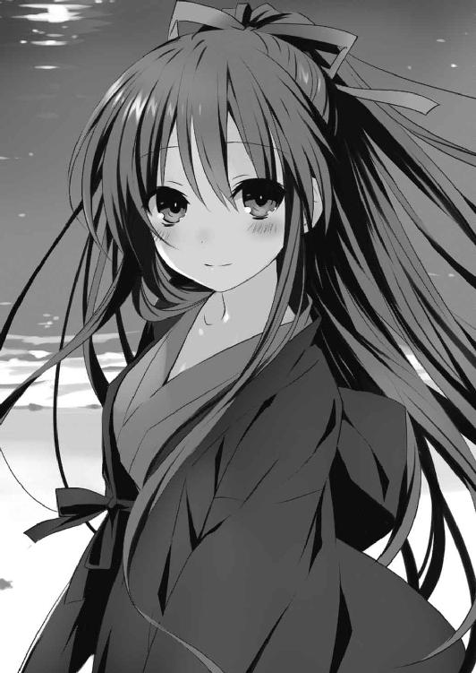

| デート・ア・ライブ 5 八舞テンペスト <デート・ア・ライブ> (富士見ファンタジア文庫) | |
| 橘 公司 & つなこ | |
| Kadokawa / 富士見書房 (2012) | |


デート・ア・ライブ５
八舞テンペスト
橘 公司
富士見ファンタジア文庫
本作品の全部または一部を無断で複製、転載、配信、送信したり、ホームページ上に転載することを禁止します。また、本作品の内容を無断で改変、改ざん等を行うことも禁止します。
本作品購入時にご承諾いただいた規約により、有償・無償にかかわらず本作品を第三者に譲渡することはできません。
本作品を示すサムネイルなどのイメージ画像は、再ダウンロード時に予告なく変更される場合があります。
本作品は縦書きでレイアウトされています。
また、ご覧になるリーディングシステムにより、表示の差が認められることがあります。
口絵・本文イラスト つなこ
序章 逆攻略
「......なんで、こんなことに」
士道は絶望的な心地でそう呟くと、今自分が置かれている状況を認識するために目を瞬かせた。
士道の視界には、二人の少女が確認できた。
一人は明るい色の髪を結い上げた、勝ち気そうな少女である。
可愛らしい唇の端を小さく上げ、美しい造作の顔に不敵な笑みを浮かべている。そして鎖骨の浮き出た首元から描かれるそのほっそりとしたボディラインは、彼女の大仰な所作とは対照的に、どこか庇護欲をかき立てられる儚げな魅力に溢れていた。
「くく......士道よ。何を悩むことがある？ 御主はただ選べばよいのだ。この我を。八舞耶倶矢を。さすれば主の望みを何なりと叶えてやるぞ？」
言って、少女──耶倶矢が、まるで歌劇でも演ずるかのような調子で優雅に手を伸ばし、士道のあごをクイと持ち上げてくる。ただそれだけの動作なのに、士道の脳には電気を流されたかのような衝撃が走った。
だが──それで終わりではない。
もう一人の少女は、耶倶矢と非常に──それこそ、ドッペルゲンガーを疑うほどに──よく似た顔立ちをしていた。
三つ編みに結われた髪に、どことなく物憂げな色を映す双眸。反してその肢体は、思わず目を釘付けにされてしまうほどに、肉感的な魅力に彩られている。
「誘惑。士道、耶倶矢などより、夕弦を選んでください。耶倶矢の貧弱な身体では味わえない快楽を与えてあげます」
言って、指先で士道の頬を撫でてくる。その官能的な感触に、士道は思わず身を強ばらせた。
「ふ......やめておけやめておけ。貴様なぞに言い寄られては、士道も迷惑というものだ」
「失笑。正攻法では勝てないからと、夕弦の行動にけちを付けるのはみっともないです」
耶倶矢と夕弦は互いに睨み合うと、まったく同時に士道に視線を戻し、これまた同時にバッと手を差し出してきた。
「さあ、士道よ」
「質問。どちらを選ぶのですか？」
「や、そ、そんなことを言われても......」
士道は顔中に脂汗を浮かばせながら後ずさった。
すると、
「なあ......我の方が、可愛いだろう？」
「質問。夕弦では......駄目ですか？」
なんて、二人して上目遣いになりながら、士道に問うてくる。
「う......」
頭の中に、混乱と疑問がぐるぐると渦巻く。
確かに士道は精霊を助けるため、世界を救うために、精霊を攻略することを是とした。
なのに......なんで。
──今士道は、精霊に、攻略されているのだろう。
士道が曖昧な笑みを浮かべながら答えをはぐらかしていると、耶倶矢と夕弦がさらにぐいと手を伸ばしてきた。
「さあ──どちらか一方を」
「請願。選んでください。士道」
第一章 ＤＥＭの策動
「──それでは、処分を言い渡す」
静かで重い男の声が、直立した折紙の鼓膜を震わせる。
自衛隊天宮駐屯地の一室には今、数名の男たちが居並び、部屋の中央に立った折紙に視線を向けていた。その表情は一様に険しく、まるで折紙を糾弾しているかのようである。
だが、それも当然だった。
なぜなら、今行われているのは、先の折紙の不祥事に対する査問であったのだから。
正面に座った男──桐谷陸将が、厳かな調子で言葉を続けてくる。
「鳶一折紙一曹を、懲戒処分とする。もう顕現装置に触れることは二度とないと思え」
「............」
予想通りの言葉。表情を変えることもなく細く息を吐く。
この査問は開始前からほとんど結末が定められているようなものだった。
形式上、弁護役に直属の上司である日下部燎子も列席はしていたが、ほとんど発言を認められていない。これはあくまで、折紙を懲戒にするための手順に過ぎなかった。
とはいえ、あれだけのことをしでかしたのだ。当然といえば当然である。むしろ折紙自身、それを覚悟の上で起こした行動でもあった。
あの精霊さえ。折紙の両親を殺した炎の精霊〈イフリート〉さえ倒せたなら、もう戦えなくなっても構わないと、討滅兵装の引き金を引いたのだ。
折紙の誤算は......〈イフリート〉五河琴里が、両親の仇ではなかったことだった。
否──まだはっきりしたわけではない。だが士道が命を賭して訴えた言葉をまったくの嘘と切り捨てることもまた、折紙にはできないのだった。
もし士道の言うことが本当で、五年前のあの場所に、もう一体精霊がいたとしたならば、折紙は真犯人を追うチャンスを、今ここで失ってしまうことになる。
その事実が、滅多なことでは動じない折紙の心臓をきつく締め付けるのだった。
だが──その瞬間。
「......？」
突然部屋の扉が開かれ、部屋に居並んだ男たちの視線がそちらに注がれた。
「なんだ、今は査問中だぞ。誰も入れるなと──」
桐谷が眉根を寄せながら言いかけ、その闖入者の顔を見ると同時、言葉を止める。
「──ミスター・ウェストコット？」
その怪訝そうな声と顔に違和感を覚え、折紙もちらと後方を見やる。
そこには、一人の男が、秘書と思しき少女を従えて立っていた。
漆黒のスーツに身を包んだ背の高い男である。くすんだアッシュブロンドに、貌にナイフで切り込みを入れたかのように鋭い双眸。歳はせいぜい三〇代半ばといったところだったが、どこか歳を経た老練さを感じさせる不思議な男だった。
その男の顔を見て、そして桐谷が呼んだ名を聞いて、折紙は微かに眉を動かした。
ＤＥＭ社業務執行取締役、サー・アイザック・レイ・ペラム・ウェストコット。
世界で唯一顕現装置を製造することのできる会社の、実質的なトップである。
「──ああ、お取り込み中だったかな。これは失礼」
ウェストコットは部屋を見回すと、流暢な日本語でそう言って小さく肩をすくめた。
「な、なぜこんなところにあなたが......」
桐谷が狼狽えた様子で言うと、ウェストコットがそちらに目を向ける。
「いえね、せっかく〈ホワイト・リコリス〉をプレゼントしたのに、マナがダウンしてしまっていると聞きましてね。ちょうど日本に来る予定がありましたので、ついでに激励とお見舞いにと思ったのですが......道中、面白いことを耳にしまして」
「面白いこと？」
桐谷が首を傾げると、ウェストコットは大仰にうなずいた。
「〈ホワイト・リコリス〉を起動させ、精霊と戦った隊員がいるそうではありませんか」
「......っ」
ウェストコットの言葉に、桐谷が息を吞むのがわかる。
それはそうだろう。ＤＷ‐０２９〈ホワイト・リコリス〉──折紙が無断使用した討滅兵装は、ＤＥＭの実験機。秘匿技術の結晶である。技術的に使用が困難という話以前に、ＤＥＭの出向社員たる真那にしか起動が許されていない装備だったのだ。
そんな思考を察したのか、ウェストコットが芝居がかった調子で首を振った。
「早合点はいけない。私は別に、そのことを責めるつもりも、不祥事を盾にとって某かの要求を通そうとするつもりもありません」
「......？ では？」
「純粋な好奇心です。あのじゃじゃ馬を僅かな間とはいえ乗りこなした魔術師というのはどんな方かと思いましてね。まあ──」
言いながら、ウェストコットが折紙に視線を向けてくる。
「君のような可愛らしいお嬢さんとは思わなかったがね」
「............」
その視線に、得体の知れない気味悪さを感じ、折紙はごくりと唾液を飲み下した。
それが伝わってしまったのだろうか、ウェストコットが苦笑しながら肩をすくめる。
と、そんなやりとりを遮るように、桐谷陸将がわざとらしく咳払いをした。
「今回の件に関しては後に正式に謝罪させていただく。一曹にも処分を与えるつもりだ」
「処分といいますと？」
「記憶処理を施した上での懲戒免職が妥当と結論が出たが」
桐谷がきっぱりと言うと、ウェストコットが大きなため息を吐いた。
「何を言っているのですか。あれを扱えるレベルの魔術師なんて、そうはいませんよ？」
「......そういう問題ではないのだよ、ミスター。これは隊の規律の問題だ」
「オォゥ......」
桐谷の言葉に、ウェストコットは大仰な仕草で額に手を置き、細く息を吐いた。
そして桐谷の目の前の机に手を突き、ずいと顔を寄せて口を開く。
「おわかりいただけませんか。私が、これだけ言っても」
『......っ』
ウェストコットの言葉に、部屋に居並んだ武官たちが一斉に息を詰まらせた。
それだけの迫力が彼にあったのも確かだが──それだけではあるまい。
アイザック・ウェストコットはＤＥＭ社業務執行取締役。つまり、世界中の顕現装置を牛耳っていると言っても過言ではない男なのである。
三〇年前、人類が手にした奇跡の技術。
空想を現実に再現する『魔術』の一端。
一般には公表されていないものの、既に顕現装置は各国の重要機関に配備されている。
もし仮に、ＤＥＭ社の気まぐれで、特定の国に顕現装置が供給されないという事態になりでもしたなら、その国の力を大きく削ぐことになってしまう可能性さえあるのだ。
桐谷陸将が、ごくりとのどを鳴らすのがわかる。ただでさえ今、陸上自衛隊はＤＥＭ社に大きな借りを作ってしまっているのである。ここで判断を誤り、ウェストコットの機嫌を損ねたならば、間違いなく厄介なことになるだろう。
だが。桐谷はぎりと歯を噛み締めると、拳を机に打ち付けた。
「......舐めるなよ民間企業。決定は覆らん。鳶一一曹は懲戒処分だ」
言って、キッとウェストコットを睨み付ける。
一瞬部屋中から息を吞む音が聞こえてくるが──異議を差し挟む者はいなかった。
当然といえば当然である。自衛隊の幹部が外国企業の要求に屈するなどという前例を、こんなところで作ってしまうわけにはいかないのだ。
「ご立派」
しばしの間無言で桐谷と視線を交じらせていたウェストコットは、ふぅと息を吐くと、ジャケットの内ポケットからスマートフォンを取り出し、どこかに電話をかけ始めた。
「──ああ、どうも。お久しぶりです。ええ、実はご相談したいことがありまして......」
そして幾度か言葉を交わしたのち、ウェストコットは桐谷に電話を手渡した。
「......？ 何を──」
「出ていただければわかります」
桐谷は訝しげに表情を歪めながらも、ウェストコットから電話を受け取った。
そして、それから数秒後。
「......ッ、佐伯防衛大臣......!?」
桐谷はガタッと椅子を揺らしながら、顔を驚愕に染めた。
「は......ですが。──い、いえ、決してそのようなことは......」
桐谷が額に汗を滲ませながら、眉間に盛大なしわを刻む。
そして通話を終えた桐谷は、電話をウェストコットに叩きつけるように放った。
「おっと。大事に扱ってくださいよ。最新型なんですから」
「......貴様っ」
「ふふ、文民統制というのは素晴らしいシステムですね。屈強な方々を相手取らずとも、一人の紳士と懇意にするだけで事が済む」
するとウェストコットは電話を内ポケットにしまい込み、桐谷に視線を送りながら小さく肩をすくめ、発言を促すように手の平を表に向けた。
桐谷は忌々しげにうめくと、先ほど打ち付けた拳を再び振り上げ、机に叩きつける。
「......鳶一折紙一曹を、二ヶ月間の謹慎処分とする......！」
『......!?』
その宣言に、並んだ幹部たちが目を見開いた。謹慎──要は、顕現装置の使用禁止。
折紙のしたことから考えれば、信じられないほどに甘い処分である。
「陸将。それは」
「......ッ、黙れ。私は処分を伝えたぞ。査問は終わりだ。さっさと失せろ！」
「ですが」
折紙が言いかけたところで、燎子が泡を食って立ち上がり、手を取ってきた。
「し、失礼します！」
言って敬礼をし、折紙を連れて足早に部屋を出ていく。
その際、ウェストコットが友人にするような動作で小さく手を上げてきたが、折紙はそれを一瞥するだけで返さず、燎子に引かれるままに扉をくぐっていった。
そして燎子は折紙を連れてさらにツカツカと歩き、声が届かないくらいの距離に至ってから、再び言葉を発してきた。
「......折紙、あんたさっき何言おうとしたのよ」
「......、たとえ間接的とはいえ、自衛隊幹部が外国企業の要求に──」
言いかけたところで、折紙はスパンッ！ と頭を叩かれた。
「何をするの」
「こっちの台詞よ。下手なこと言ってまた懲戒にされたらどうするの！」
「......困る」
折紙が言うと、燎子は頭をくしゃくしゃとかきながらはぁと息を吐いてきた。
「なら、いいじゃないの。偶然でもなんでも。神様が強面のエンジェルを遣わしてくれたとでも思っときなさい。......親御さんの仇、取るんでしょ？」
「............」
燎子の言葉に、折紙は拳をきゅっと握ってうなずいた。
燎子が表情を弛ませ、応ずるように首を前に倒す。
と。
「......ん？」
そこで燎子が不意に眉をひそめ、通路の奥へと視線をやる。
それにつられて首を後方へ回すと、廊下の曲がり角から、小さな頭が二つ覗いていることがわかった。
燎子と目を見合わせてから、静かにそちらに歩いていく。そして、
「わっ！」
燎子が不意に声を発すると、二つの頭はビクッと震え、その場にどてんと倒れ込んだ。
「い、痛たた......何するんですかぁ」
「むぎゅっ、お、重いです、ミケ」
そこにいたのは、十代半ばくらいの少女たちだった。片方は髪を二つに括り、来禅高校の制服に身を包んだ女の子。もう片方は、作業服の上に大きめの白衣を羽織り眼鏡をかけた、金髪碧眼の少女だ。
岡峰美紀恵二等陸士に、ミルドレッド・Ｆ・藤村二等陸曹。実戦要員と整備士という違いはあれど、双方、折紙や燎子と同じＡＳＴのメンバーだった。歳が近いからか、妙に折紙に懐いている二人組である。
「ミケにミリィ。あんたら......こんなところで何してるのよ」
腕組みしながら半眼を作った燎子が問うと、二人は一瞬で姿勢を正し、あたふたと手振りを始めた。
「あ、あの、それはですね、ええと、何ででしたっけミリィさん」
「うぇ!? ミリィに振られても困りますよー」
燎子はそんな二人の様子に、深いため息を吐き出した。
「どうせ折紙が心配だったんでしょ。......ったく」
「あ、あぅう......」
「申し訳ないです」
美紀恵とミリィはすまなそうに言うと、しゅんと肩をすぼませた。
だが美紀恵はすぐにバッと顔を上げると、折紙の方に視線を向けてくる。
「そ、それで......！ どうだったんですか、折紙さん！」
美紀恵が叫ぶように言うと、ミリィもそれに倣うように面を上げた。そんな二人の様子に、燎子が再び「ったく」と呆れ顔で吐息をこぼす。そののち、答えてやれ、とでも言うように折紙にあごをしゃくってきた。
燎子に応ずるように小さく首を前に傾けてから、唇を動かす。
「......二ヶ月間の謹慎処分が言い渡された」
「あ、ああ......」
その言葉を聞いた瞬間、美紀恵は膝からがくりとその場にくずおれた。
だがすぐに首をブンブンと振ると、ポケットから『辞表』と書かれた茶封筒を取り出し、廊下に叩きつける。
「か、かくなる上は私も職を辞させていただきたきゅ」
「言えてないですよミケ」
ミリィが、どうどう、と動物を宥めるように美紀恵の背をさする。
「ていうか、落ち着いてオリガミの言葉を復唱してください」
「え......？ だ、だって折紙さんは二ヶ月の謹慎に......え？ あれ？ 謹慎？」
目に浮かんだ涙を袖で拭い、美紀恵がその場に立ち上がる。
「き、謹慎ってことは、辞めなくてもいいってことですか!?」
「そう」
瞬間、絶望に染まっていた美紀恵の顔がパァァァっと明るくなる。
「よ、よかったです......折紙さんが免職になったら私......私......っ」
せっかく拭った涙が、再び美紀恵の目に浮かぶ。美紀恵はそのまま感極まった調子で両手を広げると、折紙に飛びついてきた。
「折紙さぁぁぁんっ！」
しかし折紙はそれに応ずることなく、咄嗟に身を捻ると、向かってきた小さな体躯を受け流し、すれ違い様、後頭部にエルボーを打ち込んだ。
別に攻撃をする意図はなかったのだが、身体に染みついた感覚が、自分に向かってくる相手に過剰反応を示してしまったのだ。
「へぶッ!?」
何とも珍奇な叫びを上げて、美紀恵がびたーん！ と勢いよく廊下に顔を打ち付ける。
「お、折紙さぁん......」
「......、突然来られたら、驚く」
「そ、そんなぁ......結構感動的なシーンでしたよねえ、今の......」
真っ赤になった鼻と額をさすりながら、美紀恵がずずっと鼻水を啜る。
と、そんな美紀恵を横目に見ながら、燎子が腰をかがめ、廊下に落ちていた茶封筒をひょい、と摘み上げた。
「ふーん......ＡＳＴ辞めたいの。仕方ないわね。人手不足は痛いけれど、ご丁寧にこんなものまで用意されちゃ、無下に断るわけにもいかないか」
言って、燎子が大げさなジェスチャーを交えながら肩をすくめ、わざとらしくため息を吐いてみせる。
「へっ!?」
素っ頓狂な声を上げたのはもちろん美紀恵だった。目をまん丸に見開き、慌てた様子でパタパタと燎子の方に走っていく。
「あ、あの！ それは......！」
「んー？ なーにー。どうしたのミケ。......ああ、馴れ馴れしい呼び方をしてごめんなさいね岡峰さん。大丈夫、あなたならきっとこれからの人生も上手くやっていけるわよ」
「隊長、ち、違うんです！ それは違うんですぅぅっ！」
ミケが燎子から辞表を取り返そうと手を伸ばす。だが、すんでのところで燎子がひょいと辞表を摘んだ手を上げた。
「そ、それは、それは何かの間違いなんです！ 悪の組織の陰謀なんですぅぅぅ！」
「間違いって......あんたが書いたんでしょうに」
美紀恵がぴょんこぴょんこ飛び跳ねるタイミングに合わせて、燎子がひょいひょいと辞表を上方へと逃がす。
明らかに、遊んでいた。生真面目な燎子にしては珍しい行動だったが......先ほどのストレスもあったのかもしれないし、ただ単に美紀恵が全身からいじめてオーラを出しているからかもしれなかった。
と、折紙がそんな様子をいつもと変わらぬ視線で見つめていると、ミリィがあははと朗らかな笑みを浮かべてくる。
「まあ、二人とも、オリガミがクビにならずに済んで嬉しいんですよ。......でもよく謹慎二ヶ月程度で済みましたねえ。正直、免職以外あり得ないと思ってたんですけども」
何と言ったらいいのだろうか、折紙が説明をしあぐねていると、ミリィがハッとした様子で両手を戦慄かせ始めた。
「っ！ ま、まままままさか......」
「ミルドレッド？」
不審に思い、名を呼んでみる。だがミリィはまったく気付かぬ様子で頬を紅潮させ、額に汗を滲ませていった。
「普通に考えれば懲戒クラスの不祥事......でもオリガミに下された処分は謹慎......あまりに軽すぎる不自然な処分......暗い部屋......好色な笑みを浮かべる上官たち......『クビにはなりたくないだろう？ なら何をすればいいのかわかるよなあ？』......嗚呼、オリガミは屈辱的な格好で這い蹲らされ、まだ誰にも見せたことのない乙女の──」
「こらッ！」
「ぎゃん！」
げしっ、と燎子の拳がミリィの脳天に振り下ろされる。
「な、何をするですかー！ ミリィの頭脳は人類の至宝ですぞー！」
「うっさい、考えてること全部口から漏れてるわよ」
「も、漏れてるって......まさかそんなマニアックなプレイまで強要され」
もう一度、燎子の拳がミリィの頭を揺らした。
「いったたた......もう、ミリィがバカになったらリョウコは責任とれるのですかー!?」
「もう十分膿んでるわよこの耳年増」
燎子はやれやれといった調子で拳を開くと、ミリィの頭をわしわしと撫でた。
と、そこで廊下の先から、二人分の靴音が響いてくる。
視線をそちらに向けると、黒いスーツの男と、サングラスをかけた少女の姿が確認できた。アイザック・ウェストコットとその秘書だ。
「............」
ぺこり、と頭を下げる。そんな折紙の様子を見て、他の面々もウェストコットの存在に気付いたらしい。ピタリとじゃれ合うのを止め、口を噤んでその場に直立する。
「──ああ」
ウェストコットはこちらに気付いたように眉を動かすと、折紙の脇を通る瞬間、その肩にポン、と手を置いた。
「期待しているよ、若き魔術師。君ならきっと、精霊を討ち滅ぼせる」
「............っ」
折紙はごくりと唾液を飲み下した。
敵意を感じるでも、殺意を感じるでもない。だが、折紙の心臓は普段からは考えられないくらいに急速に収縮を繰り返していた。まるで──今しがた隣を通り過ぎた男に、恐怖を感じてでもいるかのように。
「あれを」
ウェストコットがそう言うと、秘書が懐から小さな紙を取り出し、折紙に手渡してきた。
「どうぞ」
無言で、それを受け取る。そこにはI.R.P.Westcottの名と、電話番号と思しき数字の羅列、そしてメールアドレスが書かれていた。
「何か困ったことがあったならいつでも言ってくれたまえ。──デウス・エクス・マキナは、君への協力を惜しまない」
「......感謝します」
名刺を受け取り、静かな声で返す。だが結局、その目を見返すことはできなかった。
そんな折紙の様子に気付いているのかいないのか、ウェストコットは小さな笑みを浮かべてから、秘書を伴って歩み去っていった。
「あ、あのー......今のって」
「どちら様です？」
ミケとミリィが、まったく同じタイミングで首を傾げる。緊張した面持ちを作っていた燎子は呆れた様子で頭をかくと、二人に半眼を向けた。
「ＤＥＭ社のウェストコット氏よ。テレビとか雑誌で見たことないの？......ていうか、ミケはまだいいとして、ミリィ。あんたＤＥＭの出向でしょ。なんで知らないのよ」
ＣＲ‐ユニットの要である顕現装置を製造できるのは、世界中でＤＥＭ社のみである。ゆえに顕現装置を配備している各国の軍隊や警察組織には、ＤＥＭ社からの監督役や整備主任が派遣されているのだ。ミリィもまた、そんな人員の一人だった。
しかしミリィは、燎子の言葉に「あー」と指をあごに当てた。
「そういえばそんな人いたかもしれませんねー」
「そういえばって......あんたのところの親分じゃない」
「あはは、メカニックとマネージャーなんてそうそう顔合わせる機会ないですからねー。経営陣なんてのは黙ってミリィたちにカネ出してくれてりゃ誰だっていーですし」
「さらっと問題発言するわねえ」
燎子が苦笑する。だが折紙は、そんなやり取りがほとんど耳に入っていなかった。
手の平の上に残された名刺。そこに書かれた数字と文字の羅列を睨むように見つめ──もう一度、のどを唾液で湿らせた。
ウェストコットはカツカツと廊下に靴音を響かせながら、静かに息を吐いた。
「──見たかエレン。誰も彼も、ことの重大さを理解していない。そんな無能者が雁首を揃えて、万人に一人の天才を糾弾しているというんだからおかしなものだ」
「そうですね」
ウェストコットの数歩あとを歩きながら、少女──エレンが静かに返答してくる。
「しかし、未精製の魔術師が〈ホワイト・リコリス〉を動かせるとはね。──キリタニがあれでもトビイチオリガミの処分を撤回しないようであれば、彼女を我が社に迎え入れてもよかったかもしれないな。そういった意味では、彼が折れてくれたのは少し残念だよ」
「ＤＥＭに、ですか」
「ああ。丁寧に魔力処理を施せば、マナやアルテミシアや......それこそ、世界最強の魔術師、エレン・メイザースさえ超える魔術師になるかもしれない」
「............」
ウェストコットが目を細めながら言うと、世界最強の魔術師はしばらく押し黙った。冗談とわかっているだろうに、もしかしたら少し不機嫌になっているのかもしれない。ウェストコットはそんなエレンがたまらなく可愛らしく思えて、小さく肩をすくめた。
だがエレンはすぐに、何かを思いだしたように声を上げてきた。
「──そういえば、一つご報告が」
言って、エレンが手にしていたファイルを開く。
「報告？」
「はい。関東近辺に連続して現界していたＡＡＡランク精霊──識別名〈プリンセス〉が、およそ三ヶ月前から確認されなくなっていることは、先日お伝えしましたね」
「ああ、聞いたよ。だが別にそんなことは珍しくないだろう？」
「はい。ですが、これを」
エレンが一枚の写真を、ウェストコットに向けてくる。
そこには二人の少女の姿が収められていた。一人は、先ほど顔を合わせた鳶一折紙一曹である。そういえば彼女は予備隊員扱いで、平時は高校に通っていると聞いていた。
だが──問題は、もう一人の少女の方だった。
折紙と同じデザインの制服に身を包んだ、細身の少女である。腰まであろうかという夜色の髪に、美しい面。一度見たならば生涯忘れ得ないであろう、幻想的な水晶の瞳。
間違いない。間違えようがない。それは、
「──〈プリンセス〉、だと？」
ウェストコットは鼓動を早めた心臓を制しながら、静かな声で言った。
そう。そこに写っていたのは、件の精霊・〈プリンセス〉だったのである。
「どういうことだ、これは。精霊がハイスクールに通っているとでも言うのか？」
ウェストコットが眉をひそめながら言うと、エレンは小さく口を開いた。
「彼女の名は夜刀神十香。〈プリンセス〉が姿を眩ましたのと同時期に、都立来禅高校に転入した女子生徒だそうです」
「自衛隊の対応は？」
「鳶一一曹から精霊に酷似した生徒がいるとの報告はあったようですが、観測の結果精霊の反応が確認できなかったため、一般人と断定した模様です」
「観測方法は」
「ＤＳ‐０６による外部観測です」
「馬鹿な」
使用した観測器の名を聞いたウェストコットは、右手で額を覆い、ため息を吐いた。
「精度の低い車載型の観測機で一度きり？ それだけで他人の空似と断定したと？」
「そのようです」
「今確信したよエレン。平和呆けはどんな痴呆よりも恐ろしい」
「至急、再調査を要請します」
「──いや、待て」
だが、ウェストコットは手を広げてそんなエレンの動作を制止した。
「どうせお優しい自衛隊のお歴々に任せたところで、健康診断と変わらぬような検査をするくらいが限界だろう」
「では」
「──ああ。こちらで独自にやらせていただくよ。その方が手っ取り早いし、確実だ」
「しかし」
エレンが言ってくるのを制止する。彼女の言いたいことはわかっていた。
この夜刀神十香嬢が精霊である可能性がある以上、彼女が本性を現した際に対応をするだけの戦力を用意しておく必要がある。
だが、ＡＡＡランク精霊に対応するだけの人員と装備を、ＡＳＴのお膝元で秘密裏に運用するのは非常に困難だ。
要は、ご馳走を目の前に置かれながら、手を出せない状況である。エレンが自衛隊に再要請を出そうとしたのも、そんな考えがあったからだろう。
「──それをもう少し見せて貰えるかな」
「は」
ウェストコットがエレンの手元を指さすと、彼女は短く答えてから、手にしていたファイルを差し出してきた。
それをパラパラと捲り──ウェストコットは唇の端を歪めた。
「ほう......グッドタイミングじゃあないか。──なあエレン、最近精霊を相手にしていなくて身体が鈍っているのではないかね？」
「............」
言うと、エレンはぴくりと頬を動かした。
精霊は気まぐれで神出鬼没である。最強の戦力を用意したところに都合良く出現してくれるとは限らないし、仮に精霊を追いつめたとしても、消失されては意味がない。
だが、その所在がわかっているというのなら、話は単純だった。
「この件は君に任せよう。──エレン。エレン・ミラ・メイザース。世界に二人と並ぶ者のない、人類最強の魔術師よ。君にならばできるはずだ。たとえ相手が、世界を殺す彼の悪逆の精霊であろうとも」
エレンは、一拍おいてから答えてきた。
「もちろんです。相手が何者であろうと、私は負けません」
予想通り、期待通りの返答である。ウェストコットはくつくつと、愉快そうに笑った。
◇
短く息を吐いて、崇宮真那はゆっくりと目を開けた。
長い間目を使っていなかったためだろうか、モザイクがかかったように視界がぼやける。身体にも上手く力が入らず、全身が鈍く痛んだ。
「ここ......は......」
一瞬、自分ののどから発された声が、誰のものかわからなかった。渇ききったのどと、耳鳴りのする鼓膜。声を誤認するには十分過ぎる要素だろう。あとはもしかしたら、脳自体が自分の声を覚えていないのかもしれない。そんな馬鹿みたいな考えが頭を過ぎる。
数分をかけて、真那は身体の感覚を取り戻し、自分の置かれている状況を確かめた。
白い部屋。大きなベッド。身体の至る所に包帯が巻かれ、左手には点滴、口元には酸素マスクが取り付けられている。胸元には電極のようなものが張り付けられ、真那の鼓動に合わせて心電図が規則的な音を鳴らしていた。
真那は思わず苦笑した。どこからどう見ても重体患者のそれである。
「なんで、私は、こんな......」
そこまで言って、真那は目を見開いた。酸素マスクをむしり取って、痛む身体を起こす。
そして首を回し、棚の上に置かれているデジタル時計に目をやった。
──14：00 7/5 WED
「七月......五日......!?」
そこに記されていた日付を見て、真那は息を詰まらせた。
この時計が狂っているだとか、誰かが真那を騙そうとして意図的に日付をずらしているとか、そういったことがない限り。
真那が〈ナイトメア〉──時崎狂三と来禅高校の屋上で戦った日から、ひと月近くの時間が過ぎていたのである。
そう。あのとき真那は、天使を顕現させた本物の狂三の前に為す術なく敗れ去ってしまったのだった。
あの場にいたのは真那と狂三以外に、士道、十香、折紙の三人きり。誰も、あの状況を覆すことができるとは思えなかった。それが意味すること。即ち......
「兄様......ッ！」
真那は胸に張り付けられた電極と、左腕に刺された点滴を無理矢理外した。途端に心電図が乱れ、ピー、という音が鳴る。
そしてそこでようやく、真那は初歩的なことに気付いた。
「なんで......私、死んでねーんでしょう......」
確かに身体は痛む。目は霞む。全身の感覚器が本調子とは言い難い。
だが──生きている。
あの人喰い〈ナイトメア〉の前で無防備な姿を晒してなお、真那は生存していた。
だとすると、余計わけがわからなくなる。真那が気を失った時点で、戦況は最悪だった。高校の屋上には狂三の分身体が溢れ、その最奥には、時を操る彼女の天使が鎮座していた。
誰でも一目見ればわかるような絶望的な状況。それを打破するような戦力が、そうそうこの世に存在するとは思えない。
だが、それだと真那が生きていることに説明がつかないのである。──あの変態女が、気まぐれとかそういった理由で意趣を返しでもしない限りは。
真那は痛む頭に手を置いた。真那が存命しているからといって、他の面々に危害が及んでいないか否かはわからない。あの場にいた皆は、一体どうなってしまったのだろうか。
「......え？」
と──思案を巡らせていた真那は、不意に声を発して眉をひそめた。
病室の扉が開き、黒いスーツを纏った数名の人間が入ってきたからだ。
「──崇宮真那だな」
「......何者でいやがりますか、あなたたちは。医者や看護師にしては黒ーですね」
真那が視線を鋭くするも、黒服の男は微塵も動じなかった。
「一緒に来てもらおう。手荒な真似はしたくないが、抵抗するのならその限りではない」
「......ああ？」
真那は顔を不機嫌そうに歪めると、言葉を発した男を睨み付けた。
「誰に口をきいているのかわかっていやがるのですか？ 手荒な真似？ この私に？ はッ、できるものならしてみやがれってんです」
言って、真那はその場に立ち上がり、身体を慣らすように手首を振った。
「崇宮さん、どうかされましたか？」
言って病室の扉を開け──その看護師は凍り付いた。
「え......？」
崇宮真那の心電図に異常が見られたということで様子を見に来たのだが......その病室には今、誰もいなかったのである。
乱れたベッドの上には、取り外された酸素マスクや電極、点滴の針などが散乱し、つい今し方まで人が寝ていたことを示すようにうっすらとくぼみができている。
だが、左右に首を振っても、ベッドの下を覗いてみても、意識不明だったはずの患者の姿はどこにも見えない。
看護帥は慌ててベッドの枕元に駆け寄ると、ナースコールのボタンを押した。
◇
「終わったー......」
聞き慣れたチャイムが校内に鳴り響くと同時、五河士道は力を使い果たしたように机に突っ伏した。自分では見えないが、たぶん頭からは煙が立ち上っていることだろう。
だがそれも仕方あるまい。何しろ士道は今、学校生活における難敵の一つ、期末試験を終えたばかりなのだから。
「はいはーい、ダレてちゃ駄目ですよぉ。うしろから答案を集めてくださーい」
パン、パンと手を叩き、教卓の前に立った小柄な眼鏡の教師が声を上げる。このクラスの担任、岡峰珠恵教諭・通称タマちゃんである。
生徒たちはゾンビのような挙動で身を起こすと、順にテストを前の席へ送っていった。
いつもよりもクラスメートのゾンビ率が高い気がしたが、それも当然だろう。
ただでさえ範囲の広い期末考査だというのに、この学校の生徒たちは、つい数日前まで、集団で病院送りになっていたのである。
先月末、来禅高校にいた生徒・職員が皆意識不明に陥るという事件が発生した。
徹底的なガス管や建材、あとはガスを発する異物等の検査の末、休校は解除されたのだが......無慈悲なことに、期末試験の日程は一日も動かなかったのである。
「......ん？」
と、プリントの束に自分の答案を載せて前に送る際に、右隣の席に座った少女の姿が目に入った。一瞬前の士道と同じように、机にびたー、と突っ伏している。
「十香、大丈夫か？」
「う、うむ......」
士道が話しかけると、十香がゆらりと顔を上げた。
「どうだった？」
「む......むぅ、まあまあだ」
十香が疲れ果てた顔で、ひらひらと手を振ってくる。
前の中間試験では、答案用紙に落書きをしていただけ（点数は令音が赤点にならないよう手を回していた）の彼女だったのだが、士道にテストの意味を聞いてからは、自分で頑張ってみると勉強を始めていたのだった。どうやら、士道がテスト勉強をしているのに、自分だけが何もしないでいるのが嫌だったらしい。
自発的な十香の行動は〈ラタトスク〉側としても望むところらしく、テスト前に五河家で勉強会を開いたのだが......やはり慣れない勉強は相当に彼女の体力を削っていたらしい。実際、勉強会を始めて一時間で熱を出していた。ある意味、本当の知恵熱である。
「はい、ではこれで、一学期末テストは全教科終了です。皆さんお疲れさまでした」
タマちゃんが声を上げる。教室中から歓声と放念の息が漏れた。
「でも、今日はまだ決めることが残ってますから、帰っちゃだめですよぉ？」
タマちゃんは念を押すように言うと、答案の束を整え、教室を出ていった。
と、それに合わせるように、カッサカサになった十香がゆらゆらと椅子から立ち上がる。
「シドー......少し、水を飲んでくる」
「お、おう。大丈夫か？」
「うむ......心配するな。少し疲れただけだ」
言うと、十香はふらふらした足取りで教室を横切り、扉を開けて廊下へと出ていった。
「はは......まあ、頑張ったもんな」
士道は十香の背を見送ってからふうと息を吐くと、椅子の背もたれに身を預け──ぴくりと眉を動かした。
理由は単純。視界の端に、左隣の席に座った女子生徒の姿が映り込んだからだ。
肩口をくすぐる髪をピンで留めた、色白の少女である。首を左──窓の方に向けているため、顔は窺い知れないが、そこに表情らしきものが微塵も浮かべられていないであろうことは容易に想像がついた。
鳶一折紙。士道のクラスメートにして、精霊を狩るＡＳＴの隊員である。
「......ぅ」
何をしているわけでもないのに、心臓が軋むように痛んだ。思わず顔を歪めてしまう。
士道は先月の一件を最後に、一度も折紙と会話を交わしていなかったのだ。
なんとなく、この機会を逃しては、また話しかけるチャンスを逸してしまう気がした。意を決して唇を開く。
「お......折紙」
士道が名を呼ぶと、折紙は一瞬肩をぴくりと揺らしてから振り向いてきた。
「──なに」
そして、いつものように静かで抑揚のない声音で、そう言ってくる。
なぜだろうか、そんな折紙の調子に少しだけホッとしてしまった。
だが、その言葉を最後に、士道と折紙の間に沈黙が流れた。
「え、ええと」
このまま黙っていても仕方がない。士道はあの一件のあとのことを訊こうとした。
だが、さすがにクラスメートの耳がある教室でそんな話をするわけにもいくまい。
幸い帰りのホームルームまでは少し時間があるし、十香も席を外している。士道はごくりと唾液を飲み下してから、再び口を動かした。
「折紙。ちょっと、二人きりになれる場所に行かないか？」
「............っ」
士道がそう言ったところで、折紙が眉を動かした。
「二人きりに──なれる、場所？」
そしてなぜか、一言ずつ区切るように言ってくる。
「ああ。ほら、前話をした階段の上とかでも──」
「──きて」
折紙はすっくと立ち上がると、そのまま士道の手をむんずと掴んで歩いていった。
「お、おい、折紙？」
名を呼ぶも折紙は答えなかった。屋上に至る階段には目もくれず、ひとけのない校舎の奥へと足音を響かせていく。
そして折紙はそのまま、校舎の端にある女子トイレへ向かっていった。
「いや、ちょっと待てよ！」
「なに」
士道がすんでのところで手を振り払うと、折紙が不思議そうに首を傾げてきた。
「ここは教室から離れているから、テスト期間中はまず誰も来ない」
「いや、そうかもしれねぇけど！」
「大丈夫」
「ちょッ、やめ──いやマジでどこ連れてくつもり!?」
抵抗は意味を成さなかった。士道はぐいと手を引かれると、そのまま一番奥の個室に連れ込まれ、ガチャリと鍵を掛けられた。
「......ええと」
明らかに二人以上の人間が入ることを想定されていない手狭な空間で折紙と向かい合いながら、士道は頬に汗を垂らした。
と、視界の端で、何やら折紙がモゾモゾと動き始める。
「折紙、何して──」
言いかけて、息を詰まらせる。
だがそれも当然だろう。何しろ折紙が両手を左右からスカートの中に差し入れたかと思うと、そのまま白の下着をぐいと足の中程まで下ろしたからだ。
「ちょっ、待てっ！ ストップ！ よ、用足すなら外で待ってるから！」
「......？」
しかし折紙は、そんな士道の反応こそ意外といった顔をして首を傾げた。
そしてすぐにポンと手を打つと、下着を穿き直し、今度はその場にしゃがみ込んだ。そして士道の腰元に手を伸ばし、カチャカチャとベルトの金具を外そうとしてくる。
ひッ！ と息を詰まらせ、泡を食って折紙の両腕を掴み、動きを止めさせる。
「何してんだ！ 何してんだ!?」
「......？ では、何をするためにこんなところに連れ込んだの？」
「連れ込んだのは折紙さんですよね!?」
半ば泣きそうになりながら叫んでから、どうにか息を整える。
「俺は......ただ、先月のことについて話をしようと」
「......ああ」
士道が言うと、折紙は納得したような、そこはかとなく残念そうな顔を作った。
「......何をすると思ってたんだ？」
「それは」
「やっぱ言わなくていいですごめんなさい」
「そう」
折紙はすっくと立ち上がって士道の顔を見ると、静かに唇を開いてきた。
「──査問の結果、二ヶ月間の謹慎処分が言い渡された」
「え？」
「あのあとのこと」
「謹慎......ってことは、ＡＳＴを辞めずに済んだのか!?」
士道が驚愕の声を上げると、折紙は黙って首を前に倒した。
「そっか......クビにはならなかったのか」
胸元に手を置き、ほうと吐息する。すると折紙が、微かに眉を揺らした。
「なぜそんな反応をするの」
「あ、いや......確かに、そうだな。なんでだろうな」
言われて、士道は困ったように頭をかいた。
士道は折紙に、精霊と戦って欲しくないはずなのに。できることならＡＳＴから抜けて欲しかったはずなのに。
なぜだろうか、折紙の口からそれを訊いた瞬間、少しだけホッとしてしまったのだった。
「──私は、まだ納得しきったわけではない」
「......っ」
折紙の言葉に、息を詰まらせる。
彼女が何のことを言っているのか、一瞬で察しがついてしまったからだ。
「炎の精霊、〈イフリート〉。あなたは、私の両親を殺した精霊は彼女ではないと言った。──でも、それを証明する決定的証拠は、ない」
「......、それは......」
折紙は、過去に両親を殺した精霊を討つために、ＡＳＴに入隊したのだという。
そして先月。彼女はようやくその仇と思しき精霊と見えた。士道の妹──琴里と。
無論、折紙は全てを擲ち、法と規定を犯してまで琴里を殺そうと襲いかかってきた。
だがそのとき、士道は思い出してしまったのだ。五年前の記憶を。炎に包まれた街の情景を。そして──そこにいた、もう一人の精霊の存在を。
「確かにそうかもしれない。でも......信じて欲しい。俺は、絶対に嘘は──」
「勘違いしないで。士道のことを信じていないわけではない。あなたの言葉は、信じたい。──それに、どちらかといえば、士道の言葉が正しくあって欲しいと思っている」
「え......？」
「私も、できることなら士道の妹を殺したくなんてない」
「折紙......」
士道は一瞬目を見開いてから、拳をくっと握って小さく頭を下げた。
「──ありがとう、折紙」
「それは、こちらの台詞」
折紙が、再び士道から目を背け、そんなことを言う。彼女の意図がわからず、士道は微かに眉根を寄せた。
折紙がゆっくりと視線の位置を元に戻しながら、少し躊躇いがちに唇を動かしてくる。
「感謝している。......私に、変わらず話しかけてくれて」
「......いや、おまえな」
「私は、あなたの妹を殺そうとした人間。──いえ、それ以前に三ヶ月前、私はあなたを殺してしまうところだった」
「............」
士道は苦虫を噛み潰したような顔を作ると、頭をくしゃくしゃと掻きむしった。
「気にするな......とは言えねえよ。でも──それでも俺は、折紙、おまえと今まで通り話したいと思ってる。──駄目か？」
士道が問うと、折紙は一瞬逡巡のようなものを見せてから、ふるふると首を横に振った。
「ん」
士道は腕組みすると、再び首を前に倒した。
「じゃあ、そろそろ教室戻るか。すぐホームルーム始まるし」
「──待って。最後に一つ、確認しておきたいことがある」
「ん、なんだ？」
士道が身体を後方に向け直しながら言うと、折紙が士道の顔をジッと見つめてきた。
「──士道。あなたは、人間？」
「......っ」
思わず言葉を詰まらせる。──だが、それは十分予想できた質問だった。
「前から、不思議に思っていた。私はあのとき、間違いなくあなたを撃った。......でも、あなたは数日後、傷一つない状態で学校にきた。それに──この前の遊園地のときも」
そう。折紙が琴里を襲撃した日。士道は、琴里の霊力を封印し、琴里から得た再生能力を示した上で折紙に言ったのだ。
──今の琴里は人間であり、〈イフリート〉の力は自分が有していると。
──だから、狙うのであれば、自分を狙え、と。
「ぐ......」
思えば、士道も無茶をしたものである。
折紙を説得するためには仕方なかったとはいえ、精霊と敵対するＡＳＴ隊員である彼女に、自分の秘密を漏らしてしまったのである。
そんな思考を表情から推し量ったのだろうか、折紙が士道の言葉を待たず口を開く。
「安心して。上には、報告していない」
「っ、そうなのか？」
問うと、折紙はほとんど間をおかずにうなずいた。
「でも、一体なんで......」
「不確定な情報を流して隊を混乱させるわけにはいかない。それに、もしあなたが精霊であると判断された場合、あなたの討伐指令が出る可能性がある」
「......っ！」
心臓がどくんと脈打つ。討伐指令。その文言は一つの事柄しか示さない。つまりは──ＡＳＴが、機械の鎧を纏った現代の魔術師たちが、その全力を以て士道を殺しに来るということである。
だが、それも無理からぬことである。何しろ、精霊の力を封印し、一部とはいえそれを使用しているというのだ。精霊と断じられても不思議はない。
しかし──
「俺は......人間だよ。少なくとも、自分ではそのつもりだ」
意図せず琴里と同じ言い回しになってしまったが、そう言う他なかった。
「そう」
「......疑わない、のか？」
「言ったはず。あなたの言うことは、信じたい」
ちらと士道の顔を見るように首を回し、続ける。
「いつか、もし私に話してくれるときが来たなら、詳しい話を聞かせて欲しい」
「......すまん。ありがとう」
士道が言うと、折紙は個室の扉を開けてトイレから出ていった。
一瞬あと、士道はとんでもないデンジャーゾーンに一人置き去りにされたことに気付き、キョロキョロと辺りの様子を窺いながら、そそくさとトイレから逃げ出した。
が、折紙のあとを追って廊下を歩いていき、教室に戻ったところで、
「......シドー？」
背後から訝しげな十香の声がして、士道はビクッと肩を揺らした。
「と、十香......」
どうやら水を飲み終えたらしい十香は怪訝そうに士道と折紙を交互に見ると、険しい顔をしながら言葉を続けてきた。
「......なぜシドーと鳶一折紙が、女子トイレから出てきたのだ？」
「ッ！」
瞬間、顔面にぶわっと汗が噴き出る。完全に、見られていた。
「い、いや、それは......その......」
士道は事情を説明しようとしたが、もう周囲には生徒たちの姿が見受けられる。下手なことは言えなかった。
「............」
と、折紙が無言のまま、意味ありげに士道に目配せをしてくる。
「なんだ今のは！ 一体何をしていたのだ!?」
「内緒。二人だけの、秘密」
「な、なんだと!?」
折紙が人差し指を一本立て、鼻の前に持っていく。その折紙らしからぬコミカルなジェスチャーに、十香は目を見開いて叫びを上げた。すぐさま、士道に鋭い視線を向けてくる。
「シドー！ 何をしていたのだ！」
「え!? や......その、だな」
士道は気まずげに頭をかいた。別に十香に言う分には構わないのだが......四〇人弱もの生徒が密集している教室で先ほどの話をするのはあまり気が進まなかった。
「......すまん、あとでな」
「!!」
仕方なく士道が頭を下げると、十香は背後に『がーん！』という擬音が見えるかのような表情を作ってその場にくずおれた。
「と、十香！」
「うっ、ううぅぅぅ......なぜだ、なぜ鳶一折紙はよくて、私は駄目なのだ......」
悔しそうにうめき、歯をぎりぎりと噛み合わせる。
「お、落ち着け！ あとで！ あとでちゃんと話してやるから！」
「ほ、本当......か？」
「本当！ 本当だから！」
足を折って膝を突き、あたふたと手を動かしながら訴えかけると、どうにか十香は不安そうな顔を上げた。だが、
「......言えない。あんなことをされたなんて」
折紙の言葉に、十香が愕然と目を見開く。
「し、シドー......？ おまえ、一体何を......」
それと同時に、周囲からもひそひそと声が聞こえてきた。
「えー......五河君サイテー」「鳶一さんのあんな顔初めて見た......」「真っ昼間の学校でナニしてんのよ」「十香ちゃんというものがありながら......」「ちくしょう......ちくしょう......」「なあ毒出すのって酸性と塩素系だっけ？」「今すぐ賛美歌13番をリクエストしろ」
「いや、何もしてねえって！ ていうか後半！ 何しようとしてんだよ！」
弁解の声を上げる。だが、周囲から注がれた粘っこい視線は一向に晴れなかった。
と、そこで、背後から教室の扉が開く音が聞こえ、タマちゃん教諭が現れる。
「はいはーい、皆さん席に着いてくださぁい。ホームルームを始めますよぉ」
「！ ほ、ほら十香！ とりあえず席着こう！ な!? みんなも！」
天の助けである。士道は必要以上に大きな声で叫ぶと、自ら率先して椅子に腰掛けた。
皆まだ何か言いたげだったが、先生が来てしまった以上仕方がない、と席に戻っていく。十香もまた、「......あとでちゃんと全部教えるのだぞ」と言いながら着席した。
そんな様子を見てか、タマちゃん教諭がくすくすと笑みを漏らす。
「あらー、楽しそうですねぇ。みんなで何してたんですかぁ？」
「いえ、お気になさらず......」
士道が汗を滲ませながら言うと、タマちゃん教諭は「あらあらー」と楽しげに笑ってから教卓の前に立った。
「さ、じゃあ帰りのホームルームを始めまぁす。でも、その前に決めておかないといけないことがあるんですねぇ」
「はーい、何決めるんですかー？」
殿町が手を高く挙げ、質問を投げる。タマちゃんは小さくうなずいてから声を続けた。
「修学旅行の部屋割りと、飛行機の席順ですよぉ」
「......あ」
タマちゃんが言った瞬間、士道は声を上げた。
そういえば、七月の半ば──夏休みの直前に、沖縄への修学旅行が控えていたのだ。
集団昏睡事件に、期末試験。それに精霊関連の様々な案件のため、学生生活における一大イベントを失念してしまっていたのである。
とはいえ、それは士道だけではなかったらしい。クラスの三分の一くらいは、士道と同じように「あー......そういえば」とうなずいていた。
「うふふ、みんな忘れんぼさんですねぇ。さ、じゃ早いところ──っと、そうだ」
と、タマちゃんが、何かを思い出したように眉を跳ね上げ、出席簿に挟んであったプリントを取り出した。
「その前に。──今回の修学旅行、行き先が変更になりました」
『──え？』
クラス中の声が、見事に重なる。
それはそうだ。修学旅行まであと半月程度しかないのである。そんな土壇場になって行き先が変更になるだなんて、聞いたことがない。
「んん......まぁそうなりますよねぇ」
「ええと、それで、どこに変更になったんですか？」
再び、殿町が質問を投げる。
そう。なぜ急に行き先が変更になったのかも確かに気にかかるが......皆にとって一番大事なのはそこだった。
何しろ元の目的地は沖縄なのである。青い海白い砂浜、さーたーあんだぎーとちんすこうをかじりながら珊瑚礁とめんそーれな旅行のメッカなのだ。この日のために水着を新調した女子だって少なくはない。これでもし海無し県に変更にでもなったなら、冗談抜きに暴動が起きかねない。
そんな不穏な気配を肌で感じ取ったのか、タマちゃんが少し上擦った声で続けた。
「だ、大丈夫ですよぉ。変更後の場所も、とっても素敵なところですから」
「だから、結局どこになったんですか？」
「ええと......或美島です」
タマちゃん教諭がその名を発すると、クラスの半分くらいが「あー......」とうなるような声を上げ、もう半分が首を傾げた。
「或美島っていうと......確か伊豆の方だっけ？」
「なんだよ近場になってんじゃん。グレードダウンかよ」
「いや、そうとも言えないぞ。観光地としちゃ悪くない」
「はいはい！ 静かにしてくださぁい」
にわかに騒がしくなったクラスを静めるように、タマちゃんがパンパンと手を叩く。
クラスの面々は、「まあとりあえず海が無くならなかっただけでもよしとするか......」という総意の下、大人しく教諭の指示に従った。
「細かい部分の説明は改訂版のしおりができてから行いますので、とにかく今は部屋割りを決めちゃいましょぉ。好きな人同士で四、五人くらいの班を作ってくださぁい」
タマちゃんが指示を出すと、皆は一瞬周囲の様子を窺うように視線を巡らせてから、ガタガタと席を立ち、仲の良いグループを作っていった。
士道の方にも、殿町が歩いてくる。
「おう五河、部屋組も──」
「シドー！」
だが殿町の声は、右方からの叫びに掻き消された。
十香が、目を輝かせて机から身を乗り出している。
「その部屋割りとやら、一緒に組むぞ！」
「え......ええっ？」
思わず眉根を寄せ、素っ頓狂な声を出してしまう。しかし十香は、なぜ士道が驚いているのかわからないといった様子で不思議そうに首を傾げた。
「ぬ？ どうかしたのか？」
「いや、さすがにそれはまずいだろ」
「なぜだ？ 五人一組なのだろう？ ならば問題ないではないか」
「だ、駄目ですよ夜刀神さん。男子と女子は別々に組んでくださぁい！」
会話が聞こえていたのだろう、教卓からタマちゃんが叫んでくる。
「むう......なぜだ？ シドーと一緒がいいのだが」
「な、なぜって......それは」
タマちゃんは顔を酸漿のように真っ赤に染めてごにょごにょと口ごもった。
士道はため息を吐くと、十香に向き直る。
「あんま先生を困らせるなって。とにかく、部屋は男女別じゃないといけないんだ」
「ぬ......そうか」
十香は残念そうにしゅんと肩を落とした。が、すぐにバッと顔を上げる。
「！ そうだ！」
十香はそう言うと、教室の外へと走っていった。そして扉がぴしゃりと閉じられたのち、廊下からロッカーをいじくるようなガタガタという音が響く。
一分ほどあと、再び教室の扉が開かれ、十香が入ってきた。
──スカートの代わりにジャージを穿き、髪を引っ詰めにした十香が。
「......十香？」
「違う。わた──俺は、十......とお、そう、とおるだ」
士道が名を呼ぶと、十香がなぜか意図的に低くした声音でそう返してきた。
十香の意図を察するに、それは......
「というわけだ。タマちゃん先生。俺は今日から男だ。これで問題なかろう」
「大ありですっ！」
たまらず、といった感でタマちゃんが叫びを上げる。
「むぅ......これでも駄目なのか......」
十香が弱り切った顔でしょんぼりと背を丸める。と、
「──待って」
そこで予想外の人物が十香に助け船を出してきた。折紙だ。
「夜刀神十香の言い分を認めてあげて欲しい。是非柔軟な対応を」
「え......ええっ!?」
十香と犬猿の仲である彼女の発言に、タマちゃん教諭が驚愕の表情を作る。否、先生だけではない。日頃の彼女らの小競り合いを見ている面々が、一様に驚いた顔をしていた。
「貴様......何が目的だ？」
「あなたの諦めない姿勢に感銘を覚えただけ。あなたには男子の部屋に入る資格がある」
十香はしばしの間、警戒するように半眼で折紙を見つめていたが、数秒のあと、ふんと鼻を鳴らして視線を逸らした。
「......れ、礼は言わんぞ！」
「必要ない」
「ちょ、ちょっとちょっと！ 何二人で話を進めてるんですかぁ！ 駄目ですよぉ!?」
タマちゃん教諭がバンと教卓を叩き、制止する。
が、折紙はさして気にする素振りもなく言葉を続けた。
「──ただし、男子として修学旅行に臨む以上、きちんと決まりは守ってもらう」
「決まり？」
「そう。トイレも、入浴も、全て男子と一緒」
「な......ッ！」
『おぉ......ッ!?』
十香が顔を真っ赤にして息を詰まらせ、同時に男子たちが一斉に色めき立つ。そんな男子たちを、女子の一団がじとっとした視線で見ていた。
「無論、身体をじろじろ見られようと、何かの弾みに触れられようと、それは合法。なぜならあなたは男子なのだから」
「な、ななな......」
十香が手を戦慄かせ、泣きそうな顔で折紙を睨み付ける。
しかし折紙は意に介さず、視線を士道の方に向けてきた。
「──しかし、女子が一人男子になってしまったのは非常に重大なイレギュラー。きちんと補完をする必要がある」
「は......？ それってどういう......」
「男子が増えてしまった以上、士道には女子になってもらう他ない」
「いや意味がわかんねえよ！」
「一緒に洗いっこしよ、しど美」
「それ俺の名前!?」
士道はたまらず叫んだ。優等生である折紙の言うことだからきっと正しいのだろう、みたいな顔をしていたクラスの面々も、さすがに「んん？」と首を捻る。
と、そこで何やらあごに手を当てて考えを巡らせていた十香がハッと目を見開いた。
「ちょっと待て！ シドーが女子になったら、私と一緒の部屋になれないではないか！」
「あなたは男子として強く生きて。応援している」
「う、うぬぅぅッ、図ったな、鳶一折紙ッ！」
「あーもう落ち着けッ！ とにかく、男女は別部屋だ！ 性別入れ替えもなし！」
士道が今までで一番の大声を上げると、ようやく二人は大人しくなった。
一応の落着を見てか、タマちゃん教諭もほうと胸をなで下ろす。だが──
「ま、まあ、お部屋は一緒というわけにはいきませんけど、飛行機の席順は自由ですからね。そっちなら隣でもいいですよ？」
タマちゃんがいらないことを言った瞬間、十香と折紙の目が再び輝いた。
第二章 暴風少女
「修学旅行？ ああ、聞いてるわ。沖縄でしょう？」
五河琴里は空中艦〈フラクシナス〉の艦橋で、口にくわえたチュッパチャプスの棒をピコピコ動かしながら部下の報告に応じた。
長い髪を黒いリボンで二つに括り、深紅のジャケットを肩がけにした少女である。どんぐりのように丸い目。未だ幼さの残る貌。どう見ても艦橋などという場所には似つかわしくない小さな女の子だ。
「......いや、急に目的地が変更になった。行き先は或美島だ」
目元に分厚い隈を蓄えた軍服姿の女──村雨令音が、酩酊しているかのように頭頂部をゆらゆらと揺らしながらそう言葉を続けてくる。
「変更？ こんな時期に？ なんでまた」
「......ああ。ひと月ほど前、クロストラベルという旅行会社が学校側に接触してきた。なんでも観光ＰＲのため、ランダムに学校を選び、島に招致しているらしい。パンフレット用の写真を撮ることが条件となるが、修学旅行の費用は全て会社持ちという話だ」
「はー、随分太っ腹ね。......でも、いくら好条件とはいえ、そんな土壇場で行き先変えちゃうものかしらね。宿泊先とか決まってたんでしょ？」
「......なんでも、予定していた宿が突然崩落し、利用できなくなっているらしい。そこにそんな申し出があったものだから、学校側としても飛びついたというわけだ」
「崩落？」
穏やかでない話だ。琴里は訝しげに眉をひそめた。
「......ああ。まだ詳しくはわかっていないが、恐らく老朽化が原因だろうということだ」
「ふうん......。ま、タイミングが良すぎる気がしないでもないけど......先方がそれでいいって言ってるんならいいんじゃないの？ 令音も羽を伸ばしてきなさいよ」
琴里は小さく肩をすくめながら言った。
村雨令音は〈ラタトスク機関〉の解析官であると同時に、来禅高校二年四組の副担任でもある。今回の修学旅行にも教師として随伴する予定だった。
だが、令音はふっと顔をうつむかせると、難しげにうなった。
「どうしたのよ」
「......いや、思い過ごしであればいいんだが。どうやらこのクロストラベルという旅行会社──もとを辿ると、ＤＥＭインダストリーの系列会社のようでね」
「なんですって？」
その名を聞いて、琴里は不審そうに顔を歪めた。
デウス・エクス・マキナ・インダストリー。英国に本社を構える世界有数の巨大企業であり、〈ラタトスク〉の母体の一つであるアスガルド・エレクトロニクス社を除けば世界で唯一、顕現装置を製造することのできる会社である。
そして、精霊を平和的に封印しようとする琴里たち〈ラタトスク〉とは、正反対の理念を持つ組織でもあった。
つまりは、精霊の積極的な殲滅である。
「......きな臭いわね、どうも」
琴里はチュッパチャプスの棒をピンと立て、眉の間に深いしわを刻んだ。
修学旅行に行く来禅高校の面々の中には、士道と十香が含まれているのである。万一のことを考えて準備をしておくに越したことはないだろう。
「多分偶然でしょうけど、念のため旅行の日程に合わせて〈フラクシナス〉を随行させましょう。ま、とはいえ万が一問題があったときにすぐ動けるようにしておけば問題ないし、実質休暇みたいなものかもしれないけれど」
「......ん、そうだね。それがいいだろう。何か問題が起こったら、現地から連絡を入れる。それまでは待機していてくれればいいさ」
「旅行は何日からだっけ？」
「......七月一七日から二泊三日だね」
「げ。そうなの？ その日、私本部に出向なのよね。まずったな」
と、琴里が困ったようにあごに手を当ててうなっていると、背後にザッ、という足音を立てて長身の男が現れた。
〈フラクシナス〉副司令・神無月恭平が、ビッと親指を立てて爽やかな笑顔を浮かべてくる。嫌味なほど白い歯がキラリと光る。
「参ったわね。どうしようかしら」
しかし琴里は、そちらに視線を向けることもなく言葉を続けた。
「......ふむ、日程をずらすわけにはいかないのかい？」
「多分無理ね。円卓会議が直接集まれる日なんて、一年に一日あるかどうかだもの」
琴里がそう言うと、背後に立っていた神無月が一歩前に踏み出してきて、身を反らしながら妙にアクロバティックな姿勢で静止した。なぜだろうか、背後に『ドギャァァァァァァン』とか『ドドドドドドドドドド』なんて擬音が見えた気がした。
「......そうか。そうなると」
「ええ、誰かに艦を任せないといけないわね。できれば令音にお願いしたいけど......」
「......私は直接随伴してしまうしね。現地との連絡要員がいなくなるのもまずいだろう」
「そうなのよねえ。誰かいないかしら」
ため息混じりに呟くと、神無月がくるくると二人の前に躍り出てきた。そして白鳥のごとく優雅な所作で両手を広げ──
「うっとい」
「目が粒子砲ッ!?」
琴里のチョキに眼球を凹まされ、その場にもんどり打って倒れ込んだ。
「何なのよさっきからうろちょろと。創作ダンスの練習なら他所でやってくれない？」
「いやいやいや、何を仰るのですか。話を聞くに司令は士道くんの修学旅行中、〈フラクシナス〉を預かる代役を探しておられるご様子」
神無月がバッと両手を広げる。
「その大任、私以外にこなせる人間がおりましょうか！ いやいない！ 反語！」
「で、そうなるとやっぱり幹本か川越になるのかしらね」
「......どうだろうね。彼らはクルーとしては優秀だが、果たして指揮が取れるかどうか」
「放置プレイ！ そういうのもあるのか」
無視して話を進めると、神無月がやたらとハァハァいい始める。さすがに鬱陶しかったので、琴里は舌打ちとともにそちらに視線を向け直した。
「......この前私がいなかったとき、随分と滅茶苦茶したって聞いてるけど？」
「大丈夫です！ あのときは司令への愛がピッグバンしただけですから！ ブヒィ！ 今度は問題ありません！ しっかと士道くんの青春の一ページを見届けてみせますっ！」
「......令音」
「......まあ、現場には私もいるし、多分大丈夫だろう」
琴里は胸に渦巻く不安感を払うように、はあと深いため息を吐いた。
◇
七月一七日、月曜日。飛行機に揺られることおよそ三時間。士道たち来禅高校二年生一行は、太平洋に浮かぶ島に到着していた。
「お、おお......！」
空港から外に出た十香が、目をまん丸に見開いて両手をプルプルと震わせる。
だがそれも仕方のないことなのかもしれなかった。何しろ今、彼女の視界には、首を動かさねば把握仕切れないほどの絶景が広がっていたのだから。
道路と砂浜の向こうに大海が広がり、天と地を分かつように水平線が伸びている。空は快晴。太陽が燦々と降り注ぎ、海を美しいグラデーションに彩っていた。
「こ、これが......海か！」
叫び、その大きさを測るかのように、両手をバッと広げてみせる。
だが無論、彼女の小さな両腕に収まりきるほど、大洋は狭くはなかった。さらに興奮した調子で、小さく肩を震わせながら身体を反らす。
「はは......元気だな」
そういえば、十香は直接海を見たことがなかったかもしれない。士道はややオーバーな十香の所作に苦笑しながら肩をすくめた。
或美島。伊豆諸島と小笠原諸島の中間あたりに位置する、総面積七〇平方キロメートルほどの島である。
三〇年前の連続空間震の際に島の北部が削り取られ、近年新たな観光地として再開発が成された、ある意味では士道たちの暮らす天宮市と似たような来歴を持つ場所でもあった。
完璧に区画整理の成された北街区は、他の再開発地域の例に漏れず、完璧な災害対策が施されている。また、空間震によって綺麗に削り取られた海岸は、その珍しさと美しさから、日本はもとより、外国からも多数の観光客を呼んでいるのだった。
無論、空間震によって命を落とした被害者のことを思えば不謹慎ということになるのだろうが......過疎化が進んでいたこの島は、空間震によって一大観光地として復興を遂げたといっても過言ではないのである。
「んー......」
十香ほどではないにしろ、士道とてこんな絶景を前にして何も感じないほど感受性が乏しくはない。景色を見回し、深呼吸しながら身体を伸ばす。
だがそこで不意に、あくびが一つこぼれた。
「ふぁ......ぁ、っと」
集合時間が朝早かったからだろうか、妙に瞼が重い。飛行機の中でも、危うく眠ってしまうところだった。
まあ、とはいえ......
士道は未だ興奮気味に手をブンブン振る十香と、空港の出入り口から出てきた折紙を一瞥しながら息を吐いた。
飛行機の席は、幸か不幸か三列になっていたため、士道を真ん中において左右にそれぞれ十香、折紙が座ることで合意を得たのだが......
（士道、見て。景色が綺麗）
（シドー！ こっちだって綺麗──あっ！ 窓が遠い!? 鳶一折紙、貴様、謀ったな！）
（座席を決める際に希望を出さなかったあなたが悪い）
（ぐっぬぬぬぬ......）
（士道。見て、水平線が見える）
（く......っ、し、シドー！ こっちだって、その、あれだ！ 凄いぞ！ 飛行機の通路は格好いいな！ すいへーなど相手にならん美しさだな！）
（見て。遠くに山が見える。もっと寄って）
（うぬっ......、こ、こっちだって......！ シドー、見ろ！ 令音の胸元に巨大な山が！）
（雲を抜けた。見て。雲海。雲が絨毯のよう）
（こ、こっちはその......う、うがーっ！）
......などとステレオ音声で騒がれまくったため、寝るに寝られなかったのではあるが。
「ぬ......？」
ふと、はしゃいでいた十香が、妙な声を出して辺りをキョロキョロと見回しだした。
「？ どうした、十香」
「......いや、何か誰かに見られている気がしてな」
「え？」
と、士道が首を傾げた瞬間、カシャリという音がして、二人をフラッシュの光が包んだ。
「わっ！」
突然のことに思わず手で顔を覆ってしまう。チカチカする目を細めながら光の方向を見やると、そこに、大きなカメラを構えた女性が立っていることが知れた。
ノルディックブロンドというのだろうか、淡い色の金髪を風になびかせた少女である。明らかに東洋人とは違うはっきりとした目鼻立ちと、白い肌が特徴的だった。
「えっと......なんですか？」
士道が困惑しながら訊ねると、少女がカメラを下ろして視線を向けてきた。
「失敬。クロストラベルから派遣されて参りました随行カメラマンのエレン・メイザースと申します。今日より三日間、皆さんの旅行記録を付けさせていただきます。──無遠慮な撮影、申し訳ありません。気分を害されたようでしたら謝罪させていただきます」
「ああ、いや、別にそんな」
そういえば、旅行写真を撮るためにカメラマンが随行するといわれていた気がする。まさか外国人──しかも、士道たちとそう歳の変わらない少女とは思いもしなかったが。
「お邪魔をしました。では」
と、士道と十香が物珍しそうにその容貌を見ていると、エレンがもう一度ぺこりとお辞儀をして、皆の方に歩いていった。
「なんだったのだ、あやつは」
腕組みしながら、十香が不思議そうに首を傾げる。
「さてな......でも、誰かに見られてる気がするってのは正解だったわけだ」
「む、うむ」
言って左右に視線をやり、終いには顔を上に向ける。
「......まだ、視線が残っている気がするのだが」
「え？」
その言葉に眉をひそめ、十香の見ている方向に目をやったが──そこには、士道たちの来訪を祝福するかのように晴れ渡った青空しかありはしなかった。
◇
「アデプタス１より入電。目標、島に入りました」
「六番カメラ、北街区、赤流空港。目標を確認」
「こちらからも確認。〈プリンセス〉です」
艦橋下段から響く声に合わせ、モニタに少女の姿が映し出される。
ＡＡＡランク精霊。識別名・〈プリンセス〉と、寸分変わらぬ容姿を持った少女の姿が。
「ふむ......」
ＤＥＭ社製五〇〇メートル級空中艦〈アルバテル〉。
その艦長席に腰掛けた初老の男は、小さくうなりながら髭の生えたあごをさすった。
ジェームス・Ａ・パディントン。ＤＥＭインダストリー第二執行部の大佐相当官であり、ウェストコットにこの〈アルバテル〉を任された艦長である。
「存外拍子抜けだな。本当にこれが精霊なのか？」
『──くれぐれも油断はしないでください』
と、それに返すように、艦橋のスピーカーから若い女の声が響いてくる。
識別信号アデプタス１、直接現場に出向いているＤＥＭ第二執行部部長、エレンの声である。
『精霊かもしれない。それだけで、第一級の警戒をするには十分な理由です』
右画面に映し出されたエレンが言ってくるのに、肩をすくめながら返す。
「肝に銘じさせていただきますよ」
そんなパディントンの反応が不服だったのか、エレンは微かに眉を歪めた。
「......ち」
エレンに聞こえないくらいの大きさで、舌打ちを漏らす。
最強の魔術師だか何だか知らないが、親子ほども歳の離れた娘の命令に従わねばならないのは、やはり面白いものではなかった。しかもそれがウェストコットの情婦であると噂の立つ女だというのだからなおさらに。
だが、パディントンは与えられた立場と役職を理解できないほどの無能ではなかったし、意味もなく悪感情を言葉にしてしまうほど幼稚でもないつもりだった。咳払いをしてから、画面上の少女に返す。
「それで、どうします？ いくら精霊とはいえ、〈バンダースナッチ〉の部隊にかかれば、小娘一人を捕獲するくらい容易いものでしょう」
『そう甘くはありません。慎重にいきましょう。まずは、電波通信を遮断してください』
「了解。〈アシュクロフト‐β〉二五号機から四〇号機まで並列起動、恒性随意領域を展開。目標は──或美島全域」
パディントンの声に応え、クルーがコンソールを手早く操作する。
すると、画面に映し出されていた或美島の画像に、ＣＧパターンで薄いドームが描かれるのが見えた。
目視では確認できない、触れることさえ叶わない、不可視の壁。随意領域。
今〈アルバテル〉は、或美島の上空二万メートルに浮遊している。
そこから、艦に搭載されている顕現装置〈アシュクロフト‐β〉を用いて、ＡＳＴ要員のそれとは比べものにならない規模の随意領域を、島全体に展開したのである。
これで、島内と島外の通信は、エレンたちの用いる特殊な通信機器でしか行えなくなったはずだ。これで──島の中で何があろうと、ＡＳＴが手出しをしてくることはない。
「──と、そういえば、件の魔術師はどうですかな？」
パディントンはあごを撫でながら問うた。確か、ターゲットと同じクラスに、ＡＳＴの魔術師がいるという話だった。まあ、今は謹慎中ということで顕現装置の使用を禁じられているらしいし、さして弊害になるとは思えなかったが......問題は、その魔術師がエレンと会ったことがあるということだった。
『問題ないでしょう。顔を合わせたのは数分程度ですし、あのときはサングラスをしていました。気付かれた様子は──』
と、通信の途中でエレンの言葉が途切れる。モニタを見ると、何やら突然の風に顔を覆っているようだった。
「大丈夫ですかな、執行部長殿」
『はい。ですが......妙ですね』
言って、エレンが空を眺める。
それと同時に、艦橋の大モニタに映し出された映像にも変化が現れ始めた。
パディントンは思わず眉をひそめた。
理由は単純。通常であれば考えられないような速度で。
空が、雲が、見えない腕に攪拌されたかのように、渦を巻いていったからだ。
「ああもう、置いていかれちまったじゃねえか。ほら、急ぐぞ十香」
士道は早足になりながら後方を振り返り、未だ首を傾げている十香に声を投げた。
そう、あのあと十香がどうしても気になると言って辺りの様子を探っていたところ、いつの間にか学校の皆が移動を始めてしまっていたのである。
「む......すまん。だが本当に見られていた気がしたのだ」
十香が小走りしながら、すまなそうに言ってくる。士道はやれやれと息を吐いた。
「そりゃ、あんだけ騒いでりゃ見られるっての」
「むう、そういうものか......」
十香がうなるように言って、押し黙る。
「ええと......確かこっちだったよな？」
頭の中で出立前に見た地図を思い起こし、分かれ道を左へ。確か最初に向かう資料館はこちらの方向だったはずだ。
ついでにその際右耳に触れて、そこに小型のインカムが装着されていることを確認する。旅行中十香の機嫌が崩れたときのために装着しておくよう言われていたのだ。
琴里は本部に出向とかで今日本にいないらしいが、〈フラクシナス〉は今この島の上に浮遊しているという話だ。最悪、これで連絡を取れば道に迷うことはないだろう。
「ぬ......？」
と、後方から十香の怪訝そうな声が聞こえてきて、士道は足を止めた。
振り返ると、また十香が空を見上げているのがわかる。
「おい、いい加減にしろよ。いくら見たって──」
「いや、違う。何かおかしくはないか？」
「は......？」
言われて上空に目をやり──士道は言葉を失った。
「な、なんだ......こりゃあ」
つい先ほどまで綺麗に晴れ渡っていた空に、灰色の雲が渦を巻き始めていたのである。
そして段々と、驚くべき速さで、辺りの様子が様変わりしていく。
快晴は暗雲に。凪は烈風に。穏やかな水面は荒れ狂う大波に。
時間にして、おそらく一分と経つまい。
そんな僅かな間に、士道たちのいる世界の景色は、一変してしまった。
地鳴りのような風音が周囲から鳴り響き、辺りに生えた木々をばさばさと揺らす。大型台風もかくやというほどの暴風である。近くのゴミ箱が転げでもしたのだろう、空き缶や新聞紙が視界の中を横切っていった。
士道は咄嗟に十香の肩を掴むと、姿勢を低くさせた。そうでもしなければ、風に煽られて転倒してしまいかねなかったのだ。
「これは──一体......！」
顔を腕で覆いながら、眉をひそめる。
天気予報では、修学旅行中の三日間は全て快晴であったはずである。無論それが一〇〇パーセント的中するだなんて士道も思っていないが、いくらなんでもこれは異常過ぎた。
「十香、大丈夫か!? 急いで資料館に──」
「シドー！ 危ない！」
と、言葉の途中で十香が士道の身体を突き飛ばしてくる。
「な......」
次の瞬間、金属製のゴミ箱が飛んできて、十香の頭にクリティカルヒットした。
「ぎゃぷッ!?」
なんてコミカルな声を発して、十香がその場に倒れ伏してしまう。
「お、おい、十香！ 十香！」
慌てて叫び、肩を揺するも、十香は完全に目を回してしまっていた。
「く......仕方ない」
士道はぐったりした十香をどうにか背負うと、資料館の方に向かって歩いていった。
ゆっくりと、しかし確実に、一歩一歩足を進める。
「もうすぐだからな、十香......っ！」
──そして、どれくらい歩いた頃だろうか。
「あ......？」
士道は、不意に眉をひそめた。
荒れ狂う空の中心。
──そこに、二つの人影らしきものが見えたからだ。
「あれは......」
士道はハッと息を詰まらせた。
空を飛ぶ人影だなんて、士道には二通りしか心当たりがなかったのである。
つまりは──精霊と、ＡＳＴの魔術師。
「まさか......」
嫌な予感が頭をかすめる。
通常では考えられない突発性の大嵐。もしそれが、精霊の力によるものだとしたら──
「いや、でも......空間震警報なんて鳴ってないよな。一体これは......」
士道は数瞬の間考えを巡らせてから、予定通りの順路に足を進めた。
確かにもしあの人影が本当に精霊ならば、放ってはおけない。だがその確証があるわけでもないし、何よりまずは十香を安全な場所に移すのが先決だった。ぐったりとした十香を背負い直し、資料館に向かっていく。
だが。
「──！」
士道は息を詰まらせた。上空で幾度となく激突を繰り返していた二つの影が、一際大きな衝撃波を伴ってぶつかり合った瞬間、今までとは比較にならぬほど凄まじい風が吹き荒れたのである。
「う、うわ......ッ！」
吹き飛ばされぬよう足を踏ん張り、身体を丸めるような姿勢を取る。
と、上空で激突した二つの影は、互いに弾き飛ばされるように地面へと落下した。
──ちょうど、士道を挟んで右と左に。
「な......」
士道は額に汗を滲ませた。緊張感が心臓を引き絞り、喉を急速に渇かしていく。
するとその瞬間、辺りに吹き荒れていた大嵐がふっと弱まった。
「え......？」
思わず眉をひそめ、周囲を見やる。
嵐が止んだ......というのは語弊のある表現だった。未だ或美島には、凄まじい風が吹き荒れている。
士道と十香の周囲だけが。否──もっと正確に言うのなら、地上に落ちてきた二つの人影の回りだけが、台風の目のように穏やかな無風状態だったのである。
「く、くくくくく......」
と、右手から、長い髪を結い上げた少女が、不敵に笑いながら歩み出てくる。
年の頃は士道たちとそう変わるまい。橙色の髪に、水銀色の瞳。整った造作の面は、しかし今嘲笑めいた笑みの形に歪められていた。
そして何よりも特徴的なのはその装いだった。暗色の外套を纏い、身体の各所を、ベルトのようなもので締め付けている。おまけに右手右足と首に錠が施され、そこから先の引きちぎられた鎖が伸びているときたものだ。まるで途方もない大罪を犯した咎人か──さもなくば、猟奇的な被虐快楽者のような出で立ちである。
「──やるではないか、夕弦。さすがは我が半身と言っておこう。この我と二五勝二五敗四九分けで戦績を分けているだけのことはある。だが──それも今日で終いだ」
大仰というか、芝居がかっているというか、妙な言葉遣いをする女の子である。
と、今度はそれに応ずるように、左側から人影が進み出てきた。
「反論。この一〇〇戦目を制するのは、耶倶矢ではなく夕弦です」
こちらは、長い髪を三つ編みに括った少女である。耶倶矢と呼ばれた少女と瓜二つの顔をしているのだが、その表情は、どこか気怠そうな半眼に彩られていた。
こちらの夕弦と呼ばれた少女もまた、少々デザインは異なるものの、耶倶矢と似たような拘束服を身につけていた。ただ、錠の位置は首に左手、左足と、反対側になっている。
「ふ、ほざきおるわ。いい加減、真なる八舞に相応しき精霊は我と認めたらどうだ？」
「否定。生き残るのは夕弦です。耶倶矢に八舞の名は相応しくありません」
「ふ......無駄なあがきよ。我が未来視の魔眼にはとうに見えておるのだ。次の一撃で、我が颶風を司りし漆黒の魔槍に刺し貫かれし貴様の姿がな！」
「指摘。耶倶矢の魔眼は当たった例しがありません」
夕弦が言うと、耶倶矢は口ごもり、先ほどまでの大仰な調子を忘れたように叫んだ。
「う、うるさいっ！ 当たったことあるし！ 馬鹿にすんなし！」
「要求。夕弦は耶倶矢に具体的な事例の呈示を求めます」
「くく......それは、あれだ。ほら......次の日の天気とか当てたことあるし」
「嘲笑。下駄の裏表と変わらない魔眼（笑）の効果に失笑を禁じ得ません」
夕弦が口元に手を当て、フスー、と息を漏らす。どうやら笑っているらしい。
「だ、黙らんか！ 我が魔性の瞳術を愚弄するとは、万死に値するぞ！ 我を怒らせた代償、その身を以て思いすりぇッ！」
だが耶倶矢からしてみればそれはよほど屈辱だったらしい。構えを取りながら叫ぶ。ただ、語尾を噛んでいたためあまり格好がついていなかった。
しかし夕弦は意に介さず、問いを続ける。
「要求。次いで夕弦は耶倶矢に、シュトゥルム・ランツェについて説明を求めます」
「ふ......我が颶風を司りし漆黒の魔槍に、理に縛られた器など存在しない。有形にして無形。可視にして不可視。ただ刺し貫くことにのみ特化した概念の力よ」
「要約。つまり特に意味はないということですか」
「ちッ、違うし！ 意味あるし！ 理解できない夕弦が馬鹿なんだし！」
「請願。では夕弦にも理解できるような説明を。頭のいい耶倶矢にならできるはずです」
「それは......と、当然だ。だが悲しいかな、我が漆黒の脳細胞は、貴様の理解すら及ばぬ高次へと昇ってしまったのだ。そう、蟻に意志を伝えられる獅子がおらぬように──」
「理解。つまりできないということですね」
「くく、貴様......あまり我を怒らせぬ方が」
「嘲笑。シュトゥルム・ランツェ（笑）」
「わ、笑うなぁぁぁぁぁぁっ！」
耶倶矢が顔を真っ赤にして叫び、両手をバッと広げる。右手首から伸びた鎖がじゃらりと鳴り、周囲に荒れ狂う嵐が一層強くなった。
今度は夕弦も、それに応ずるように構えを取る。
そして、二人は油断なく視線を交じらせたのち、
「漆黒に沈め！ はぁぁッ！」
「突進。えいやー」
裂帛の気合いと、気の抜けた声とともに、まったく同時に地を蹴った。
「く......」
息を詰まらせる。精霊二人の激突に、こんな至近距離で巻き込まれたならひとたまりもないだろう。士道は琴里の霊力によって傷を回復することができるかもしれないが、意識を失っている十香がどうなってしまうかは想像に難くない。
そうこうしている間にも、二人は凄まじいスピードで士道の眼前まで迫っていた。
もう考えている暇はない。士道は大きく息を吸い込んだ。そして──
「待、てぇぇぇぇぇぇぇぇぇッ！」
『......!?』
士道の叫びによって、二人がその場に停止する。
「何、今の声......ええと、そう、絶対地獄の底より響く亡者共の嘆きにも似た......」
「報告。耶倶矢、あれを見てください」
夕弦が士道を指さし、耶倶矢が眉を歪める。どうやら本当に今の今まで、士道と十香の存在に気づいていなかったらしい。
「人間......だと？ まさか。我らが戦場に足を踏み入れるとは、何者だ？」
「驚嘆。驚きを禁じ得ません」
言って、怪訝そうな視線を浴びせかけてくる。
「あ、いや......」
士道はしどろもどろになって足を一歩引いた。
どうにか二人の激突を止めることはできたが、代わりに注意を引いてしまったらしい。二対の鋭い双眸に射竦められながら、ごくりと唾液を飲み下す。
他にどうしようもなかったとはいえ、迂闊な行動ではあった。何しろ性格や気性すらわからない精霊（しかも、二人である）の注意をわざわざ引き付けてしまったのだ。もし彼女らが好戦的な精霊だった場合、非常にまずい事態になるだろう。
と、そこで右耳の鼓膜をノイズのような音が震わせ、次いで眠たげな声が聞こえてきた。
『......シン、聞こえるかい、シン』
「！ 令音さん！」
『......ああ、ようやく通じたね。一体今どこにいるんだい』
「そ、それが──」
士道は声をひそめながら、簡潔に状況を説明した。──精霊が二人、目の前にいる、と。
『......なんだって？ 風の中に二人の──まさか』
「な、何か心当たりが......？」
と、士道と令音の会話を遮るように、視線を鋭くした耶倶矢が口を開く。
「──我らの神聖なる決闘に横槍を入れるとは、貴様、一体どういう了見だ？ 答えによっては我が......ええと、光を貫きし影の邪槍が貴様を貫くことになるぞ」
「指摘。先ほどと名前が違います」
「い、いいから！ 夕弦は黙っててよ！」
「疑問。夕弦が黙らねばならない意味がわかりません」
夕弦が涼しい顔で言うと、耶倶矢が肉食動物のようにぐるるる......とのどを鳴らす。
いろいろと気になるところはあったが、士道はもっとも不穏な単語を復唱した。
「け、決闘......？」
問うと、耶倶矢が双眸を鋭く歪めてくる。
「その通り。よくも我らの命運を定める神聖なる決闘を水入りにしてくれたな。どう責任をとってくれるつもりだ？」
「制止。耶倶矢、それでは脅迫です」
「うるさいっ！ せっかく上手くいくところだったのに......」
「確認。何か言いましたか」
「な、何でもないし！」
耶倶矢はフンと息を吐き、夕弦から顔を背けた。
「とにかく、このままでは気が収まらんわ。そうさな──」
だが、すぐに何かを思いついたようにカッと目を見開いた。
「！ ああそうか、これなら......」
そして再び夕弦に顔を向け、まるでじっくりと品定めでもするように、その頭頂から爪先までくまなく視線を這わせる。
「質問。何でしょうか、耶倶矢」
「くく......よい方法を思いついたぞ、夕弦よ。我と貴様は様々な勝負をしてきた。それこそ、もう思い当たる種目がなくなるくらいにな」
歌劇でも演ずるように大仰な身振りをしながら耶倶矢が続ける。
「だが......一つ、まだ勝敗を決していないものがあるとは思わぬか？」
「疑問。勝敗を決していないもの、とは？」
夕弦が首を傾げると、耶倶矢がくくく、と含み笑いを漏らし、士道を一瞥した。
「へ......？」
なぜだろうか──士道は、その表情に、薄ら寒いものを感じた。
◇
移動の最中、突然吹き荒れた強風は、瞬く間にその規模を増し、激しい嵐となった。
こうなっては悠長に歩いていられない。来禅高校二年生の面々は、教諭たちの指示のもと、空港からほど近い位置にある資料館に避難していた。──だが。
「士道......」
分厚いガラス窓を軋ませる凄まじい風に、折紙は拳を握りしめながら声を発した。
館内に避難した生徒の中に、士道（とゴミムシ一匹）の姿がなかったのである。きっと道中どこかではぐれ、外に取り残されてしまっているに違いない。
無論士道を捜しに外に飛び出そうとはしたものの、すんでのところで教諭たちに止められてしまった。
否──もし仮にあそこで外に出られていたとしても、この暴風の中ではまともに進むことすらできなかっただろう。
「く......」
今の折紙には、士道の無事を祈ることしかできなかった。無力感がやり場のない焦燥となって身体中を巡り回る。
「......おい、なんだか、空が晴れてきてないか？」
と、窓際にいた男子生徒が、不意にそんな言葉を発した。わらわらと生徒たちが窓の方に群がり、空を見上げ始める。
折紙はその声に弾かれるように顔を上げると、生徒たちの間を縫うようにして資料館の出入り口へと走っていった。
「あ......！ と、鳶一さん！ まだ危険ですよぉ！」
珠恵の制止を振り切り、扉を開ける。そしてそのまま外へ出──ようとしたところで。
「......？」
折紙は不意に足を止めた。
資料館の前に、既に折紙の探し求めていた人物の姿があったのである。
「お、おう......折紙」
折紙に気付いたらしく、士道が口を開いてくる。風のせいだろう、髪や服は乱れていたが、幸い、どこにも怪我はなさそうだった。
だが折紙は、安堵するよりも先に眉をひそめ、視線を鋭く研ぎ澄ました。
士道の様子がおかしい......というか、士道に変なオプションがついていたのである。
まず、士道の背に負われた十香だ。どうやら気を失っているらしい。
まあ、これはいい。いや、よくはないのだが、まったく予想できない事態ではなかった。
問題は──
「どうだ士道。夕弦などより我の方が魅力的であろ？ 我を選んだならば、我の身体の好きな場所に契約の口づけをさせてやるぞ？」
「誘惑。夕弦を選んでください。いいことをしてあげます。もうすんごいです。耶倶矢なんて目じゃありません」
左右にそれぞれ瓜二つの顔をした制服姿の少女が立ち、何やら馴れ馴れしく士道の身体に触れながら、やたらと士道を誘惑していることだった。
士道は絶望的な心地で、全身に注がれる生徒達の視線を浴びながら、一〇分ほど前の出来事を思い起こしていた。
暴風に包まれた領域の中、不敵に笑みを作った耶倶矢が言い出したのは──こんな内容だったのである。
「──未だ我らが勝敗を決していないもの。それ即ち......『魅力』！」
バッと格好いいポーズをキメながら、耶倶矢が高らかに宣言した。
「真の精霊、颶風の御子・八舞には、力や頭脳だけでなく、森羅万象を嫉妬させるほどの美が、色香が、必要だとは思わぬか？」
「思案。............」
数秒間押し黙り、夕弦もまた、耶倶矢に視線を這わせた。頭頂から爪先まで、値踏みをするように、じっくりと。
そしてそののち、ふむ、とうなずく。
「回答。なるほど、と答えます。確かに、今までそれを競ったことはありませんでした」
「くく......そうだろう。しかしそれも当然だ。今まで我らの闘争に割って入れた者などは皆無──第三者に裁定を委ねる争いが出来るはずもなかったのだからな。──だが、今は」
耶倶矢は低い含み笑いを漏らしながらビッ！ と士道に指を向けた。
「──貴様、名は」
「え？ い、五河......士道だけど」
「士道。ふむ、贄に相応しき脆弱そうな名よ。よろしい。貴様を今、裁定役に任ずる」
「は......？ え、いや......」
言われている意味が今ひとつ掴めず、目を点にする。
だが耶倶矢には、士道の意志などどうでもいいことらしかった。嘲るようにあごを上げ、挑発するような調子で続ける。
「どうだ夕弦。この勝負、応ずる勇気が貴様にあるか？ くく、まあ万象一切をひれ伏せさせる我の魅力を以てすれば、勝敗など見えたようなもの。今尻尾を巻いたとて、卑怯者の謗りを受けることなどあるまいよ」
「否定。そんなことはあり得ません。耶倶矢が勝つ道理はありません。夕弦の方がずっと魅力的です。男なんてイチコロです」
「くく、威勢だけは一人前よ」
「宣言。夕弦の方が可愛いです。耶倶矢はぶっちゃけ下の上くらいです」
「な、なんじゃとこらぁぁぁぁぁッ！」
耶倶矢が芝居がかった調子を瞬時に忘却の彼方に放り、もの凄い剣幕で叫びを上げる。
ちなみに士道の主観ではあるが、耶倶矢は相当な美人である。これで下の上だというなら、世の女性たちはさぞ厳しい戦いを強いられることになるだろう。
「私とあんたじゃ顔同じでしょーがッ！ なんでそんなに評価違うのさっ！」
「憐憫。顔の造作のみで魅力は決まりません。たとえ素材が同じでも、滲み出る雰囲気が違いすぎます。でも安心してください。ブス界の中では相当な上位にいます」
「ブス界って何よ！ そんなこと平然と言えるあんたの方が性格ブスなんじゃないの!?」
「反省。真実が必ずしも当人のためになるわけではないことを失念していました」
「真実ちがぁぁぁぁうッ！」
耶倶矢は頭をわしわしとかいたところで、士道の存在を思い出したらしい。ハッと肩を揺らしてコホンと咳払いをする。
「と、とにかくだ！ そこまで言うのなら異存はあるまい！」
耶倶矢はビッと夕弦に指を突き付けた。
「──最後の決闘だ！ この勝負の勝者が、相手を取り込み真の八舞となる！ 勝負の方法は単純明快！ この男──士道を、先に落とした方の勝ちだ！」
「承諾。──その勝負、受けて立ちます」
「ちょ、ちょっと待てぇぇぇッ！」
......そして、現在に至る。
あの場で令音と協議し、無下に要求を突っぱねるのも危険ということで二人を連れてきたわけだが......やはり学友の視線が痛いのだった。
「い、五河くん？ その左右の女の子たちはどちら様？ 見たことないけど......」
「え？ 現地の子ナンパしてコスプレイ？ 五河くん女子の制服持ち歩いてんの？」
「いいバイトを考えついたぞ五河。『一分一〇〇〇円で殴り放題』って看板掲げて学校中を練り歩くんだ。きっとすぐに家が建つ」
ざわざわざわ。生徒たちがどよめきだす。だがそれも当然だろう。何しろ、はぐれたはずの士道が、見知らぬ女の子を二人も侍らせて来たというのだから。
ちなみに令音の指示で、二人には霊装を解除し、来禅高校の夏服を着用してもらっている。十香のときのように、視認情報で衣服を生成してもらったのだ。
ただでさえ異常な事態だというのに、二人に先ほどまでの拘束服のような霊装を纏われたままでは、士道が特殊な性癖を持っていると誤解されてしまいかねない。
と、クラスの面々の先頭に立った折紙が、耶倶矢と夕弦に目を這わせてから、静かに口を開いてくる。
「士道、その人たちは、だれ？」
「え、ええとだな......」
士道は目線を逸らしながら辿々しく声を発した。顔にびっしりと脂汗が浮かんでいるのが自覚できる。
が、そこでそんなざわめきを制するように、後方から眠たげな声が響き渡った。
「......ああ、待っていたよ。転入生の八舞耶倶矢に八舞夕弦......だね」
そこには二年四組の副担任・村雨令音が、ゆらゆらと頭を揺らしながら立っていた。
「転入生？」
折紙が問うと、令音が「ああ」と首肯した。
「......本来なら休み明けに転入してくるはずだったのだが......是非修学旅行に参加したいというものでね、現地で合流する手はずになっていたんだ。先ほど空港に到着したと連絡があったので、彼らに迎えに行ってもらっていたのさ」
そんな令音の言葉に、その隣に立っていた珠恵がキョトンと目を丸くする。
「え？ て、転入生？ 村雨先生、私そんなの聞いてないんですけど......」
「......急な話でしたから、きっと連絡が間に合わなかったのでしょう」
「は、はぁ......」
珠恵が困惑した顔を作りながら引き下がる。まあ、担任である自分ではなく、副担任である令音が転入生のことを知らされていたとなれば、そんな顔にもなるだろう。
折紙は訝しげな目で令音を見てから、士道の方に視線を戻してきた。
「本当？」
「ほ、本当......だよ......」
上擦った声で答える。と、それに合わせるように、士道の両サイドにぴとっと張り付いた耶倶矢と夕弦が首肯した。
「くく......その通りだ。颶風の御子たる我を迎えられることを光栄に思えよ、人間」
「肯定。彼の言っていることに間違いはありません」
一応、ここに来るまでの間に、士道が決闘とやらの裁定に協力する条件として、話を合わせるように言ってあったのである。
「............」
折紙は未だに腑に落ちない様子だったが、教諭と当人、両方に肯定されては何を言っても仕方ないと判断したのだろう。小さく息を吐いて「そう」と言った。
だが再び、折紙が視線を研ぎ澄ましながら口を開いてくる。
「......では、なぜあなたたちは士道にくっついているの？」
「ああ、それはだな」
「応答。それは」
「ほ、ほら！ 凄い風だったから、飛ばされないようにしてたんだよ！」
折紙の質問に答えようとした耶倶矢と夕弦の声を掻き消すように、士道は大声を上げた。ここで下手なことを言われては、せっかく誤魔化した意味がなくなってしまう。二の句を継がせぬよう、捲し立てるように言葉を続ける。
「そ、それより、先生、十香が飛んできたゴミ箱に頭ぶつけて伸びちまったんです。どこか寝かせられるようなところありませんかね？」
「......おおそうか、それは大変だ。こちらへ来たまえ。転入生の二人も、いろいろと注意事項を説明しておこう。一緒に来てくれ」
令音が棒読み調子でそう言い、士道たちを呼ぶように手招きをする。
士道は周囲からの視線を集めながら、令音について資料館の奥へと歩いていった。
令音に案内され、資料館奥の事務室に入った士道は、十香をソファに横たえてから令音に頭を下げた。
「すいません、助かりました」
「......いや、構わないよ。それより──」
言って、令音は士道──正確には、その両腕に絡みついた二人の少女に目を向けてきた。士道が十香を下ろす際に一度離れ、再び引っ付いてきたのである。
そして自分たちを取り巻く環境の変化など気にもしていないような調子で、士道に言葉を囁き始める。
「さあ士道。貴様はただ、我を選べばよい。この八舞耶倶矢に忠誠を誓い、その身、心までも捧げると言えばそれでよいのだ」
「否定。耶倶矢を選んでも何も良いことはありません。是非夕弦に清き一票を」
令音や十香など眼中にないように、二人して士道の耳元に息を吹きかける。そのたび、士道は顔に脂汗を垂らしながら身を捩った。
「......厄介なことになったようだね」
「............はい」
重苦しい声でそう言って首肯する。令音がぽりぽりと頬をかいた。
「くく......むしろ役得であろう？ 貴様のごとき人間が、僅かな間とはいえこの我の寵愛を受けられるのだ。幸運に噎び泣きこそすれ、嘆く必要などあるまい」
「懐疑。夕弦ならまだしも、耶倶矢に言い寄られて喜ぶ男性がいるのでしょうか」
「ふ、ふん......いくら斯様な挑発をしようと無駄だぞ。全ては決闘の決着を見れば明らかになる。さあ士道よ、言うがよい。私と夕弦、どちらが女として魅力的だ？」
「質問。夕弦とへちょ耶倶矢。どちらが可愛いですか」
「待て、なんだその微妙に貶した感じは！」
「無視。べちょ耶倶矢より夕弦の方が」
「何悪化させてんの!?」
言い合いながら、耶倶矢と夕弦が士道に迫ってくる。士道は二人を宥めるようにまあまあと手を振りながら言った。
「ちょ、ちょっと待てって。さっきから決闘決闘って......そもそもなんでおまえらは戦ってるんだよ」
「......ん？ ああ──」
士道が問うと、耶倶矢が大仰にあごを上にやった。
「言っていなかったか。──我らは、もともと八舞という一人の精霊だったのだ」
「首肯。ですが、幾度目の現界のときか、八舞は二つに分かれてしまったのです」
「二つに......って、そんなことが......」
眉をひそめながら二人の顔を交互に見る。髪型や表情こそ異なるものの、二人は非常によく似た顔立ちをしていた。それこそ、双子どころかクローンと言われても信じてしまいかねないくらいに。
「な、なんでそんなことになったんだ？」
「それを知るのは天に座する運命の女神のみよ。ふん、性悪な彼の女神は随分と退屈と倦怠に苛まれているようだ。時折、道理も条理も通らぬ出鱈目な賽の目を好むことがある」
「へ......？」
「要約。よくわからない、と耶倶矢は言っています」
「ああ......なるほど」
「情緒がないぞ」
夕弦の説明でようやく理解に至った士道がうなずくと、耶倶矢が不満げに声を上げた。
調子を戻すようにコホンと咳払いをし、あとを続けてくる。
「そして二つに分かたれた我らは、互いの顔を見るなり、その身に、血に刻まれた運命と使命に気付いたのだ。そう──真なる精霊・八舞は、この世に一人のみであると！」
「説明。二つに分かたれた夕弦たちですが、やがて一つに戻ることがわかったのです」
「わかった、って......」
「補足。『知っていた』という方が正しいでしょうか。夕弦たちは、存在が分かたれた瞬間から、自分たちの身体がどうなるかを理解していたのです」
夕弦が頭を指さしてから、続ける。
「解説。しかしもう、本来の八舞の人格は失われてしまっています。つまりその際、八舞の主人格となれるのはどちらか片方のみなのです」
「っ、それで......決闘なのか」
二人が同時に首肯する。士道は頬に汗を滲ませながら声を発した。
「つまり、あの嵐はおまえら二人の喧嘩......？」
問うと、耶倶矢が得意げに腕組みしてきた。
「そうなるな。──我らの闘争は永きに渡る。そう、現段階で九九戦を終えている」
「九九戦って......そんなに戦ってるのか!?」
「訂正。戦っているといっても、殴り合いばかりをしているわけではありません。かけっこ、けん玉、大食い等、勝負の方法は多岐にわたります」
「............」
なんというか、平和な勝負だった。
いや、この二人がかけっこなどをしたら、周囲に深刻な被害が出そうではあるが。
「ちなみに戦績は二五勝二五敗四九分け。ちょうど一〇〇戦目にあたるこの決闘の勝者が、真の八舞となるはずだったのだ。──それなのに」
耶倶矢にギロリと睨まれ、士道は言葉を詰まらせた。なるほど、士道がその大事な決着とやらを邪魔してしまったらしい。
だが、そう言われても仕方がなかった。あのとき二人を止めていなければ、十香がどうなっていたかわからないのである。
士道が無言でいると、耶倶矢と夕弦は再度士道の腕に絡みついてきた。
「ふ......別にもう気にしてはおらん。むしろ今は感謝さえしておるわ。貴様のおかげで今までにない戦いをすることができるのだからな」
「肯定。確かに最後の決着が、今まで何度も引き分けてきた殴り合いというのもどうかと思っていました。この勝負であれば異存はありません」
言って、二人して士道を誘惑するように腕に絡みついてくる。
「い、いや、そんなこと言われても......」
士道は顔が熱くなるのを感じながら、令音に助け船を求めるように視線を送った。
だが頼みの令音は椅子に腰掛け小型端末を弄りながら、難しげにふうむとうなっているのみだった。
「......やはり、駄目か」
「な、何が駄目なんですか？」
士道が訊ねると、令音は小さくうなずいてから顔を向けてきた。
「......ああ、〈フラクシナス〉との通信が途絶えているんだ」
「え？ な、なんでまた......」
「......現状では不明だ。少し調べてみるよ」
言ってから令音が端末を閉じ、椅子から立ち上がる。
そして士道に迫る耶倶矢と夕弦をジッと見つめたのち、静かに唇を動かした。
「......耶倶矢と夕弦、と言ったね。君たちは、己が真の精霊・八舞となるため、シンを取り合って勝負をしている。......間違いないね？」
令音がそう言うと、耶倶矢と夕弦が初めて令音に目を向けた。
「ああ、その通りだ。見物は構わぬが、邪魔立てをしようというのなら容赦はせぬぞ？」
「質問。あなたは？」
「......学校の先生さ」
令音は適当に誤魔化すように言ったのち、くるりと踵を返した。
「......シン、君は十香を。──耶倶矢、夕弦。君たちに少し話がある。ついてきてくれ」
「っ、令音さん」
危険です、という意思を込めて令音に視線を送る。仮にも二人は精霊なのである。
しかし令音は、心配いらない、というように手を上げてきた。
「くく......何を言うかと思えば。何故この我が、人間風情の言葉に従わねばならぬのだ」
「拒否。夕弦は士道と一緒にいます」
だが、二人は頑として動こうとしない。しかし令音はそれも予想の内というように肩をすくめると、思わせぶりに言った。
「......シンは見かけよりも難物だ。話を聞いておいて損はないと思うけれどね」
「何......？」
「......彼の反応を見れば一目瞭然だろう？ 私の目から見ても、君たちは非常に可愛らしく、魅力的な少女だ。だというのに彼は、未だどちらも選ぼうとしない」
『............』
耶倶矢と夕弦が、目を丸くして顔を見合わせる。
「......どうするかね？ 私としては、どちらか片方でも構わないのだが」
言って、事務室の扉を開ける。
二人は再び顔を見合わせると、名残惜しそうに士道から手を離し、令音のあとをついていった。
第三章 ダブル・アプローチ
時は過ぎ、一八時五〇分。
さすがに日も落ち、日中の茹だるような蒸し暑さは少し改善されていた。それに合わせるように、昼間響いていた蝉の声が次第にキリギリスのそれに替わっていく。
あのあと十香が目を覚ますのを待ってから旅館へと移動した一行は、部屋に荷物を運び込み、夕食を済ませて自由時間を満喫していた。
そう──士道以外は。
「はぁ......なんだってまたこんなことに......」
士道は壁に手を突きながら旅館の廊下をのたのたと歩いていた。
それはそうだ。何しろ未封印状態の精霊が二人も現れ、士道に絡んできたというのである。しかも、誰一人として避難していないという状況の中で、だ。
耶倶矢も夕弦も、資料館で令音に何やら説明を受けてからは随分と大人しくなっていたが......それで不安が拭い去れるはずもない。
「どうにか......しねえと」
渋面を作りながらうめき、足を進めていく。
今士道が向かっているのは、令音の部屋だった。今後の方針を話し合おうということで、資料館から出る際にあとで部屋に来るよう言われていたのである。
だが、士道は丁字路に差し掛かったところで足を止めた。
......左右に分かれた通路の両側から頭がちょこんと飛び出、士道にジーッと視線を送ってきていたのである。
すぐに、その正体に気付く。士道は緊張に唾液を飲み下してから唇を開いた。
「な、何してんだ、耶倶矢、夕弦」
士道が言うと、二人が通路の奥から歩み出てきた。
「くく......我が気配に気付くとはやりおるわ。流石と言っておこうか」
「指摘。隠れ方がお粗末だっただけでは」
「......っ！ ゆ、夕弦に言われたくないし！ あんたよりは上手く隠れてたし！」
「反論。耶倶矢が夕弦よりも上手く隠れられる道理がありません」
......士道から言わせればどちらも等しくバレバレだったのだが、それは言わずにおく。
「それで二人とも、何してたんだよ」
士道が問うと、二人は一瞬目を合わせてから視線を士道に戻してきた。
「ふ......教えてやろう。来るがいい」
「確保。どうぞこちらへ」
そしてまったく同じタイミングでそれぞれ士道の両腕を引っ張ってくる。
「な、なんだってんだよ、一体」
困惑気味に左右を見ながらも、士道はずるずると引きずられ──ほどなくして、とある場所に辿り着いた。
二つの隣り合った入り口に青と赤の暖簾がかけられており、それぞれに大きな字で『男』『女』と書かれている。この宿の名物であるという露天風呂の入り口だ。
「......風呂？」
士道が首を傾げると、耶倶矢が大仰にうなずいてきた。
「くく......貴様の身体は常闇の穢れを蓄積し過ぎた。その身を浄化することを許す」
「は？」
「通訳。お風呂に入って汗を流してください、と言っています」
「ああ......そういうことか。でも、入浴時間はまだ少し先だろ。タオルも着替えも用意してねえし。それに俺、今は行かなきゃいけないところが......」
言って踵を返そうとすると、両腕がさらにがっしと掴まれた。
「ってて......な、何するんだよ」
「貴様に選択権などあると思うてか？ 四の五の言わずにその穢れを祓うがよい」
「請願。お願いします。入浴の準備はこちらで整えておきました」
夕弦が視線を下に落とす。そこにはバスタオルとタオル、そして浴衣が畳まれていた。
「な、なんでそこまで......一体何を企んでやがる」
「ふ......我が崇高にして玄妙なる思考は、常人には到底理解し得ないものなのだ」
「提言。誰もいない大浴場というのもいいものです」
「............」
士道は訝しげな目で二人を交互に見たのち、はぁと大きなため息を吐いた。
令音には厳密な時間を指定されていたわけではないし、今ここで二人の指示を断って暴れ出されでもしたらことである。
「......わかった。じゃあ先に入らせてもらうよ」
「くく......解ればよいのだ」
「賞賛。士道の決断に敬意を表します」
今ひとつ二人の意図がわからないが、まあ一風呂浴びて汗と疲れを流したいのは事実だった。用意されていたタオルなどを手に取り、男湯の方に入っていく。
その際ちらと後方を振り返ると、なぜだろうか、耶倶矢が少し照れたように頬を赤くし、夕弦が口元に手を当てていた。
そんな二人の様子に不審なものを感じながらも、士道は脱衣所で服を脱ぐと、タオルを携えて湯気で曇った引き戸を開けた。
「おお......すげえなこりゃ」
そして、目の前に広がった景色に思わず感嘆を漏らす。
岩で形作られた巨大な浴槽に、微かに褐色がかった湯が満たされ、濃密な湯気を立ち上らせている。そして、浴槽のすぐ先には海が広がり、静かな細波の音を響かせていた。
まだ入浴時間ではないため、士道以外に人はいない。なるほど、これは夕弦の言った通り最高のロケーションかもしれない。
士道は手早く身体と頭を洗うと、タオルを頭に載せて、身体を湯に沈み込ませた。
「あぁー......」
なんて、なんとも年寄り臭い声がのどから漏れ出る。両手両足を伸ばすと、少し熱いくらいの湯が全身に染み渡ってきた。
と、そのときだった。ガラリと音が鳴り、浴場の引き戸が開いたのである。
誰か入ってきたのだろうかと入り口に目をやり──士道は湯の中で硬直した。
「な......」
それはそうだろう。何しろ、先ほど廊下で別れたはずの耶倶矢と夕弦が、身体にバスタオル一枚を巻き付けた状態でそこに立っていたのだから。
「お、おまえら何してんだぁぁぁっ！ ここ男湯だぞッ!?」
たまらず士道が叫ぶも、二人はそのまま湯船に足を浸し、士道の隣まで歩いてきた。
薄いバスタオルが湯気で肌に張り付き、二人の肢体のシルエットがくっきりと浮かび上がっている。士道は思わず顔を赤くすると、身体を深く湯に沈ませた。
そんな士道の反応を見てか、耶倶矢が頬を染めながら腕組みする。
「く、くくく......ど、どうだ。流石の貴様も我が色香の前にひれ伏さざるを得まい」
その言葉に、対面するような格好で立っていた夕弦がフスー、と息を漏らした。
「嘲笑。色香（笑）。耶倶矢にそんなものが備わっていたとは初耳です」
「......ふん、すぐに吠え面をかかせてくれるわ。そこな士道を我が魅力の虜にしてな！」
「応戦。望むところです」
言って、二人はそのままゆっくりと足を折り、士道を挟むように湯船に入ってきた。
「......ッ!?」
本当はバスタオルを巻いたまま入浴するのはマナー違反なのだが、そんなことを指摘できるはずもない。士道は緊張に身体を硬直させ、思わず目を瞑った。
「くく......覚悟するがいいぞ士道。もう我無しでは満足出来ぬ身体にしてくれよう」
「否定。士道には夕弦の肉体の虜になってもらいます」
「な、何を......！」
二人の言葉に士道はさらに身を固くした。嗚呼、一体どんな凄いことをされてしまうのだろうか。未知への恐怖にほんの僅かな期待が取り込まれ、ぐるぐると頭の中に渦巻いた。
だが。
「......ん？」
しばらく経っても、何も起こらない。士道はゆっくりと目を開けた。
士道の左右に陣取った二人は、挑発しあうように視線を交じらせているだけだった。
「ふ......っ、温情だ、夕弦よ、貴様から先にやることを許す」
「否定。不要です。むしろハンデが必要なのは耶倶矢の方です。先制権くらい譲ります」
「かか、わからぬ奴よの。我が手を下した瞬間に士道の目は我に釘付けぞ。貴様の出る幕を一瞬でも作ってやろうという我が配慮を解さぬか」
「懐疑。本当は何をすればいいのかわからないのではないですか？」
夕弦が言うと、耶倶矢がビクッと肩を揺らした。
「そ、そんなわけないし！ 超エロエロだし！ な、なーに言ってんのかねこいつは！ あんたなんか考えもしないようなオトナのテクニックをいーっぱい持ってるんだから！」
「疑念。では、見せてください」
「な......っ、ふ、ふん！ いいわ、見てなさい！」
耶倶矢はその場に立ち上がると、士道の方を見ながら右手を頭に、左手を腰に当て、
「......う、うふーん」
なんて、旬を過ぎたグラビアモデルでもしないようなポーズを取った。
瞬間、夕弦が口に手を当て、プークスクス、と息を漏らす。
「ええと......」
士道は何と言えばいいのかわからなくなってぽりぽりと頬をかいた。......いや、色っぽくないことはないのだ。水分を含んだバスタオルが耶倶矢の肌に張り付いた様は確かにセクシーではある。
しかし......それより先に、何かいたたまれない気分が士道の心を満たすのだった。
そんな二人の反応に、耶倶矢は顔を真っ赤に染めて湯船に再ダイブした。
「な、何よ二人して！」
「嘲笑。さすが耶倶矢の色香（笑）は違います」
「な、なんですって!? っ、ていうかあれなんじゃないの？ あんたの方こそ、実は何していいのかわかんないんでしょ！」
耶倶矢がビッ！ と指を突き付けながら言う。すると夕弦がぴくりと眉の端を動かした。
「......否定。そんなことはあり得ません」
「はっ、どーだか！ じゃあやって見せなさいよ！」
「了承。......いいでしょう」
夕弦はそう言うと士道に向き直り、
「悩殺。ちゅっ」
と、一昔前のアイドルのような仕草で投げキッスを放ってきた。
「......あ、うん」
またもどうリアクションしていいかわからず、士道は額に汗を滲ませながら苦笑した。
それを見て、耶倶矢が腹を抱えて笑い出す。
「きゃはははははは！ なんだそれ、なーんだそれ！ それで悩殺してるつもりなの？」
「憮然。耶倶矢には言われたくありません」
「はん、お互い様でしょーが！」
「否定。そもそも耶倶矢の幼児体型では、誘惑にすらなっていません」
「......ッ！ あ、あんたも大して変わんないでしょうがぁッ！」
「反論。数字の上では僅差でも、揉み心地が違います」
「く、くく......スレンダーの魅力というのがわからんようだな」
「嘲笑。スレンダー（笑）。聞こえのよい言葉に置き換えたところで事実は変わりません」
「ふ、ふん......！ 斯様なもの、所詮は脂肪の塊ではないか！」
「憤慨。聞き捨てなりません。それは耶倶矢の嫉妬と捉えます」
「嫉妬などしとらんわー！ 羨ましくなんかないし！ 士道だって夕弦みたいなでぶちんより私の方が可愛いと思うに決まってるし！」
「否定。男性にアピールする際に胸がないのは致命的です。耶倶矢のような鶏ガラは相手にすらされません」
「だッ、誰が鶏ガラじゃー！」
「応戦。だれがでぶちんですか」
「何よ、私より枝毛多いくせに！ ほーら士道、こんな女嫌よねー！」
「指摘。耶倶矢の方が夕弦より若干汗臭いです。女としての魅力に劣ります」
「な、何おう!? あんたこそ、私より体脂肪率高いくせに！」
「憐憫。結局そこしか指摘できない耶倶矢に哀れみを覚えます」
「うるさいっ！ ほら、ぷよぷよー！ ぷよぷよー！」
「反撃。ぺたぺたー。ぺたぺたー」
またも二人が言い合いを始める。と──
「......っ!?」
士道は肩を揺らした。再び戸が開く音がし、誰かがこちらに入ってきたのである。
「お、おい......誰か入ってきたぞ。おまえら隠れないとまずいんじゃないのか？」
ここは男湯である。無論、新たな闖入者は男子生徒であるはずだった。
しかし耶倶矢と夕弦は平然とした様子で言ってきた。
「くく......何を言っておるのだ、士道」
「否定。大丈夫です。心配いりません」
「は......？」
二人の言っている意味がわからず、首を傾げる。と、
「とりゃー！」
元気のいい声とともに、新たな入浴客が勢いよく湯船に飛び込んできた。
そして、先に入っていた士道と目が合う。
聞き覚えのある凜とした声音。夜色の長い髪。到底男とは思えない、美しい曲線で描かれたボディライン。そう、その姿は──
紛れもなく、夜刀神十香のものだった。
「ん？」
そこで十香も、先客に気付いたらしい。キョトンとした様子で士道を見てくる。
「............」
「............」
そして。
「ギャ──────────ッ!?」
「ギャ──────────ッ!?」
二人して顔を見合わせ、全く同じ悲鳴を上げた。
十香が慌ててあたふたと両手を動かし、バッと胸元と下腹を覆い隠す。
「な、なななななななななななぜこんなところにいるのだシドー！」
「い、いやいやいやおまえこそなんでこっちに入って来てんだよ！ ここ男湯だぞ！」
「何を言っている！ ちゃんと皆に教わったとおり、赤い方に入ったぞ！」
「は......!?」
そこで士道はハッと身体を揺らした。嫌な予感が背筋を通り抜ける。
「まさか、おまえら......！」
言って左右に目をやると、耶倶矢と夕弦がキョトンとした様子で返してきた。
「うむ、士道が入る前にのれんを入れ替えておいた。さすが我。策士よの」
「質問。もしや、何か問題がありましたか？」
「お・ま・え・らぁぁぁぁぁ......ッ！」
士道は怨嗟に染まった声を発し、二人を睨み付けた。
恨み言の一つでも吐きたいところだったが、今はそれどころではない。十香に向き直り、湯船に顔を浸けるような勢いで頭を下げる。
「十香、信じてくれ。俺は誓って、こんなことをするつもりじゃなかったんだ！」
「お、おお......!?」
士道が必死に訴えかけると、十香は面食らったような顔を作った。
「で、ではなぜこんなところにいるのだ......？」
「騙されたんだ！ すまん、すぐ出て行くから......！」
「あ......シドー！」
士道ができるだけ十香の身体を見ないように湯船から上がろうとすると、不意に十香が手を取ってきた。まるで、士道を引き留めるように。
「ど、どうしたんだよ十香」
「いや......そちらは、まずいと思うぞ」
「へ？」
士道が目を点にすると同時、またも引き戸が開き、女子のご一行様が入ってきた。
「な──」
慌てて湯船に身を沈め、岩陰に隠れる。
よくよく考えてみれば当然だった。入浴時間になって十香が入ってきたということは、他の女子たちも一斉に風呂に入ってくるのである。
「やー、広いじゃなーい！ 海すぐそこじゃーん！」
「あ、転入生さん、もう入ってたんだ。はやーい」
「あれ、鳶一さんお風呂入らないの？」
「──私には、やらねばならないことがある」
「そ、そう......がんばって」
女子たちの甲高い声が聞こえてくる。このままでは見つかるのも時間の問題だろう。
「や、やややややっべぇ......！ ど、どうすんだこれ......っ！」
かつてないピンチに、士道は頭を抱えて目を泳がせた。
もしこんなところに潜んでいるのが見つかったなら、間違いなく袋叩きにされるだろう。いや、それならばまだいい。一生消えることのない性犯罪者のレッテルを貼られ、残りの高校生活を、変態だとか性欲の権化だとか若さゆえの過ちだとか言われて過ごさねばならなくなるに違いなかった。それどころか、最悪警察沙汰になることだって──
と、士道がガタガタ震えていると、十香が士道の姿を隠すように移動してきた。
「と、十香......？」
「シドーが悪いのではないのだろう......？ なら、私の陰に隠れて早く逃げるのだ」
「......！ す、すまん。恩に着る......！」
幸い、湯気と赤褐色の湯のおかげで、士道の姿は見えづらくなっている。十香という壁があれば、女湯の外に逃げることくらいはできるかもしれなかった。
「よし......では行くぞ」
「お、おう」
十香の声にうなずく。すると十香が湯船に浸かりながら、ゆっくりとカニ歩きを始めた。その背に隠れるようにしながら、湯の中を進んでいく。──だが、
「あー、十香ちゃんはっけーん！」
「どうしたの？ こんな端っこで」
「ていうかうっわ、肌きれー。揉ませろコラー！」
十香の前方に、亜衣麻衣美衣トリオが現れた。士道の頭の中に、ＲＰＧで敵とエンカウントしたときのＢＧＭが鳴り響く。
「ひ......っ」
「い、いや、なんでもないぞ！ 気にするな！」
十香がそう言うも、亜衣麻衣美衣は十香に興味津々の様子だった。このままでは、十香の背後にいる士道の存在にも気付かれてしまうだろう。
と、そこで。
「は......っ！ あんなところに巨大なきなこパンが！」
十香が咄嗟に叫び、遠くを指さした。一瞬、三人の注意がそちらに逸れる。
「──！」
好機。士道は身を翻すと、岩縁から海にダイブした。
同時刻。男湯の一角では数名の紳士たちが集結し、円陣を組むような格好で、声をひそめて会話を交わしていた。
「おい殿町、本当だろうな？」
クラスメートからの問いに、殿町はニッと唇の端を上げた。
「ああ、抜かりはない。普通に風呂に入っている分には気付かないが、男湯と女湯を隔てている垣根の一部に、微妙な隙間が開いているんだ」
『おお......っ！』
志を同じくする戦友たちが、一斉に声を上げる。殿町はうんうんとうなずくと、皆の中心に手をバッと差し出した。自然と、その上に皆の手が重ねられていく。
「準備と覚悟は十分か！」
『応とも！』
「よかろう！ ならばついてこい！ この世の楽園を見せてやる......！」
『おうっ！』
野太い声が響き渡り、皆の手が高々と掲げられる。
殿町は軽い陶酔感の余韻を味わうように目を伏せてから、ゆっくりと歩いていった。そしてできるだけ音を立てないよう垣根沿いに足を進め、目的のポイントまで辿り着く。
「よし、では......」
殿町が戦友たちを見渡すと、皆が一斉にうなずいた。
「おまえから行ってくれ、殿町」
「おまえが俺たちに勇気をくれた。俺たちを導いてくれた」
「その目に、心に、しかと焼き付けてくれ」
「おまえら......」
殿町は熱い涙を腕で拭うと、大きくうなずき返した。
「では行くぞ......俺の生き様、とくと見るがいいっ！」
言って、殿町は背伸びをし、垣根の一部にわずかに開いた隙間を覗き込んだ。
と。
「............」
「............」
──目が、合った。
女湯の方からこちらをジッと見ていた、鳶一折紙嬢と。
「......お、お邪魔しました」
殿町は渇いた声でそう言って、足を元の位置に戻した。
「......ん？」
部屋で小型端末を操作していた令音は、不意に首を捻った。扉の外から、ペタペタという足音が聞こえてきたのである。
次いでその音が部屋の前で止まったかと思うと、コンコン、と扉がノックされた。
「......どうぞ」
令音が言うと、扉がゆっくりと開き、タオル一枚を腰に巻き付けただけの士道が、部屋に入ってきた。なぜか全身びしょ濡れで、肩を抱いてガタガタと震えている。
そんな様子を見て、令音は数秒の間考えを巡らせ──ポンと手を打った。
「......夜這いには、少し早いのではないかな？」
◇
「くく......下等な人間共め。我と寝所を共に出来ることを光栄に思うがいいぞ。その心に我が高き名を刻むが良い。颶風の御子、八舞耶倶矢の名をな」
十香たちの泊まる四〇一号室にやってきた少女は、テーブルに腰掛けてふんぞり返りながらそんな挨拶をした。
無礼極まる口ぶりではあったのだが、耶倶矢の得意げな顔と甲高い声のためか、そこまで嫌味にも高圧的にもなっていなかった。なんというか、小さな子供が好きなキャラクターを真似ているような微笑ましさがあるのである。
「うむ、仲良くするぞ。よろしくだ！」
十香は腕組みしながらうんうんとうなずいた。それに合わせるように、隣に並んで座っていた班員の亜衣、麻衣、美衣も、ニコニコと微笑を作る。
急に令音に、この少女を一晩君たちの部屋に泊めてくれ、なんて言われたときには三人とも驚いたようだったが、基本的に皆楽しいことと可愛いものが好きなメンバーなので、すぐに適応していたのだった。「きゃー！」と色めき立つように笑顔を作り、耶倶矢の頭を撫でたりほっぺを突っついたりし始める。
「やーもー、かーわーいーいー。イタ可愛いー」
「髪さらさらー。ほっぺぷにぷにー」
「甘いの好き？ ポッキー食べる？」
「や、やめんか、貴様等！ 無礼であるぞ！ んぐんぐ......」
耶倶矢がたまらず叫びを上げる。ちなみにポッキーは食べていた。
「あっ！ 美衣、私もポッキーが欲しいぞ！」
「はいはーい、いいわよ十香ちゃーん。......て、あ、ごめんごめん。今耶倶矢ちゃんにあげちゃったので最後だったわ。ヤンヤンつけボー食べる？」
「な......なんだそれは!?」
十香が手渡された円筒形の物体を真剣な顔で矯めつ眇めつ眺め回していると、亜衣麻衣美衣が耶倶矢に次なる質問を投げかけた。
「ねーねー、それで、耶倶矢ちゃんてどっから来たのー？」
「この時期に転校って珍しいよねー」
「新学期入ったら四組ってことでいいのー？」
亜衣麻衣美衣が矢継ぎ早に質問を投げかける。耶倶矢はフフンと足を組み替えた。
「何処から......か。ふ、いい質問だ。我らが在った場所は天の頂にして地の底。幽世の最果てにして現世の傍ら。貴様等の思考の範疇では理解することすら出来ぬ領域よ」
「かくり......うつし......？」
十香は首を傾げた。だが、何となく凄そうなことを言っているのは理解できる。
「むう。そうか、耶倶矢はむつかしい言葉をいっぱい知っていて凄いな！」
「くく......よく解っているではないか。気に入ったぞ。名をなんと申す」
「うむ、夜刀神十香だ」
「十香か......くく、佳き名よ。ほうれ、撫でてやろう」
なぜか耶倶矢が上機嫌になって、十香の頭をぐりぐりと撫でてくる。
「ぬ？ な、なんだ、くすぐったいぞ」
「貴様はなかなか見所がある。この闇の洗礼を以て、我が眷属に加えてくれよう」
「けんぞく？ なんだそれは」
「くく......それは我が軍門となり戦列に並ぶことが許される資格。この世でもっとも偉大なる一族に名を連ねることができることを意味するものだ」
「おお......！ なんだかよくわからないが、そんな凄いものにしてくれるのか!?」
なぜだろうか、十香が素直にそう言うと、耶倶矢が感極まったように指を震わせた。何となく、初めて自分の理解者が現れた芸術家か発明家みたいな調子に見えた。
「お、おうとも！ 我が全身全霊を以て貴様を護ってやる！ 光栄に思うがいいぞ！」
「うむ、光栄だ！」
そんな二人の様子を見てか、亜衣麻衣美衣が頬に手を置いて「やーん！」と声を上げた。
「うっわマジもーたまんねー。十香ちゃんも耶倶矢ちゃんも可愛すぎー」
「ちょっ、一枚いいっすか？ 目線くださーい！」
「性別とかもう些細なことだと思うんだよね」
言って、何やら身を捩ったりデジカメを構えたりギラギラ光る眼でこちらを見つめながら舌なめずりしてきたりする。
耶倶矢がそんな視線に眉をひそめてから、ふと何かに気付いたように目を丸くした。
「十香といったな。御主まさか......あのとき士道の背に負われていたおなごか？」
「？ シドーがどうかしたのか？」
十香が答えると、耶倶矢は目を細め、十香の手を引っ張って部屋の隅に歩いていった。
「あれれー、耶倶矢ちゃんどこ行くのー？」
「今から我は、我が眷属と非常に重大な情報共有を図るのだ。常人には耐えられぬ呪いの言葉ゆえ、聞けば耳が爛れ落ちるぞ。それでもよいならば聞き耳を立てるがよい」
「あー、内緒話ね。あはは、盗み聞きなんてしないってばー」
亜衣が朗らかに笑いながら言ってくる。だが、十香は気が気でなかった。両手で耳たぶを押さえながら、カタカタと身を震わせる。
「み、耳が落ちるのか......？」
「案ずるな。我が眷属たる御主はこう、不思議なパワーが宿ってるから大丈夫なのだ」
「そうか......眷属とは凄いのだな」
十香が神妙な面持ちで呟くと、耶倶矢は満足げにうなずき、声をひそめて訊ねてきた。
「十香、御主、士道と親しいようだな」
「ぬ？ うむ、シドーのことならよく知っているぞ」
「！ そうか。くく......ならば幾つか訊きたいことがある」
十香が言うと、耶倶矢はピンと指を立てて問いを発してきた。
「請願。今晩お世話になります、八舞夕弦です。どうぞよろしくお願いします」
言って、気怠げな半眼を作った少女が三つ指を突いて頭を下げる。
「い、いや、そんな畏まらなくても大丈夫よ......？」
夕弦の無駄に丁寧な所作に、四〇二号室の面々は逆に畏まってしまっているようだった。あせあせと落ち着かない様子で手や視線を動かし、ぎこちない苦笑を作る。
もとよりこの班は、クラスでも大人しい女子のグループを中心に、人数合わせであぶれた面子を組み込んだ余り物の集まりである。もともと班員同士の会話も多くないため、会話がそれ以上発展しないのだった。
「............」
だが、折紙はそんな微妙な雰囲気など微塵も気にかけていなかった。むしろ常に静かで、必要以上に会話をしなくていい分、この班のことは気に入っていたくらいである。
部屋の隅に腰掛け、窓の外を見ながら残念そうにため息を吐く。
事前の入念なリサーチの結果、女湯と男湯を隔てる垣根の一部に隙間を発見したのであるが......士道の姿を発見することはできなかったのだ。
と、沈黙に耐えかねたのか、班員の一人が夕弦に声をかけるのが聞こえてきた。
「え、ええっと......足痛くないですか？ 座布団もありますんで、よかったら......」
「感謝。お言葉に甘えます」
短く言って、夕弦が班員たちの方に歩いてくる。
その行動で、ようやく班員たちは放念の息を吐いたらしかった。部屋の雰囲気が、ほんの少しだけ柔らかくなる。
「急な転入でいろいろ大変でしょうし、わからないことがあったらなんでも訊いてね？」
「多謝。お心遣い痛み入ります」
言って、またも夕弦が頭を下げる。眼鏡をかけた女子生徒が、困ったように苦笑した。
と、夕弦が顔を上げると同時に唇を開く。
「質問。では一つ、お訊きしたいことがあるのですが、よろしいでしょうか」
「ええ、もちろん。何？」
「請願。男性の気を引く方法をお教え願いたいのですが」
『え......ッ!?』
夕弦が無表情のまま発した質問に、班員たちが固まる。
「え、ええと......？ 今なんて？」
「復唱。男性の気を引く方法を、と。理性のくびきを取り払い、辛抱たまらなくしてしまう手練手管をご教授願いたいのです」
『............っ!?』
班員たちの顔が真っ赤に染まる。クラスでも比較的地味な女子ばかりが集まったグループである。そういう話題にあまり免疫がないのかもしれなかった。
だが、なんでも訊いてと言った以上引っ込みがつかないのか、最初に声をかけた女子がおずおずと口を開く。
「そうねえ......こう、偶然を装って手と手を触れ合わせるとか......？」
「い、いや、そんな少女漫画みたいな......」
「ええ......じゃあどういうのがいいのよ」
「えっと、そうだな......こう、飲みかけのジュースを渡してみるとか......？」
「──甘い」
そんなやり取りに、折紙は横から口を挟んだ。班員たちが、意外そうな顔で見てくる。
「え？ と、鳶一さん......？」
「甘いって言うと......？」
「話にならない。そんな漫然とした行動では、意中の人は落とせない」
折紙がそう言うと、夕弦の目が静かに輝くのがわかった。
「請願。徒者ではないとお見受けします。どうかご教授を」
「............」
折紙は小さく息を吐くと、身体の向きを夕弦の方に向け、目の前を指で指し示した。
すぐに夕弦が立ち上がり、折紙の示した場所に正座する。
「まず、大事なのは──」
そして折紙は、静かに語り始めた。
◇
どうにか海から上がって令音の部屋まで辿り着き、予備の浴衣を借りた士道は、湯飲みに注がれたお茶を飲み干してからようやく大きなため息を吐いた。
「すいません、助かりました......」
「......いや。災難だったようだね」
言って、令音が小さく肩をすくめる。
士道は思わず目を逸らした。令音は備え付けの浴衣を着ていたのだが......帯の締め方がぞんざいなためだろうか、彼女が動くたび、悩ましい胸元がちらちらと覗いていたのである。健全な男子高校生の目には、いささか強すぎる毒だった。
「......？ どうかしたかね」
「い、いえ。それより、〈フラクシナス〉との通信は回復したんですか？」
問うと、令音が無言で首を振った。
「......いや、駄目だ」
「そう......ですか。えっと、じゃああの二人──耶倶矢と夕弦は......」
令音が小さく首肯し、テーブルの上に置かれた小型のノートパソコンをカタカタと操作し始めた。画面に、望遠で撮影された、風の中に躍る二つの人影の姿と、細かな数値や文字列が表示される。
その画像だけで人相までは判別できないが──
「これは......耶倶矢と夕弦？」
「......ああ、恐らくね」
士道が画面を指さして声を上げると、令音は小さく首を倒した。
「......実は、彼女らは我々の間ではちょっとした有名人でね。風の中で二人組の精霊を見たと聞いた瞬間から、なんとなく目星はついていたんだ」
「有名人......っていうと」
士道が問うと、令音は順を追って話そう、というように、軽く手をかざしてきた。
「......彼女らは、〈ベルセルク〉と呼ばれている。君も見たように、風を伴う精霊だ」
「〈ベルセルク〉......」
「......ああ。世界各地で現界が確認されている二人組の精霊だ。こちらに現れては、常に二人でじゃれ合っているだけなのだが......その規模が問題でね」
「ああ......」
士道は頬をかきながら昼間のことを思い出した。木々を薙ぎ海を荒らす凄まじい大嵐。あんなものを何度も起こされてはたまらないだろう。
「各地で起きている突発性暴風雨の何割かは、彼女たちのせいだろう。その上、目撃情報も非常に多いときている。アメリカではゴシップ誌に写真を撮られ、天使かＵＦＯか、それとも空飛ぶスパゲッティ・モンスターかでちょっとした論争が起きているらしい」
「目撃......って、あ──」
そこで士道は気づいた。そういえば、あんなに近くに精霊が現れたというのに、辺りには空間震警報が鳴っていなかったのである。
ここ或美島の北街区は、士道たちの住む天宮市に負けないほどに、シェルター普及率の高い場所だ。空間震の予兆が確認されれば、間違いなく警報が鳴るだろう。
「まさか、あの二人も静粛現界を？」
士道が戦慄した調子で言うと、令音が首を横に振った。
「......いや、予兆は確認されていたようだ。──太平洋沖の遥か上空で、だがね」
士道は思わず目を丸くした。
「太平洋沖の──空？」
「......ああ。〈ベルセルク〉二人の空間震規模はＡランク......十香たちとは比べものにならない大爆発だ。だがどういうわけかその多くは、何もない空中で確認されている」
「え、それじゃあ、なんであの二人はこの島に......」
「......簡単な話さ。空中で現界したのち、ここまで移動してきたんだ。まるで移動性低気圧のように二人で組んず解れつしながら、数百キロという距離を、わずか数分でね」
「な......」
「......世界を悩ます意思ある台風さ。人間へ明確な攻撃意思を示すでも、世界を憎むでもなく、二人で争う余波だけで森を、山河を、街を壊滅させる、気まぐれな狂戦士だ」
令音がそう言いながら、端末のエンターキーをタンッ、と叩く。すると画面に、滅茶苦茶に破砕された街の様子が映し出された。
「......彼女らによる被害は甚大だ。加えて、その姿を何度も衆目に晒してしまっているというのも、精霊の存在を秘匿しておきたい組織にとっては悩みの種だ。ゆえに耶倶矢と夕弦は、〈ラタトスク〉からもＡＳＴからも、優先目標に指定されている。......だが、今まで彼女らに接触できた者はほとんどいない」
「な、なんでですか？」
「......彼女らの移動範囲と移動速度のためさ。現界してから追っていては、誰も彼女たちに追いつけないんだ。だから君が二人に遭遇できたのは、僥倖中の僥倖といえる」
「な、なるほど......」
令音は頭をゆらりと動かしてから続けてきた。
「......確かに今は、〈フラクシナス〉との通信が途絶え、〈ラタトスク〉からのサポートが受けられない状況だ。私も今ある機材だけでは、十分な解析は行えない。このまま攻略を行うのは、いつも以上にリスキーだろう。だが──悪いことばかりじゃあない」
「っていうと......」
「......彼女らは今、向こうから君の気を引こうとしているじゃあないか」
「ああ......」
士道は頬に汗を垂らした。そのせいで、先ほどはえらい目に遭ったのである。
「......極めて遭遇率の低い〈ベルセルク〉相手に、これは願ってもない状況なんだ。この機を逃したなら、何の冗談でもなく、耶倶矢と夕弦にはもう二度と会うことができないかもしれない。だから、彼女らの気が変わらないうちに封印を施してしまいたいんだ」
「じゃあ、〈ラタトスク〉の協力なしで攻略する......ってことですか」
言ってから、士道は自分の言葉に緊張するように唾液を飲み込んだ。
あの選択肢が役に立つかは五分五分だが......対象の精神状態を知ることができないのは痛い。それに何より、後ろにサポートが控えている、自分が一人でないと認識していられるのは、想像以上に心理的な余裕となるのである。
「......そうなるね。それと実はもう一つ、彼女らを攻略する上で問題となることがある」
「問題となること......っていうと」
「......単純な理由さ。〈ベルセルク〉は二人いるんだ。しかも、今彼女らはどちらが君を籠絡するかを競っている。もし仮に君がどちらかにキスをしたなら──どうなるかな」
「あ......」
封印のためキスをしたなら、彼女らは、キスされた方が決闘の勝者と認識するだろう。
だがその勝者は、勝利の瞬間に霊力を失ってしまうことになる。
もし敗者がその決着に納得せず暴れ出したりしても──それを止めることのできる者はいなくなってしまうのである。
「......彼女らの道義と矜持を疑うわけではないが......それを根拠に生徒や或美島の人々を危険に晒すことはできない」
「そう......ですね。じゃ、じゃあ、片方に隠れてキスするしかないってことですか？」
士道の提案に、しかし令音は難しげにうなった。
「......それも確実とは言えない。彼女らはもともと同一の精霊だったという話だろう。君と十香たちのように、二人の間に霊力の経路が通っている可能性がある。そうなると、片方を封印した際に気付かれてしまうだろう」
「じゃ、じゃあ、一体どうすれば......」
士道が難しげな顔を作って問うと、令音が腕組みしながら首を前に倒した。
「......まったく打つ手がないわけじゃあない。一つ、策を講じさせてもらった」
「策？」
「......ああ。今日の昼間、話をした際に、彼女らと一つ取り決めを交わしたのさ。修学旅行最終日──つまり明後日の朝までに、君に必ずどちらが魅力的かを選択させると」
「明後日......ですか」
「......ああ。二日後に必ず成果が得られるとあれば、彼女らもそう簡単に意趣を返したりはしないだろう？ 少なくとも、一日の猶予を稼ぐことができる。我々にとっては何より貴重な──デートの時間を」
令音の言葉に、士道はごくりと息を飲んだ。
「つまり......明日一日で、耶倶矢と夕弦をデレさせろ......と？ でも──」
「......いや、少し違う」
と、士道の言葉の途中で、令音が首を横に振った。
「......今回、私は、君をデレさせる」
「..............................は？」
「......だから君は、その上で二人をデレさせてくれ」
一瞬令音の言っている意味がわからず、士道は目を見開き口をポカンと開けた。自分からは見取ることができないが、相当に間の抜けた顔をしていることだろう。
だが令音はそんな滑稽な士道の様子を笑うでもなく、静かに声を続けてきた。
「......私は耶倶矢と夕弦にインカムを渡し、シン、君を攻略する手助けを行うつもりだ。君は私が指示した彼女らの行動に対し、色好い反応を示してくれればいい。──私のサポートが信頼できるものである、と、彼女らに思わせるようにね」
「え、いや、ちょっと、言ってる意味が......」
「......二人が、こちらのアドバイスが的確であるという判断をしてくれさえすれば──二人の行動をある程度御することが可能だろう。そう、たとえば──二人同時に、君にキスをさせる、とかね」
「......っ!?」
士道はハッと肩を揺らした。
二人同時に、キスをする。
無論そんなこと一度も試したことはないが──それで二人の霊力を同時に封印できるのなら、令音の懸念は解消することができるだろう。
「......苦肉の策には変わりない。だが......二人を封印できるとしたら、この方法しかないと私は考えている。どうだろうか？」
令音が士道の目をジッと見ながら言ってくる。
「どう......って」
その隈に飾られた瞳を見つめ返しながら、士道は唾液でのどを湿らせた。
確かに困難極まるミッションである。一歩間違えば士道のみならず、十香や折紙、学校の面々や島の人々をも巻き込んでしまう。
だが──今士道がやらねば、また突発性のハリケーンが世界のどこかで発生することになってしまうだろう。
──それに。士道は小さく唇を噛んだ。
耶倶矢と夕弦から二人の関係性を聞いてから、士道は堪らない気持ちの悪さを覚えていたのである。
主人格の座をかけて争い──敗北した方は、相手に取り込まれて消えてしまう。
自分が生き残るために、相手を殺さねばならないという最悪の筋書き。
生まれた瞬間に、どちらかが消えねばならないという理不尽極まる運命を背負わされた二人。
だが、士道がもし二人の霊力を封印することができたなら、その運命を覆すことができるかもしれないのである。
「............」
士道の脳裏に、今まで触れ合ってきた精霊たちの記憶が蘇る。
十香。四糸乃。狂三。そして──琴里。
危険がどうだとか、世界がどうだとか、そんなものは二番目三番目で構わない。
──精霊を。最悪の定めに囚われた少女を、救いたい。
士道が手を伸ばす理由は、それだけあれば十分なのだった。
「わかりました......やってみます」
「......すまない。助かるよ」
言うと、令音がふっと士道から視線を外し、軽く頭を下げる。
そこまで畏まられても困ってしまう。士道は苦笑しながら手を振った。
「そんな。俺だって精霊を──」
と。言いかけたところで、
「──ぅえっくしょん！」
士道は派手なくしゃみをして肩を揺らした。そういえば、夏場だというのに少し肌寒い気がする。どうやら先ほど海にダイブしたのが祟ってしまったらしい。
「......風邪かね？」
「いや......大丈夫だと思いますけど」
言って、ずずっと鼻水を啜る。
と、そこで令音が、何かを思いついたかのようにポンと手を打った。
「令音さん？ どうかしましたか？」
「......ああ、やはり大事になるといけない。今日はもう休みたまえ」
「え？ いや、さすがにそんな......」
「......明日、君が万が一ダウンしてしまったなら、耶倶矢と夕弦はどうするんだい？」
言われて、士道はむうとうなった。
「わかりました。じゃあ今日は休ませてもらいます」
そう言って立ち上がろうとすると、なぜか令音が士道の手を取った。
「......待ちたまえ、シン。──ここで、寝るんだ」
「へ？」
令音の言っている意味がわからず、士道は目を丸くした。
◇
それからおよそ二〇分後。士道は令音の意図を完全に理解した。
「くく......令音から聞いたぞ士道よ。どうやら風邪らしいではないか。かか、人間というのは斯くも脆弱なものか。あの程度で身体を病むとはな」
「宣言。安心してください。夕弦の看病にかかれば、明日までに全快です」
そう言いながら、浴衣姿の耶倶矢と夕弦が部屋に入ってきたのである。
「......ああ、悪いな」
布団を被り額に濡れタオルを載せた士道は、渇いた笑みを浮かべながらそう言った。
一瞬「誰のせいだ、誰の」なんて言葉が漏れかけるが、それは心の奥底にしまっておく。
大体のことは令音に聞いていた。要は看病で二人との親密度を上げておくのと同時に、彼女らの行動パターンを把握しておこうというのである。
だから生徒への感染を防ぐ、という名目で教員の部屋を空け、士道が一人で寝込んでいたのだ。ちなみに物陰には隠しカメラが設置され、彼女らの行動を逐一記録している。
耶倶矢と夕弦にしても、どうにかここでポイントを稼ぎ、士道に選んでもらおうと張り切っているのだろう。妙に気合が入っている様子だった。
「くく......では邪魔するぞ」
「失礼。上がらせていただきます」
二人はスリッパを脱ぎ、部屋に上がってくると、士道を挟むように左右に正座した。
そして、ジッと士道の顔を見下ろしてくる。
「......ええと、なんだ？」
士道が言うと、耶倶矢と夕弦はふっと顔を上げて視線を交じらせた。
「くく......夕弦よ。先に言っておくが、我を今までの八舞耶倶矢と思うていては怪我をするぞ。我は優秀なる眷属を得、新たなる我へと生まれ変わったのだ」
「溜息。また耶倶矢のハッタリが始まりました」
耶倶矢の言葉に、夕弦がやれやれと肩をすくめる。あからさまな挑発である。しかし耶倶矢はそれには乗らず、口元を歪めて不敵な笑みを漏らすのみだった。
夕弦も、そんな耶倶矢の余裕を感じ取ったらしい。微かに目を細める。
「驚嘆。どうやらあながち嘘でもないようですね。──ですが、それは夕弦も同じです。夕弦は素晴らしい師を得ました。今の夕弦に敵はありません」
「ほう......？ 面白い。では尋常に勝負！」
言って、耶倶矢は再び士道に視線を落としてきた。
「む」
入浴を終え寝間着に着替えた十香が旅館の廊下を歩いていると、十字路に差し掛かったところで折紙に遭遇した。
シンプルなデザインの部屋着姿で、小さなポーチのようなものを手首に提げ、何故か手にラップのかかった皿を持っている。どうやら載っているのはおにぎりらしかった。
なぜそんなものを持っているのかは気になったが、正直遭遇して嬉しい相手ではないし、別段話すこともなかった。ぷいを顔を背けて目的の方向へと歩いていく。──だが、
「......ぬ？」
十香は怪訝そうに眉をひそめた。折紙が、無言で十香のあとをついてきたのである。
「む、なぜ私のあとをついてくるのだ？」
「あなたを追ってなどいない。進む方向が同じだけ」
折紙が、表情一つ変えぬまま返してくる。十香は眉間のしわをさらに深くした。
「......貴様、まさか令音の部屋に行くつもりではないだろうな」
十香が言うと、折紙は初めてぴくりと眉を動かした。
そう。十香もまた、令音の部屋に──正確に言うならば、令音の部屋で休んでいるという士道の看病に行くつもりだったのである。
先ほど士道と遊ぼうと、士道の部屋に行ったところ、風邪をひいて別室で休んでいると聞かされたのだ。
だが──まさか折紙までもがその情報を掴んでいたとは。
「士道の看病は私一人で十分。あなたは自分の部屋に戻っていればいい」
「ふざけるな、シドーは私が看病するのだ！」
「あなたにそんなことが可能とは思えない」
「何おう！」
「では、具体的に何をするの？」
「そんなの決まっているだろう、まずは──」
十香は、自信満々に話し始めた。
士道はひッと息を漏らした。耶倶矢が軽く顔を染めてから、意を決するように頬を張り、そのままいそいそと士道の布団に入り込んでこようとしてきたのである。
「ちょッ、ちょっと待った！ 一体何を──！」
「くく......風邪のときはとにかく温かくするものだろう。そして士道、御主聞くところによると、おなごと同衾するのが大好きだそうではないか」
「は......はぁっ!?」
士道は布団を両手でキープしながら叫びを上げた。そりゃあ士道も男の子である。無論嫌いなことはないが......
「な、なんだよそれ。そんなこと言われる覚えなんて──」
「違うのか？ 我が眷属は、ある朝起きたら御主がいつの間にか布団にいたと......」
「......すまん、あった」
士道は頬をぴくつかせながら答えた。恐らく、というか間違いなく、耶倶矢のいう『眷属』とやらは十香のことだろう。以前琴里によって、寝ている間に十香の布団に放り込まれたことが確かにあったのだった。
そんな士道の回答を聞いてか、耶倶矢がふふんと勝ち誇った笑みを夕弦に向け、満足げにうなずいた。そしてそのまま、またも布団に押し入ってこようとする。
「い、いや、だから──！」
と、士道がそれを拒絶するように布団を押さえつけると、耶倶矢が「うぐ......」と眉を八の字にした。
「わ、私じゃ......駄目？」
「......ッ！ そ、そういうわけじゃ......ああもうッ！」
士道は、困り切った顔を作って額に手を置いた。
「──という風に、添い寝して温かくするのだ！」
十香は、ふふんと鼻を鳴らしながら、自信満々に腕組みした。
そう。令音や琴里が、風邪のときは温かくするのが大事と言っていたのを覚えていたのである。
加えて、士道はいつの間にか十香の布団に潜り込んでいるほどの添い寝好きなのだ。あのときは突然のことに驚いたが、体調を崩している今は......まあ、特別である。
だが、折紙はやれやれといった調子で首を横に振ってきた。
「やはり、あなたでは役者不足。大人しく部屋に戻るべき」
「な、なんだと!?」
「その証拠に、あなたは何も用意していない」
「何？」
十香が睨みながら言うと、折紙は手首に提げたポーチに視線を落とした。
「体温計、冷却シート、それに身体を拭くためのタオルも用意してある。抜かりはない」
「ふ、ふんっ！ タオルは部屋に備え付けてあるだろう！ それくらい私にだって......」
言うと、折紙がふるふると首を振った。
「それでは意味がない。せっかく汗を拭いても、備え付けのタオルでは、回収できない」
「む、むぅ......？」
今ひとつ折紙の言っていることがわからなかった。うめくようにのどを鳴らす。
「それに、あなたは大事なことを理解していない」
「大事なこと？」
「そう。タオルを使うのは最後の手段」
「何？ それでは汗が拭けぬではないか」
「私ならばこうする」
折紙は、淡々と語り始めた。
士道と耶倶矢が攻防戦を繰り広げていると、今度は夕弦が、ゆったりとした動作で士道に一歩近づいてきた。
そして、バサッと布団を剥ぎ取ってくる。
「うわっ!? な、何するんだよ夕弦」
「っ！ そうだぞ貴様、我の添い寝の邪魔をするとは卑怯なり！」
士道に同調するように、布団に入り込もうとしていた耶倶矢が非難の声を上げる。しかし夕弦はさして気にも留めていない様子で、ひくひくと小さく鼻を動かしてきた。
「確認。発汗が見られます」
「え？ ああ......そりゃ、少しはな」
士道は小さくうなずきながら答えた。風邪をひいている状態を演出するため、夜とはいえ夏場に分厚い布団を被らされていたのである。当然、汗くらいはかくだろう。
「指摘。汗は放っておくと気化熱で体温を奪います。すぐに拭わねばなりません」
「や......まあ、そりゃそうかもしれないけど......」
と、士道がキョトンと目を丸くしていると、夕弦が突然士道の浴衣の合わせを掴み、ガバッと胸元をはだけさせた。
「は──」
そして夕弦は士道に覆い被さり、舌を伸ばして士道の胸元をぺろぺろと舐めてきた。
柔らかく温かい、濡れた感触が、士道の胸をくすぐるように這い回る。突然のことに、士道は思わず「きゃんっ！」と女の子のような声を発してしまった。
「ゆ、夕弦ッ!? ちょ......ッ！」
「な、なななななにしてんのよ夕弦ぅぅッ！」
士道に合わせて耶倶矢が叫び、夕弦の頭をがっしと掴んで士道から引き剥がす。
すると夕弦はぺろりと唇を舐めてから、不思議そうな顔を作った。
「疑問。なぜ止めるのですか？」
「なッ、なぜってあんた、一体何してんのよ!?」
「汗を拭うにはこの方法が一番と、師に教わりました」
夕弦の言葉に、士道はぴくりと眉を動かした。......なんだか、思い当たる人物が一人だけいる気がする。
だがとにかく、今はこの状況を何とかする方が先決である。士道ははだけられた胸元を直すと、奪われた布団を被り直した。
「──というように、舌で以て汗を舐め取る」
「そ、それに何の意味があるのだ!?」
十香が頬に汗を滲ませながら叫ぶと、折紙はほうと吐息してきた。
「あなたの感性の貧弱さには哀れみすら覚える」
「ぐ......」
なんだろうか、正しいのはこちらのはずなのに、言い知れぬ敗北感を覚えて十香は歯噛みした。だが、ここで相手に吞まれてはいけない。十香はブンブンと首を振ると、反論するようにのどを震わせた。
「だ、だが結局、汗を拭いたあとは添い寝が必要になるだろう！」
「確かに、一理ある。ともに寝るのはとても重要なファクター」
「それ見たことか！ 私だって役に立つのだ！」
しかし折紙は、再び否定を示してきた。
「それにおいても、私一人がいれば十分」
「ふ、ふざけるな！ 私の方が上手く添い寝できるのだ！」
十香と折紙は、視線を交じらせると、バチバチと火花を散らした。
士道が布団を被り直すと、それを待っていましたと言うように、耶倶矢が四つん這いになりながら士道の布団を捲り上げてきた。
「くく......どうやら士道は我の添い寝の方がいいようだな」
「否定。添い寝テクでも夕弦は耶倶矢を凌駕します。暖を取るのなら是非夕弦で」
「いや、おかしい！ 何かがおかしい！」
士道が必死になって制止すると、耶倶矢と夕弦はキョトンと目を丸くした。
「何だ......？ 温かくするときは人肌が一番ではないのか？」
「同調。そのように聞きましたが」
「ゆ、雪山じゃねえんだから、一人で大丈夫だって......」
士道は胸元で布団を握りしめ、二人から逃れるようにしながら言った。絵柄的には、まるで暴漢に襲われるヒロインのような格好である。
すると夕弦が、何やら得心がいったようにポンと手を打ち、小さくうなずいてきた。
そしておもむろに立ち上がると、浴衣を留めていた帯をするりと解く。
『な......ッ!?』
士道と耶倶矢の狼狽が見事に重なる。
だが夕弦はさして気にしていない様子で悠然と士道を見下ろしてきた。縛めを解かれた浴衣の僅かなスリットから彼女の艶めかしい肌と、上下揃いの下着が覗き、士道の動悸を異様に加速させる。
「な、なな、何を......」
「理解。そういえば師が、温めるなら直接触れ合わねば意味がないと仰っていました」
「何その超理論!?」
士道が悲鳴じみた声を上げるも、夕弦は構わず布団に入り込んできた。
そして士道の震える左腕を取って、自分の浴衣の中に滑り込ませていく。
「はぅあ!?」
士道は顔を真っ赤にして叫びを上げた。自分からは見えないが、きっと頭や耳からは煙が吹き出していることだろう。
「ちょッ、な、なにモゾモゾしてんのよ！」
「無視。耶倶矢は知らなくていいのです。布団の中は大人の空間なのです」
夕弦が言うと、耶倶矢が悔しそうに歯を摺り合わせた。
「な、舐めんなぁぁぁ！」
そして勢いよく自分の帯に手を掛け、バサッとそれを取り去る。
「な......っ!?」
士道は目を丸くした。夕弦よりも勢いをつけて帯をパージしたものだから、一瞬浴衣がめくれ上がったのである。しかも──
「な、なんで裸なんだよ耶倶矢ッ!?」
そう。夕弦でさえ浴衣の下にはブラとショーツを着用していたというのに、今の耶倶矢は、何も着けていなかったのである。慌てて目を瞑る。
「......！ 驚愕。まさかそこまで」
夕弦もまた、驚いたように目を丸くする。そんな二人の反応を見てか、耶倶矢が戸惑いながら声を発してきた。
「えっ？ こういうものじゃないの、浴衣って。だって十香が言って──」
「いや、正しくはそうかもしれないけど！」
「え、ええい！ もうどうにでもなれ......ッ！」
興奮状態の耶倶矢は自棄気味に叫ぶと、そのまま、士道の布団にダイブしてきた。
そして夕弦と同じように士道の手を取り、両足を士道の身体に絡めてくる。
「さ、さぁ......士道よ。我が癒しの力を感じるがいい......！ 夕弦なんぞより温かかろう。ほら、夕弦は若干冷え性気味だし！」
「否定。耶倶矢の方が胸元が寂しい分、発熱量は少ないはずです」
「くは......ッ!?」
二人の口論の中、士道は全身を緊張させながら息を吐いた。
何しろ布団に閉じ込められた上、両側から身体を押し付けられているのである。しっとりと張り付くような肌の感触だとか、耳元に感じる吐息だとか、微かに漂う汗の匂いだとかが鮮明に感じられてもうやっべぇ。さすがにもう耐えられそうになかった。
「制止。耶倶矢、士道の顔が赤くなっています」
「なんだと？ 我ら二人で温めているというのに、体調が悪化しているというのか？」
「仮説。もしかしたら、耶倶矢アレルギーなのかもしれません。離れてみてください」
「ひっ、人をハウスダストみたいに言うなッ！」
「進言。冗談はさておき、どうにかせねばなりません」
「どうにかって......どうするというのだ」
「提案。そういえば、直接と言っていながら、肌の接触領域が限定的だとは思いませんか？」
と、夕弦が言ったかと思うと、不意に士道の左腕に絡みついていた手が解かれた。
ほう......と放念の息を吐く。だが次の瞬間、士道は再度身体を強ばらせた。
理由は単純なものだった。夕弦の手が士道の浴衣を留める帯を解き始めたのである。
「ちょッ、やっ、な、何っ!?」
士道が涙目になりながら叫ぶも、夕弦は手を止めようとしなかった。それどころか、途中で夕弦の行動に気付いた耶倶矢までもが、顔を赤くしながら負けじと士道の浴衣を脱がしにかかってくる。
「きっ、きゃぁぁぁ！ きゃぁぁぁぁぁッ!?」
「うるさい、黙らぬか！ 脱がせづらいわ！」
「同調。うぶなねんねじゃあるまいし」
布団がモゾモゾとうねり、その脇からぽーい、と士道の着ていた浴衣が放り出される。正直、何をされたのかわからなかった。まるで奇術のような手際のよさである。
だが、悪夢はそれだけでは終わらなかった。次いで耶倶矢と夕弦の指が、士道の最後の砦たるパンツにかけられたのである。
「さ、さあ......ここが最後だ」
「肯定。一気にいきましょう」
興奮した様子で息を荒くしながら、二人がグッと手に力を入れる。
「いッ、いやぁぁぁぁぁぁッ!?」
甲高い士道の悲鳴が、部屋中に響き渡った。
旅館の廊下で折紙と向かい合ったまま膠着状態に陥っていた十香は、不意にどこかから聞こえてきた悲鳴のようなものを耳にして眉をひそめた。
「......ぬ？ 何か聞こえなかったか？」
「きっと幻聴。大事をとって部屋に戻るべき。士道は私に任せて」
「まだ言うか......っ！」
十香はビッと折紙の持っていた皿に指を突き付けた。
「では、その皿はなんだ!? それこそ、シドーの看病には必要ないだろう！」
十香が言うと、折紙は至極当然といった調子で返してきた。
「士道の夜食用。風邪をひいているときは、とにかく体力をつけなければならない」
「ふ、ふん！ 馬脚を現したな！ 風邪をひいている人はお粥を食べるものなのだ！」
そう。確か以前、令音と琴里がそんなことを言っていた気がする。
だが折紙はさして驚く様子もなく、淡々と言葉を返してきた。
「風邪のときは、消化のいいものを。そんなことは当然」
「何......？ ではなぜそんな──」
「これは、私がその場でペースト状にし、直接士道の口に注入する。何も問題はない」
「な、なんだと......？」
十香は首を傾げた。折紙は他に器具らしきものを持っているようには見えないが、どうやってペースト状にするというのだろうか。しかも直接とは一体......
十香が考えを巡らせていると、折紙が無言で足を進め始めた。ハッと目を見開き、慌ててその肩を掴む。
「ま、待てっ！ シドーの看病をするのは私だ！」
「離して。士道が私を待っている」
「ふざけるな、そんなはずが──」
と、通路の真ん中で十香と折紙が口論をしていると、背後から三つの影が素早く走り寄ってきて、姿勢を低くしながら二人の周りをサササッと取り囲んだ。
「な、なんだ......？」
十香はビクッと肩を揺らし、周囲に展開した女子生徒たちを見やった。覚えのある顔。十香と同部屋の亜衣、麻衣、美衣トリオである。
「へいへいお二人さーん、今日も精が出るねーぃ」
「でもこんな往来じゃ、みんなの迷惑になっちゃうよー」
「よければその勝負、私たちに預けてみなーい？」
亜衣麻衣美衣が、盗塁を狙う走者のような姿勢で、小刻みに左右に動きながら順にそんなことを言ってくる。
「ぬ......？」
「............」
三人に囲まれた十香と折紙は、不思議そうに目を見合わせた。
◇
旅館の廊下の壁に張り付くようにして様子を窺っていたエレンは、ターゲットである夜刀神十香が部屋に入っていくのを確認してから、インカムを指で押さえた。
「──こちらアデプタス１。ターゲットが部屋に入るのを確認しました」
『了解。〈バンダースナッチ〉を展開させますか？』
「念のため部屋の外に三体ほどお願いします。ただし、部屋の中には鳶一折紙一曹もいる模様です。念のため、随意領域の展開範囲には注意しておいてください」
『了解。〈バンダースナッチ〉一から三号機、移動』
エレンの言葉に従い、オペレーターが指示を発する。
と、エレンはインカムに次なる指示を出そうとしたところで、
「──へぶっ!?」
いきなり部屋の中から飛んできた何かを顔面に受け、その場にひっくり返った。
「つ──今のは」
鼻を押さえながら身体を起こし、瞬時に身を固くする。
「まさか、気付かれた......？」
さしたるダメージではないものの、今の一撃は、間違いなくエレンを狙っていた。
──そんなはずはない。エレンは自分の思考に心中で首を振った。〈バンダースナッチ〉もまだ目立った行動は取っていないし、エレンだって何をしたわけでもない。いやしかし、精霊の知覚能力であれば......そんな思考が、一瞬のうちにエレンの脳内を巡る。
何にせよ、危機的状況には変わりなかった。エレンはその場から退去しようとし──
「あ、カメラマンさんはっけーん」
部屋の中から響いてきた脳天気な声に、その身を射竦められた。
「お、ホントだホントだ。エレンさんだっけ？」
「逃がすな、確保ォォォォォ!!」
などと叫びながら、部屋から三人の少女が走って来たかと思うと、エレンを取り囲むようにぐるぐると回り始めた。
「な......」
──囲まれた！ エレンは奥歯を噛みしめた。
彼女らの顔には覚えがある。ターゲットと同じ部屋に宿泊している生徒たちだ。
エレンは自分の油断を呪った。恐らく彼女たちは既に精霊に自我を奪われ、操られているような状態にあるのだろう。でなければ、この異常な行動に説明がつかない。
と、そんなことを考えているうちに、エレンは亜衣麻衣美衣に両手両足を押さえられ、部屋の中に担ぎ込まれてしまった。
「く──何を......！」
「おーい、カメラマンさんも参戦するってさー！」
亜衣がそんなことを言った瞬間、部屋の奥から「おお！」と十香の声が響いてきた。
「よかろう、纏めて葬ってくれる！」
「いい度胸」
叫び、部屋の奥で睨み合っていた十香と折紙が大きく振りかぶり、何かを投擲してくる。
「させるか！ カメラマンバリアー！」
と、その瞬間、エレンの足を担ぎ上げていた亜衣が急に手を離し、エレンの背後に隠れるように身を縮めた。同時に、エレンの顔面に、布を固めたような物体が連続で直撃する。
「かは......っ！」
喀血するように息を吐き、エレンはその場にくずおれた。
「エ、エレェェェェェェェン!!」
「大丈夫か、傷は浅いぞ！」
「しっかりしろ、郷里に家族が待ってるんだろう!?」
なんて、エレンを盾にした張本人たちが、わざとらしく涙を拭うような仕草を見せる。
エレンは混乱する意識の中で、自分の顔に直撃した物体の正体を確かめた。
「......枕？」
そんなエレンの呟きとともに──戦争が、再開した。
◇
職員会議を終えた二年四組担任教諭・岡峰珠恵は、自分の部屋の隣に位置する村雨令音教諭の部屋に立ち寄っていた。
なんでも、珠恵のクラスの生徒である五河士道が急に体調を崩したため、大事をとって休ませているらしい。
眠っているようなら起こさない方がいいだろうが......一応、担任として状態の確認くらいはしておかねばなるまい。珠恵はコンコン、と控えめに扉をノックした。
「五河くーん？ 熱が出たって聞きましたけど、大丈夫ですかぁ？」
そしてそう言いながら、ゆっくりと扉を開ける。
すると、その瞬間。
「や、やめてぇぇぇぇぇっ！」
なんて情けない叫びを上げながら、件の五河士道が部屋から飛び出してきた。
──なぜか、裸で。
「────」
「へ......？」
士道が、珠恵の顔を見て驚いたような顔を作る。
瞬間──
『──きゃぁぁぁぁぁぁぁぁぁぁぁッ!?』
珠恵と士道の絶叫が、ホテル中にこだました。
第四章 クロスカウンター・ハート
日が明けて、修学旅行二日目。
士道は、或美島北端に位置する赤流海岸にやってきていた。
三〇年前の空間震で島が削り取られてできたこの海岸は、上から見るとなだらかな弧を描いているらしく、観光ガイドなどでは格好良く三日月海岸とも呼ばれているらしい。
「............」
が、そこに観光客らしき人影は一人も見当たらなかった。
だがそれも当然だろう。士道は皆と一緒に更衣室に向かうところで令音に呼び止められ、用意してあったレンタカーで、赤流海岸の端に位置するプライベートビーチに連れてこられていたのである。
なんでも士道の攻略を行う上でクラスメートが邪魔になる可能性が高いとかで、わざわざ昨日のうちに手配していたらしい。
「はあ......すごいなこりゃ」
空は快晴。強烈な太陽の光が透明度の高い水に反射して、士道の目を細めさせてくる。
だが士道は、恐らく一般の海水浴場で遊んでいるであろう精気溢れる若人たちとは対照的に、老人のような口調でそう呟くと、頬と胸元にできた引っ掻き傷をそっと撫でた。
瞬間、微かな痛みが肌に走り、思わず顔をしかめる。
「いっててて......」
昨晩、耶倶矢と夕弦から逃げようと扉を開けた瞬間、タマちゃんのスラッシュファングが襲いかかってきたのである。
琴里の霊力によって、どんな大怪我を負おうと再生する身体を有している士道であるが、どうやら自身の治癒力でなんとかなってしまいそうな怪我は対象外らしい。この状態で海に入ったなら、苛烈なる海水の洗礼に涙を流すことになるだろう。
まあ、とはいえ──
「どっちにしろ、気楽に遊べるってわけじゃないしな......」
士道はふうと息を吐いた。それに合わせるようにして、右耳に装着したインカムから、眠たげな声が響いてくる。
『......シン、耶倶矢と夕弦が着替えを終えたようだ。準備はいいかい？』
令音の言葉に、士道は大きく深呼吸をしてから「はい」と答えた。
『......昨日説明したとおり、二人にはインカムを渡してある。海水浴をしたことがないそうなのでね、こちらから色々と指示をしようと思う。できるだけそれに合わせてくれ』
「りょ、了解です」
『......彼女らへのアドバイスと君との会話が混線してしまうのを防ぐため、一度回線を閉じることになる。......大丈夫だね？』
「はい、なんとかやってみます。......正直、ちょっと不安ですけど」
昨日の出来事を思い起こし、力無く苦笑する。
『......まあ、昨日はいろいろ大変だったようだが、今日はこちらからある程度セーブするよ。では、作戦開始だ。彼女らの水着姿を褒めるのを忘れずにね』
その言葉を最後に、通信が途絶える。
と、それと同時に、背後から二人分の声が聞こえてきた。
「くく......こんなところに隠れていたか」
「発見。見つけました、士道」
特徴的な語調。確認するまでもない。士道はゆっくりと振り向いた。
そこには予想通り耶倶矢と夕弦が立っていた。耶倶矢は白のレースに飾られた黒のビキニを、夕弦は逆に白地に黒いレースのついたビキニを身に纏っている。
双方、嫌味なほどに似合っていた。こんな少女たちが二人浜辺を歩いていたなら、思わず声をかけてしまう男も一人や二人では済まないだろう。
「お、おう、二人とも。似合ってるじゃないか。すげえ綺麗だよ」
令音の言いつけ通り士道が水着姿を褒めると、耶倶矢が驚いたように顔を赤くして目を見開き、夕弦がキョトンとして自分の装いを見下ろした。
だがすぐにハッとした様子で、耶倶矢が腕組みしてくる。
「く、くくく......そ、そうであろうそうであろう。だが勘違いするなよ。この程度の衣服では、我の魅力の前に霞んでしまうわ」
「謝辞。ありがとうございます。とても嬉しいです」
次いで、夕弦が素直に首肯してくる。
と、そこで。
「......ん？」
「確認。はい」
不意に耶倶矢と夕弦が眉を動かしたかと思うと、二人がそれぞれ耳に手を当てる。よく見ると、彼女らの耳には士道が使っているのと同じ機種のインカムが見受けられた。
「くく......なるほど、承知した」
「了承。理解しました」
士道は思わず苦笑してしまった。慣れない動作だろうから仕方ないのだが......二人してインカムに気を取られているのが、なんともおかしな光景だったのである。
ほどなくして、耶倶矢と夕弦がインカムから手を離し、士道に向き直ってくる。
「士道よ。常闇に身を置く我には、この天よりの光は少々堪える。我が身に、聖光を阻む瘴気の加護を施す事を許すぞ」
「へ......？」
「請願。日焼け止めというのを塗ってください」
「ああ......なるほど」
夕弦の言葉でようやく理解する。
が、大変なのは理解したあとだった。だって、日焼け止めを塗るということは──
「ふ......では頼んだぞ。我の背中は貴様に任せる」
耶倶矢が、なんか明らかに使う場の間違っている言葉を吐きながら、日焼け止めローションを手渡してくる。次いで、夕弦も同じように言ってきた。
「依頼。お願いします」
一体どこからこんなものを取ってきたのかと思ったが、すぐに知れた。士道たちのすぐ近くに、パラソルとレジャーシートで休憩スペースのようなものが設営されていたのである。恐らく、令音が事前に用意していたのだろう。
二人はキッと視線を交じらせると、パラソルの陰にうつ伏せに寝そべった。そしてトップスのホックを外し、その白い背中を士道に晒す。
「え、ええと......」
隣り合わせで寝ころんだ二人の背中を見ながら、士道は顔中にびっしりと汗を滲ませた。
これを塗る......ということは、つまり直接少女の柔肌に手を這わせねばならないということである。
すると、さすがに焦れたのか、耶倶矢と夕弦がインカムに触れて小さな声を発し始めた。
「おい、士道が乗って来ぬぞ。話が違うのではないか？」
「質問。何がいけないのでしょうか」
「......っ、やべっ」
士道は眉をひそめた。今日の狙いは、令音のアドバイスに信憑性を持たせることにあるのだ。ここで士道が二の足を踏んでいては、作戦が台無しになってしまう。
「よ、よし、じゃあ塗るぞ！」
言うと、耶倶矢と夕弦は一瞬士道の方を向いてから、小さくうなずいた。
「ふう......」
どうにか令音のアドバイスを無為にせずに済んだようである。士道は放念の息を吐いた。
だが──
「くく......それで士道、訊くまでもないことかもしれぬが、無論我から塗るのだろう？」
「質問。士道はどちらから日焼け止めを施すのですか？」
「え......？ いや、それは」
と、二人が寝そべったまま視線を交じらせたかと思うと、不意に耶倶矢が夕弦に組み付き、身体をゴロンとひっくり返す要領で夕弦の上に乗った。そして両手足で夕弦の身体が動かぬよう押さえ込みながら、声を上げてくる。
「士道、今だ。我に瘴気の加護を！」
「油断。く......」
耶倶矢が勝ち誇ったように唇の端を上げ、夕弦が苦悶の声を漏らす。
何というか、水着のトップス部分を外した状態でそんな体勢になっているものだから、耶倶矢と夕弦の乳房が互いの身体にぎゅうと押しつぶされ、何だか妙にエロかった。
「早くせんか！」
「お、おう！」
気圧されるような形で、士道はその場に膝を突くと、手にローションを適量取ってから、耶倶矢の背中に触れた。瞬間──
「っ、ふぁ......っ」
なんて今までにない甘い声を出しながら、耶倶矢が全身をビクッと震わせた。
「！ わ、悪い、冷たかったか？」
「だ、大丈夫だ。早く......しろ......」
「あ、ああ......」
だが士道が手を動かすたび、耶倶矢がくすぐったそうに身を捩りながら、「あ......っ」だの「んん......っ」だのと、やたら官能的な声を響かせてくる。
耶倶矢に抑えつけられた夕弦もまた、耶倶矢のそんな反応を見て「おお......」と感嘆のようなものを発していた。
だが、夕弦はすぐにハッとした様子で眉を動かすと、耶倶矢の一瞬の隙を突き、ぐるりと身体を回転させる。
「反撃。隙ありです」
「ぐ......っ」
そして今度は夕弦が仰向けの耶倶矢を押さえつけるような格好になって、士道に目を向けてくる。マウントポジションを取られてしまった耶倶矢は、しかし夕弦に抵抗する余裕もないような様子で、はぁはぁと息を荒くしていた。
「請願。士道、早く、夕弦にも......ください」
「う......っ!? お、おう」
日焼け止めのこととはわかっているのだが、その妙に扇情的なポーズと台詞に、不覚にもドキッとしてしまう。
士道はどうにか心を落ち着けると、夕弦の背にローションを塗り始めた。
「痙、攣。う......ぁ、っ」
すると夕弦が、小刻みに鼻から息を吐きながら、押し殺したような声を発してくる。
そして士道がおっかなびっくりといった手つきで、背筋に沿うように手を動かすと、遂に耐えきれなくなったように身体をビクンと跳ねさせた。
「え、ええと......」
「驚......嘆、とても、上手です......士道」
「ず、ずるい！ 次は私！」
ようやく呼吸を整えたらしい耶倶矢が身体を起こし、位置を逆転させる。
だが士道が再びローションを塗り始めると、またも嬌声を上げて身を震わせ始めた。
「反、撃......そうはさせません」
今度は夕弦が身体を捻り、耶倶矢の背中をレジャーシートにつける。過剰に塗りたくられたローションがシートに流れていった。
「このっ、何をする......！」
だが耶倶矢も今度はやられっぱなしでは済まさなかった。すぐさま夕弦の手を取り、マウントポジションを取り返す。
幾度かそんなことを続けたのち、ローションで滑ったのだろうか、二人はそれぞれがシートに腹這いになって睨み合うような格好になった。
「えっと、この場合は......」
士道は両手を合わせてローションをもう片方の手にもつけると、並んでうつぶせになった二人の背に同時に指を這わせていった。
すると──
『──ぅ、あ、あぁぁぁっ！』
二人は同時に大声を上げると、ぐったりとその場に手足を投げ出し、全力疾走をしたあとのように肩で息をし始めた。
「だ、大丈夫か、二人とも......！」
士道が戸惑いながら言うと、二人は虚ろな目を合わせた。
「......無自覚で、これとか......」
「戦慄......神の指です......とんだ狼です」
「は、はぁ......っ？」
だが、そこでまた何やら令音から通信が入ったらしい。二人同時にインカムを押さえると、呼吸を整えてから小さくうなずき始めた。
「ふ、ふむ、次は......スイカ割り......？ 士道に目隠しをさせて......？」
「確......認。ぐるぐる回してふらふらにしたのち、進行方向上に待機して......？」
「ちょっ、ちょっと待った！ 何しようとしてんだ!?」
たまらず叫びを上げ──士道はぴくりと眉を動かした。
耶倶矢と夕弦のそれとは別に、どこからか声が聞こえた気がしたのである。
一瞬インカムから令音の声が聞こえてきたのかと思ったが、違う。そう、これは──
「──シドー！」
「っ、十香......!?」
聞き覚えのある声に名を呼ばれ、士道は弾かれるように振り返った。後方には海が広がっているだけなのだが、確かにそちらから声がした気がしたのである。
見ると、凄まじい波しぶきを立てながら、十香が沖から泳いできているのがわかった。フォームは滅茶苦茶だが、恐ろしく速い。ついでにその後方には、美しいクロールで泳いでくる折紙の姿も見受けられた。
◇
海岸で、ターゲットである夜刀神十香を監視していたエレンは、小さく息を吐きながら左手で肩を揉みほぐした。随意領域なしで激しい運動をしたのは久しぶりだったため、軽い筋肉痛になってしまっていたのだった。
......結局、昨日は夜遅くまで枕投げに巻き込まれてしまい、いつの間にか疲れてターゲットと一緒に寝てしまっていたのである。
今日こそはと気を取り直してターゲットを監視しているのだが、やはり日中は人の目も多く、一人にはなりそうにない。やはり今日も夜になるのを待った方がよいだろうか──そんな考えが頭を過ぎる。と、
「──ん？」
エレンは訝しげに眉をひそめた。先ほどから落ち着かない様子で辺りをキョロキョロ見回していたターゲットが、不意に海の方を向いたかと思うと、「おおシドー、あんなところに！」と叫び、海に入っていったのである。
いや、それだけならばまだいいのだが──問題は、ターゲット（と、なぜか鳶一折紙までも）がそのまま一直線に泳いでいってしまったことだった。
「──〈アルバテル〉。ターゲットがどこかへ向かいました。そちらで追えますか？」
エレンがインカムに向かって声を上げると、すぐにオペレーターの声が返ってきた。
『確認しました。どうやら、向かいの海岸に向かっている模様です』
「向かいの海岸、ですか」
言いながら、エレンは今いる赤流海岸の地図を思い浮かべた。確か今エレンたちは、三日月のように弧を描いた海岸の端あたりにいるはずである。ここからでは小さくしか見えないが、十香たちの泳いでいったラインは、ちょうど海岸の端と端を繋ぐコースだった。
「その向かいの海岸には何があるのですか？」
『どうやら、プライベートビーチのようです。現在三名の男女が確認できます』
その単語を聞いて、エレンはぺろりと唇を舐めた。
なぜ急に十香と折紙がそんなところに向かい始めたのかはわからないが、これは好機である。一般開放されているこの海水浴場とは異なり人の目も少ないし、ターゲットが沖へと泳いでいってしまったというクラスメートの証言も期待できる。行方不明扱いにしてしまうには絶好のチャンスだろう。
「すぐに私もそちらに向かいます。〈バンダースナッチ〉を随行させてください」
『了解』
応答を聞くと、エレンは構えていたカメラを肩に提げ、その場にすっくと立ち上がった。
──だが。
「おっ、カメラさーん！ ほらほらこっち、撮って撮ってー！」
不意に背後から声をかけられ、エレンはちらとそちらを一瞥した。
そこには浜辺で砂遊びに興じる数名の男女が見受けられた。髪をワックスで固めた少年が首だけ出して砂に埋められており、少年の首から下に、砂で変なポーズを取った身体が形作られている。
ついでに何とも最悪なことに、その周囲には、昨日エレンを枕投げに巻き込んだあの三人の女子生徒も見受けられた。
「申し訳ありませんが、私は──」
「えぇぇぇぇぇぇぇぇぇぇぇぇぇぇぇぇぇぇぇぇぇぇぇ！」
「いーじゃん撮ってよエレンさーん」
「熱い夜を共にした仲じゃなーい」
「............はぁ」
エレンは面倒そうに息を吐くと、カメラを構えてぞんざいにシャッターを切った。
「これでいいですか。では、急ぎますので」
「えー、もっと撮ってよー」
「今目つぶっちゃったー」
「ていうかどこ行くのー？ 遊ぼうよー」
「............」
エレンが無視して歩いていこうとすると、背後から亜衣麻衣美衣がカサカサカサカサッ、と近づいてきて、エレンが肩掛けにしていたカメラをひょいと奪い去った。
「！ 何をするんですか。返してください」
「いやー、撮ってもらってばっかも悪いからさ、エレンさんも撮ってあげるよ」
「ひ、必要ありません。返してください」
「いーからいーから、遠慮しないで」
「遠慮などしていません。用事があるので──」
「はいっ、一名様ごあんなーい！」
美衣が言うと同時、どこからともなく生徒たちがわらわらと集まってきて、エレンの身体を軽々と持ち上げた。そしてそのまま浜辺に連れていかれる。
するとそれと同時に亜衣麻衣美衣がスコップを手にし、ザッザッザッと瞬く間に人間大の穴を砂浜に掘ったかと思うと、エレンをその中にひょい、と放り込んだ。
「くっ、一体何を......！ というか掘るのが早すぎませんか!?」
「ふ！ 昨日旅館裏の森で、地面ボコボコになるまで高速穴掘り術を練習したかんね！」
「砂浜なんぞ、今の私たちにかかれば豆腐を掘るようなもの！」
「さ、野郎ども、やっちまえーい！」
『おー！』
亜衣の音頭とともに、エレンの身体に一斉に砂がかけられる。
「うわぷっ......、な、や、やめてください」
抵抗むなしく、エレンの身体は完全に砂に埋められてしまった。ついでにそこに砂が盛り上げられ、彫刻のように身体が形作られる。
「く......困ります。離してください」
「まーまー、そう焦りなさんなって」
「とりあえず一枚、ね？」
「おっぱい増量しといたからさー」
身体の方に視線を落とすと、美衣の言うとおり妙に胸元に砂が盛り上げられていた。......果てしなく余計なお世話だった。
ついでによく見ると、右下の方に、先ほど砂に埋められていた少年の顔が確認できることがわかる。というか──エレンの顔の下に作られた身体は鞭を振り上げた女王様で、少年の方の身体は、四つん這いになって尻を向ける裸の男だった。
そして恐らくその両方を収めるように、少し離れた位置で亜衣がシャッターを切る。
「............」
エレンが頬をぴくつかせていると、埋められている少年──確か、殿町宏人とかいったか──が顔をこちらに向けてきた。
「ははっ、エレンさん......でしたっけ。困っちゃいますよね」
「はあ」
エレンが気のない返事をすると、殿町は軽く頬を染めながら続けてきた。
「なんていうか──いや、ははっ、こういうのも、運命......って言うんですかね」
「............」
こんなにも他人に唾を吐きたくなったのは、生まれて初めてだった。
◇
十香と折紙は海岸に到着すると、小走りになって士道たちの方へとやってきた。
ちなみに二人の装いは、先月士道が買ってあげた水着である。十香がダークカラー、折紙が白のビキニだ。どちらも吟味を重ねただけあって、よく似合っていた。
「シドー、こんなところにいたか！ 探したぞ！」
「士道。なぜあなたと八舞姉妹が一緒にいるの？」
と、十香が元気良く、折紙が訝しげに言ってくる。士道は曖昧に誤魔化すように苦笑いを浮かべながら一歩後ずさった。
「いや、まあ......その、あはは、実は道に迷っちまって......」
するとそこで、どうにか呼吸を整え、水着のトップスを着け直した耶倶矢と夕弦が声を発してくる。
「ほう？ 十香ではないか。くく......主の元に参じるとは愛い奴よ。褒めて遣わす」
「驚嘆。マスター折紙、なぜこんなところに」
そういえば、耶倶矢と夕弦はそれぞれ十香と折紙の部屋に厄介になっているという話だった。お互い顔を覚えていても不思議ではない。......まあ、主だとかマスターだとか、あまりお友達関係では使いそうにない呼称が使われているのが気になりはしたけれど。
「おお、耶倶矢もいたのか。何をしていたのだ？」
「くく......今から、闇と深緑に染まりし外殻を打ち砕き、紅き血と臓物を吐き出させる悪魔の遊戯を執り行おうとしていたところよ」
「な、なんだそれは。恐ろしそうだぞ」
「解説。耶倶矢はスイカ割りをしようと──」
「......ちょっと、待ってくれるかな」
と。夕弦の言葉の途中で、背後から眠たげな声が聞こえてくる。
見やるとそこには、水着の上にパーカーを羽織った令音の姿があった。直射日光が眩しいのだろうか、目を細めながら手で陰を作り、頭をフラフラ揺らしている。まるで今にも倒れそうな貧血患者の様相だが......まあ、士道はそれが令音の平常状態と知っていた。
「！ 令音さん......？」
士道は訝しげに眉をひそめた。確か令音は今、インカムを通して耶倶矢と夕弦にアドバイスを出していたはずだ。
耶倶矢と夕弦も同じ疑問を抱いたのだろう、不思議そうに令音を見つめ、耳につけたインカムに手を触れている。
「......悪いが、スイカを用意するのを忘れてしまってね。──その代わり、せっかく人数が増えたんだ。あちらにコートを設営してある。ビーチバレーでもどうかな？」
言って、浜辺の奥の方を指さしてくる。
耶倶矢と夕弦は最初怪訝そうにしていたものの、すぐに方針変更を読みとったらしい。
「ふん、まあ良かろう。何をしようと我が頂点に立つことは決まっているからな」
「承諾。構いません。どうせ勝つのは夕弦です」
二人はそう言って目を見合わせると、別に競走でもないのに、同時に走っていった。
「おお！」
と、十香もそれに触発されたように駆け出していく。
折紙は未だ納得のいっていないような視線を士道と令音に向けてきていたが、これ以上の説明は得られないと察したのか、浜辺を歩いていった。
それを追うように、令音と士道も歩き出す。
「......で、令音さん。なんでいきなり出てきたんですか？」
「......ああ。十香と折紙が現れるというイレギュラーが起こってしまったからね。プランをＢに移行させてもらったよ。〈ラタトスク〉の機関員を使えるなら何とかなったかもしれないが......私一人ではさすがに限界がある」
「プランＢ、ですか」
「......ああ、一緒のチームでともに戦うことによって、彼女らと君との結束、仲間意識を高めようという作戦だ」
「一緒のチームって......あの二人が大人しく組みますかね......」
「......まあ、そこは考えてある。見ていたまえ」
そうこう話をしていると、士道たちは浜辺に設営された見事なビーチバレーコートにたどり着いた。
すると令音が身をかがめ、ポールに立て掛けられていた筒のようなものを手に取る。
「......さ、ではチーム分けをしよう。三人一組だ。くじを引いてくれたまえ」
「む？」
十香から順に筒の口が向けられ、中に入っていた棒を引かされていく。士道はなるほど、と手を打った。恐らくあのくじに、耶倶矢と夕弦、そして士道を同じチームにできるような仕掛けが施してあるに違いない。
「......さ、シンもだ」
「あ、はい」
言われて、残っていた二本のうち一本を引く。
そして、くじの先端部分に目をやり──士道は「へ？」と間抜け面を作った。
何しろそこには、数字や記号ではなく、やたら劇画調に男性の顔が描かれていたからだ。
「......では、グレゴォル、ジャクソン、スペンサーを引いた人はこちら、アレクサンドル、エイブラハム、アンソニーを引いた人は向こうのコートに行ってくれたまえ」
「令音、これはどちらなのだ？」
「これは？」
十香と折紙が困ったように令音にくじを見せる。
「......ああ、これはグレゴォルだね。こちらはスペンサーだ」
次いで耶倶矢と夕弦が、同じように令音にくじを見せた。
「......君たちはアレクサンドルとエイブラハムだね。向こうへ回ってくれ」
「............」
半眼でもう一度劇画調の男（たぶんアンソニー）を眺める。......十香たちのそれと、どこが違うのかよくわからなかった。
Ａチーム......耶倶矢、夕弦、士道。
Ｂチーム......十香、折紙、令音。
耶倶矢に夕弦に十香に折紙。実に六人中四人が不満というチーム編成ではあったが、令音の「勝ったチームにはシンの誰にも知られたくない秘密を教えよう」という一言のもとに、試合は開始された。士道は泣きそうな顔で抗議したが受け入れられなかった。
「よし！ ではいくぞっ！」
十香が元気良く声を上げ、向こうのコートの端からサーブを放ってくる。
が──
「なッ!?」
ボヒュッ！ という音とともにボールがネットを易々と突き破り、そのまま弾丸のように伸びてくる。士道は咄嗟に身体を横に移動させた。
ボールは今まで士道がいた場所を刺し貫くと、ギャギャギャギャギャッ！ と浜辺上でコマのように踊ってからようやく停止した。
「令音！ 今のは何点だ!?」
「......〇点だ」
「むう、技術点は追加されないのか......」
「......恐らくだが、君は何か別の競技と勘違いをしている」
そんな十香の一撃を見てか、耶倶矢が低い笑い声を上げた。
「くく......やるではないか。どうやら我も本気を──」
「いや、出さなくていい。出さなくていいから」
こんな球の応酬をされていては、命が幾つあっても足りない。士道は首を振った。
「ふん、つまらん。まあいい、次は我々のサーブだな？」
言って、耶倶矢が地面を抉ったボールに手を伸ばす。
そして存外綺麗なフォームでもって、相手側のコートにボールを放った。
「おお、来たぞ！」
「邪魔しないで」
十香の動きを声で制し、折紙がボールをレシーブする。
するとその後方に立っていた令音が、綺麗なトスを上げた。その際、凄まじい質量を誇る令音の胸が上下に揺れ、思わず士道は目を釘付けにされる。
「警告。危険です」
「は......っ！」
夕弦に言われて、ハッと目を見開く。気付いたときには目の前に、ネットを越える勢いでジャンプした十香の姿があった。
「はぁッ！」
裂帛の気合とともに、十香がボールに手の平を叩きつける。そこから放たれた弾丸のような一撃は、ぼうっと立っていた士道の頬を掠めていった。
「うわっ!?」
「くッ、ボーっとしているな、士道！」
「同意。邪魔です」
後方から耶倶矢と夕弦の声が響く。どうやらボールを拾うために滑り込んだらしい。
だが、二人同時に同じ位置に走り込んだものだから、二人は頭をゴツンとぶつけてその場に倒れ込んでしまった。その間に、ボールはコート内でバウンドし、コロコロと砂の上を転がっていった。
「くあっ！ な、何をしているのだ夕弦！」
「反論。こちらの台詞です。邪魔をしないでください」
耶倶矢と夕弦が額を押さえながら睨み合う。
「......よし十香、今のは一点だ」
「おお！ 本当か！」
対して、反対のコートは賑やかだった。十香と令音がパチン、とハイタッチをする。折紙は無視していたようだったが、令音に手を取られ、強制的に参加させられていた。
が、耶倶矢と夕弦はそんなもの気にも留めず、言い合いを続ける。
「今のはどう考えても我の領分ぞ。出過ぎた真似をするでない！」
「反論。うすのろな耶倶矢では間に合わないかと思いました」
「な、なんだと貴様っ！」
「応戦。なんですか」
「お、おい、落ち着けよ二人とも......」
と、士道が二人の間に割って入るのと同時に、向こうのコートで令音が、十香と折紙に何やら耳打ちをした。すると、
「──ほう、そういうものなのか」
「......約束のものはあとで必ずもらう」
なんて言いながら、十香と折紙がふんぞり返るように耶倶矢と夕弦を見下ろしてくる。
「ふっ、なんだ、耶倶矢と夕弦も大したことがないな！」
「期待はずれ。この程度で私に挑もうだなんて身の程知らず」
『......！』
見え透いた挑発に、しかし耶倶矢と夕弦はぴくりと反応した。
と、令音がまたもひそひそと十香と折紙に耳打ちする。何となくだが......「もっと口汚く。本場ではそうやるんだ」と聞こえた気がした。
「耶倶矢は弱虫で夕弦はへたっぴなのだ！ 二人揃ってへっぽこぴーだな！」
「この×××。×××を×××していればいい。敗者にはそれがお似合いサノバビッチ」
やたら幼稚な悪口と、やたら淡々とした罵りが、向こうのコートから降ってくる。
『............』
二人の煽りに、耶倶矢と夕弦は静かに目を細くした。
「......ねえ夕弦」
「返答。なんでしょう」
「......やっちゃう？」
「同調。やっちゃいます」
二人が、ちらと視線を交じらせ合う。
しかし次のサーバーである折紙は至極落ち着いた様子でボールを手に取ると、美しいフォームでコートの隅にボールを放ってきた。
「夕弦！」
「応答。わかっています」
だが、夕弦がすんでのところで滑り込み、その完璧に近いサーブをレシーブする。
そしてそのボールを耶倶矢が打ち上げ、相手コートに戻した。先ほどの醜態が信じられないくらいの、綺麗な連係プレーである。
しかし相手チームも負けてはいない。迫り来たボールを折紙が打ち上げる。
「村雨教諭」
「......ああ、わかっている」
すると次いで、令音がそのボールをトン、と軽やかにトスした。先ほどと同様のパターンである。どうにか胸に気を取られないようにしながらコートに気を張っていると、またも十香が高く飛び上がるのが見えた。
「おおッ！」
叫び、遥か上空から鋭いアタックを放ってくる。
「士道、止めろ！」
耶倶矢の声が響く。士道は慌てながらも手を組みわせ、十香の一撃に備えた。
だが、ボールは士道の手ではなく一直線に顔面に突き刺さると、そのまま激しくバウンドして天高く舞い上がった。凄まじい衝撃が頭を襲い、視界にチカチカと星が舞う。
「ぐえッ!?」
「よしっ！ ボールが当たったからシドーはこちらのチームに貰えるのだったな？」
「......いや、そんなルールは聞いたことがないが」
敵コートからそんな声が聞こえてくる。どうやら先ほどから十香のボールが士道を狙っていたのにはそういう理由があるらしかった。
「賞賛。ナイスです」
しかし、朦朧とする意識の中で聞こえてきたのは夕弦のそんな声だった。
「設営。耶倶矢」
「おうとも！」
夕弦がその場に片膝を突き、両手を組み合わせて手の平を上に向ける。そして走ってきた耶倶矢がそこに片足を乗せると同時、夕弦が耶倶矢の身体を軽々と空に放り上げた。
「な......！」
「......っ！」
十香と折紙の声が、敵コートから聞こえてくる。次の瞬間──
「──はぁぁぁぁぁッ！」
天高く舞い上がった耶倶矢が上空のボールを叩き落とし──矢のような一撃が敵コートに突き刺さった。あまりに見事な一撃である。
「よっし！ 同点！ 見たかこらぁぁッ！」
いつもの口調を忘れた調子で、耶倶矢が空中でグッとガッツポーズを取る。
そして地面に降り立ったのち、至極自然に、夕弦とハイタッチを交わした。
「いぃぃやっほぉう！」
「歓喜。いやっほー」
「やー！ 今のは完璧だったね夕弦。びゅーんいったよびゅーん！」
「肯定。見事な一撃でした。さすが耶倶矢です」
「いやいや、あれは夕弦が──」
と、そこで二人はハッと肩を揺らし、フンと目を逸らした。
「ふん......調子に乗るなよ下賤。我が足に踏まれたことを光栄に思え」
「不快。手に臭いが付きました。くさいです。くさやと納豆とシュールストレミングをミックスしたような臭いがします」
「そ、そこまでくさくないわー！」
と、思い出したように喧嘩を始める。なんともおかしな様相だった。
だが、今の士道に、それを事細かに観察するような余裕はない。頭の上に響く「シドー！ 大丈夫か!?」なんて叫びを聞きながら、僅かに残っていた意識は闇に沈んでいった。
◇
「痛たた......」
士道は頭にできたこぶをさすりながら、海辺に設営されたトイレに向かってのろのろと歩いていた。
ちなみに、士道がトイレに行ってくると言った際、さっきまで気絶していたのに一人でトイレなんて危ないので私がついていっていろいろ手伝う、と言った者が若干名いたが、それは丁重に、それこそ頭を砂浜に擦りつける勢いで断った。
『......大丈夫かい、シン』
と、右耳に令音の声が聞こえてくる。士道は疲れたように苦笑しながら口を開いた。
「まあ......なんとか。そっちはどうですか？」
『......正直、まだ何とも言えないな。あとは二人の対抗心をどれだけ煽れるかが──』
と、令音が不意に言葉を切った。
「令音さん？ どうかしたんですか？」
眉をひそめながら問うが、その理由はすぐに知れた。
令音が言葉を詰まらせてからすぐに、トイレの脇から耶倶矢が顔を出したからだ。
「耶倶矢......？ なんでこんなところに。みんなのとこで待ってるはずじゃ」
「くく......颶風の加護を持つ我に、あの程度の隔たりは意味を成さん」
「......まあそりゃそうだろうけど。どっちかっていうと理由の方を訊いたんだが......」
そう言ったところで、士道はハッとなった。前屈みになりながら叫びを上げる。
「だ、だから手伝いはいらないって言っただろ!?」
「は......？」
耶倶矢は一瞬キョトンとしたあと、顔を真っ赤に染めた。
「な、あんなの場の流れで言っただけに決まってんじゃん！ 本気にすんじゃねーし！」
「そ、そうなのか......？」
「当たり前でしょ!? な、なんで私があんたの......その......」
耶倶矢がそこで顔を俯かせ、言葉を詰まらせる。
「とッ！ とにかく、用件は別にあるの！」
「お、おう......！」
思わずうなずく。そして士道は声をひそめ、インカムに向かって言葉を発した。
「令音さん、これもそっちの指示ですか？」
『......いや、こちらからは何も言っていない』
と、士道が令音と会話していると、耶倶矢が焦れたように声をかけてきた。
「ちょっと、無視しないでよ」
「ああ、悪い」
士道は慌てて姿勢を戻すと、耶倶矢に向き直った。が......そういえば一つ気になることがあった。耶倶矢の顔を見据えながらぽりぽりと頬をかく。
「ところで......その口調のまま続けていいのか？」
「あ」
耶倶矢はしまった、という顔を作った。
そしてすぐに気まずそうにコホンと咳払いをして、格好いいポーズを取ってみせる。
「くく......我が道化芝居に謀られたな。我が手の上で踊る貴様は大層滑稽であったぞ」
「............」
「......何よその目は」
耶倶矢がぶー、と唇を尖らせてくる。士道は力無く苦笑しながら頬をかいた。
「いや......なんでわざわざ無理してそんな口調にしてんのかなあと思って......」
「無理してないし！ これが普通だし！」
「戻ってる戻ってる」
「は......っ！」
耶倶矢は愕然とした顔を作ったかと思うと、はあと息を吐き、小声で呟いてきた。
「......だって、あれじゃん。私、精霊だし。こう、超凄いじゃん？ だったらやっぱそれなりの威厳というかさ、そういうのが必要なわけじゃん？」
「......そうなのかなあ」
士道は眉根を寄せてううむとうなった。今まで何人もの精霊に出会ってきたが、別にそういう少女はいなかった気がする。
「そりゃそうでしょ。せっかくこんな格好いい出自と、悲劇的な環境が用意されてるのよ？ やっぱそれなりの人物像じゃないと」
「まあ......耶倶矢がいいならそれでいいけどさ。それで？ 用件って何なんだよ」
士道が言うと、耶倶矢は「ああ」と首肯してから続けてきた。
「なんかめんどくさいからこのまま続けちゃうけどさ、今私と夕弦は、あんたを巡ってバトルしてるわけじゃん？ それで、明日にはその決着もつく」
「ああ......そうだな。て、おまえ、まさか。さすがにそれはずるいんじゃないか？」
耶倶矢が自分に根回しをしにきたのかと思い、眉をひそめる。
──だが耶倶矢は、まったく予想外の台詞を吐いた。
「──士道。あんた明日──夕弦を選んでよ」
「......へ？」
想定していなかった言葉に、ギョッと目を見開く。
「へ、じゃなくてさ」
耶倶矢が肩をすくめながら続けてくる。
「悩むポイントなくない？ だって夕弦、超可愛いじゃん。ちょっと愛想はないかもしんないけどさ、従順だし、胸大きいし、もう男の妄想が形になったような超絶萌えキャラじゃん？ しかも、多分あいつ選べば、いろいろサービスしてくれんじゃないの？ 選ばない手はないでしょ。だから──」
「ちょ、ちょっと待て！」
士道は混乱する頭を整理しながら、耶倶矢の言葉を制した。彼女の言っている意味がわからない。否、言葉の内容は理解できるのだ。だが、明日夕弦を選ぶということは──
「耶倶矢、おまえ......この勝負に勝った方が八舞の主人格になるって言ってたよな」
「うん、言ったわね」
「......負けた方は、勝った方に取り込まれて、消えてなくなっちまうって言ったよな」
「うん、そーね」
「だったら、なんで──」
士道がのどを絞るようにして言うと、耶倶矢は頭をかきながら困ったように笑った。
「んー......そりゃ私だって消えたかないけどさ。でも、それ以上に──私は、夕弦に生きて欲しいの。もっともっといろんなものを見て、思いっきりこの世を楽しんで欲しいの」
「......っ、おまえ」
士道が苦しげにうめくも、耶倶矢は構わずに言葉を続けた。
「っていうか、あんたさえ乱入してこなきゃあのときに全部済んでたんだからね。あそこで派手に激突して、私が『やーらーれーたー』ってダウンして終わりだったのに」
耶倶矢がビッ、と士道に指を突き付けながら言ってくる。
士道は顔を歪めた。心臓を引き絞られるような嫌な痛みが、胸元に渦巻いていく。
「じ、じゃあ、俺を先に惚れさせた方が勝ちってのは──」
「ああ、あれ？ そりゃ、夕弦の方が可愛いからに決まってるじゃない。この勝負なら、まず間違いなく夕弦が勝てるでしょ？」
「でも、それじゃ......」
士道が言葉を継ごうとすると、耶倶矢が一瞬のうちに士道の目の前まで移動し、士道の唇を塞ぐように人差し指を突き立ててきた。
「別に士道の意見は求めてないし。あんたはただ明日、夕弦の方が可愛いですちゅっちゅっ、ラブリーラブリー夕弦たんハァハァって言えばいいのよ。......でないと、この島ごとあんたの友達全員吹き飛ばしてやるんだから」
言葉の途中で耶倶矢が目を細くし、声を低くしてのどを鳴らしてくる。
士道はごくりと息を飲んだ。今の今まで忘れかけていた精霊の脅威が、その言葉と視線のみで、一気に蘇ってくる。
士道が緊張でその場から動けずにいると、耶倶矢がふっと表情を緩めて足を引いた。
そしてくるりと身体の向きを変え、やたら格好良いポーズを取る。
「くく......ではさらばだ人間よ。此度交わせしは血の盟約ぞ。違えれば其の身の髄まで煉獄の焔に灼かれると知れ！」
言って、耶倶矢が去っていく。
士道は、その場に立ち尽くすことしかできなかった。
『......シン』
しばしのあと。右耳に響いてきた令音の声でハッと肩を揺らす。
「令音さん、今の──」
『......ああ、聞いていた。これは......なかなか難しいことになってきたな。もし今のが駆け引きでも何でもない耶倶矢の本心なのだとしたら......明日、こちらが煽っても耶倶矢がキスに応じてくれない可能性がある。──夕弦を勝たせるために』
「......ぐ......」
士道は拳を握りしめた。
確かにそれもある。非常に由々しき事態だ。
だが、今はそれよりも。
夕弦を生かすために己を殺す耶倶矢の決意が──重く、士道の心にのし掛かっていた。
しかし、いつまでもここで呆然としているわけにもいかない。士道は重い足を引きずるようにして歩き始めた。あまり長く姿を消していては十香や折紙、そして何より夕弦に不審がられ──
「制止。士道、止まってください」
「......っ!?」
急に背後から声をかけられ、士道はビクッと肩を揺らした。
それは間違いなく夕弦の声だった。一瞬、幻聴でも聞いたのかと思ったが......違う。いつの間にそこにいたのだろうか、すぐ後方に夕弦が立っていた。
「ゆ、夕弦......？」
「応答。はい、と答えます」
抑揚のない声。落ち着いた所作。至極冷静な調子で、夕弦がうなずいてくる。
「ど、どうかしたのか？」
額に汗を浮かべながら士道が問うと、夕弦はふっと耶倶矢の消えていった方向に顔を向け、静かに口を開いた。
「質問。──耶倶矢と、何を話していたのですか？」
「......ッ！」
士道は息を詰まらせた。収まりかけていた動悸が、再び激しくなる。
「何、をって......その」
と、士道が考えを巡らせていると、夕弦が小さく肩をすくめながら息を吐いてきた。
「撤回。いえ、やはりいいです。大体の予想はついています」
「っ、そ、そう......なのか？」
「肯定。大方──明日の選定の際、自分を選ぶよう言ってきたのでしょう？」
「や......それは」
士道が言葉を発そうとすると、夕弦が手を広げて制止してきた。
「質問。それは構わないのですが、その際耶倶矢は何かしましたか？」
「何か......っていうと」
「例題。たとえば士道に抱きつき首筋に舌を這わせたり、胸に士道の顔を挟んだり、士道の水着に手を突っ込んで股間をまさぐったりしましたか、と訊きます」
「し、してねえよそんなこと！」
予想外の言葉に、士道は思わず叫んでしまった。夕弦が、やれやれと首を振る。
「落胆。耶倶矢はそこが駄目です。詰めが甘いです。耶倶矢がきちんと誘惑すれば、士道なんて発情期の猿くらい簡単に落とせるというのに」
「............」
なんだか酷い言われようだったが、それよりも士道は夕弦の口振りに違和感を覚えた。
だって、夕弦の言葉はまるで──
「請願。夕弦は士道にお願いがあります」
と、士道の思考を遮るように、夕弦が声を発してくる。
「お願い......？」
その文言を聞いて、士道の背筋にぞくりとしたものが走った。思わず唾液を飲み下す。のどがジンと痛み、心臓の鼓動が早くなっていく。どく、どく。急に血管が拡張し、全身に勢い良く血液が送り込まれるかのような感覚。
だけれど士道の頭は対照的に、まるで酩酊するかのように霞がかかっていった。しかしその中でただ一つだけ──つい数分前に聞いた言葉が、脳裏に鮮明に思い起こされる。
「肯定。その通りです」
夕弦は深く首肯すると、何ら気負うこともなく言葉を続けてきた。
「請願。士道、この勝負、是非耶倶矢を選んでください」
「────」
声は、出なかった。
もしかしたら夕弦が現れた時点で、何となく予想できていたのかもしれない。
そんな士道の反応を見てか、夕弦が怪訝そうに首を傾げる。
「質問。士道の反応に違和感を覚えます」
「っ、や、なんでもない......」
「要求。それよりも、お願いします。明日、絶対に耶倶矢を選んでください。約束です」
「ななんで......そんなこと」
「説明。耶倶矢の方が、夕弦よりも遥かに優れているからです。悩む余地はありません。士道も、耶倶矢の可愛らしさはよく知っているはずです。多少強がりなところはありますが、一途ですし、面倒見はいいですし、触れれば折れそうな華奢な肢体をぎゅっと抱きしめたときの快感はもう天国としか形容できません。きっと耶倶矢を選べば、いろいろやらせてくれるはずです。是非、耶倶矢を」
「だって、耶倶矢が勝ったら、夕弦は──」
士道が言うと、夕弦は目を伏せてうなずいた。士道が考えている程度のことは、もう幾度も熟考したと言わんばかりに。
「耶倶矢こそ、真の八舞に相応しい精霊です。士道だってこの一日でよくわかったでしょう？ 耶倶矢はとても魅力的です。選ばない道理はないはずです」
「だ、だって、二人は、あんなに競って......」
「解説。耶倶矢はああ見えて恥ずかしがり屋です。焚き付けてあげないと、自分からああいったアピールはできません」
「............」
士道が無言になると、夕弦は士道に歩みを寄せ、耳元に囁くようにして言ってきた。
「念押。明日、耶倶矢を選ぶと言ってください。さもなくば、士道の友人たちに不幸が訪れることになります」
脅し文句まで耶倶矢とそっくりなものを残して、夕弦は去っていった。
◇
「............」
集合時間になってようやく砂の中から掘り出してもらえたエレンは、砂まみれのまま、海岸沿いで体育座りをしながら海を眺めていた。
もう既にターゲットもこちらの海岸に戻ってきてしまい、着替えのため更衣室に向かっていた。先ほど砂に埋められたエレン（砂でできた身体部分はボディビルダー風に改良を加えられていた）の前を通りかかり、腹を抱えて笑っていたので間違いない。
ちなみに一足先に掘り出された殿町少年が恭しく手を差し伸べてきたのがなんだか癪に障ったので、エレンの埋められていた穴に放り込み、再度砂をかけておいた。
『......執行部長殿、その』
インカムに、気まずげなオペレーターの声が響いてくる。
「......大丈夫です。気にしていません。別にあれです。本命は夜でしたし。何も問題ないですし。ちゃんと旅行中に捕まえますし」
『そ、そうですね......』
優しいオペレーターの声が、なんだか逆に辛かった。
◇
その日の夕食は、味がしなかった。
別に旅館の調理師が宿泊客の健康に気を遣いすぎただとか、士道の味覚が云々という話ではない。ただ単純に、他のことに気がいってしまっていたのである。
誰とも会話を交わさず食事を済ませたのち、ぼんやりと思案を巡らせながら、旅館の廊下をのろのろ歩く。
日中、海で耶倶矢と夕弦が吐いた言葉が、未だに頭の中に渦巻いていた。
──もう一人の自分を生かすために、自分の消滅を選ぶ。
それを聞いたとき、士道は一瞬彼女らの考えが理解できなかった。
だが、たとえば。
士道が命を投げ出さねば、妹である琴里が死んでしまうとしたならば。
きっと──自分は、逡巡することもなく応と首を振るのだろう。
自己犠牲だとか献身だとか、そんな自己陶酔的な動機ではない。
ただ単純に、一考だにせず、それしかないと。
そんなものは選択肢ですらないと、頭が判断してしまうだけだ。
「──ドー」
だから、夕弦に生き残って欲しいという耶倶矢の気持ちも、耶倶矢に生き残って欲しいと願う夕弦の気持ちも、痛いほどに理解できる。
「シドー」
いや、それどころか。むしろ──耶倶矢と夕弦が互いをこんなにも思い合っていることがわかって、士道は嬉しかったのかもしれない。だが......
「おい、シドー！」
「っ!?」
耳元で大声を発され、士道はハッと目を見開いた。
「まったく、ようやく気付いたかシドー」
言って、いつの間にかそこにいた浴衣姿の十香がぷくー、と頬を膨らます。
「と、十香......いつからそこに？」
「随分前から隣を歩いていたぞ」
士道が言うと、十香はジッと士道の顔を見つめてきた。
「ん......何だ？」
「いや」
十香はふっと視線を逸らすと、小さく唇の端を上げ、士道の手をきゅっと握ってきた。
「シドー、よかったら、少し外へ行かないか？」
「え......？」
「夜の海をな──見てみたいのだ」
言って、士道の手を引いてくる。
「あ、ちょ、ちょっと......」
士道は慌てて足を踏ん張り、十香の進行を止めた。
「いや、まずいだろ勝手に外行っちゃ。そろそろ先生も見回りに来るだろうし......」
すると十香は唇を突き出すようにしながら、ほうと息を吐いた。
「......すまん、シドー。少し嘘を吐いた」
「え？」
「その......なんだ、せっかく修学旅行に来たのに、なんだか......あまり話せていないだろう？ だから──シドーと、二人でお話がしたかったのだ」
「......っ」
「駄目......だろうか」
言って、上目遣いになりながら士道を見てくる。
「......いや、そんな、ことは」
これで駄目と言える男がいたなら、是非お目にかかってみたいものだった。次の瞬間士道は、満面の笑みを浮かべた十香に引っ張られていった。
「はーい！ 皆さんお待ちかねトランプタァァァイムっ！......って、あれ？」
叫びながら部屋に飛び込んでいった亜衣は、部屋の中を見回しながら首を傾げた。
部屋の中に、麻衣と美衣の二人しかいなかったのである。
「あれ、十香ちゃんは？ それに耶倶矢ちゃんも」
問うと、寝転がりながら旅のしおりを捲っていた麻衣と、電灯から下がった紐を相手にボクシングをしていた美衣が顔を向けてきた。
「んー、十香ちゃんなら五河くんと一緒にいたよー。よろしくやってんじゃないのー？」
「耶倶矢ちゃんも見たよー。壁に隠れてその二人を見てた」
二人の言葉に、亜衣は「ほほう......」とあごを撫でた。
「うそ、まさかの三角関係？ きゃー、何だか昼ドラの匂いがしますなあ」
亜衣はにまにまと笑ったあと、手にしたトランプに視線を落とした。
「しかしま、そうなると人数が足りないか。大富豪しようと思ったんだけど」
亜衣が肩をすくめながら言うと、二人があははと笑ってきた。
「まあそれだと五人は欲しいわよねー」
「夕弦ちゃんの方呼んでみたら？」
「いや、そっちの部屋も寄ってみたんだけど、夕弦ちゃんもいなかったのよね。エレンさんは見つけたんだけど途中で見失っちゃうし。みんな揃ってどこ行ったんだか」
亜衣はふうと息を吐くと、ほんじゃま七並べでもしとく？ とカードを切り始めた。
「──はぁっ、はぁっ」
旅館の外で壁に張り付くようにしながら、エレンは荒い息を整えるように深呼吸をした。
そして旅館の中を覗き込み、そこに誰もいないことを確認してから放念の息を吐く。
「......危ないところでした」
独り言を呟き、額の汗を拭う。ターゲットである夜刀神十香が、男子生徒とともに外に出ていくのを見かけ、これはチャンスとそのあとを追おうとした瞬間、背後から「エーレーンさぁぁぁん！ あっそびっまっしょぉぉぉ！」と天敵の声が響いてきたのである。
慌ててその場から離脱したものの、正直心臓は未だバクバクいっていた。
「ま、まあ、ともあれ、チャンスです」
エレンはもう一度だけ念のため旅館の様子を窺ってから、インカムに手を伸ばした。
「〈アルバテル〉、見えていますか？ ターゲットが旅館を離れました。仕掛けます」
『──了解しました』
「それと......この近辺にも〈バンダースナッチ〉を一機、待機させておいてください」
『構いませんが、なぜでしょうか』
「──旅館内にはＡＳＴの鳶一一曹がいます。杞憂とは思いますが......万が一彼女に不審な動きが見られた場合、そちらで対応してください」
『了解』
オペレーターの声を確認してから、エレンは夜闇に足を踏み入れていった。
◇
夜の浜辺にはまるで人影がなく、日中の喧噪が嘘のように静まり返っていた。
まあ、士道たちのいたプライベートビーチは、昼間から静かではあったのだが。
士道と十香は、ゆっくりとした歩調で海岸沿いの防波堤付近を歩きながら、何くれとない会話を交わしていた。
「──でな、昨日の夜は亜衣、麻衣、美衣たちと枕投げをしていたのだ」
「はは......そんなことしてたのかよ」
「うむ。最初は鳶一折紙と、どちらがシドーの看病をしにいくかを決めるための勝負だったのだが、途中からつい熱くなってしまってな、互いに疲れて眠るまでやってしまった」
「......そ、そうか」
士道は力無く苦笑した。もし早くに決着が付いてしまっていたり、どちらかの体力が余っていたりしたなら、昨日の夜はさらなる大惨事が待っていたかもしれない。
とはいえ......なんというのだろうか。さして意味のない会話を交わしているだけだというのに、何となく気分が楽になってきていた。
と、少しばかり歩みを進めたところで、不意に十香が振り返ってくる。
「それで──シドー。一体、何があったのだ？」
言われて、士道はどきんと心臓が跳ねるのを感じた。
「......っ、何っ、て」
「いや、具体的にはわからんのだが......何か、あったのだろう？」
「な、なんでそう思うんだ......？」
士道が問うと、十香が「んー......」と人差し指をあごに触れさせた。
「なんとなく、シドーが悩んでいる感じがしてな。そうだ──ええと、あのとき、狂三のときと少しだけ似たような感じがしたのだ」
小さくうなずきながら十香が言ってくる。士道は目を見開いた。
時崎狂三。己の意志で人間を殺す最悪の精霊。
先月、その少女の本性を知ってしまった士道は現実に打ちのめされ──そして、十香の言葉に救われたのだった。
「いや、何もないならいいのだ。もしかしたら、私の思い過ごしかもしれん」
「............」
十香の言葉に、士道は大きく吐息した。
「もしかして、十香。そのために俺を連れだしてくれたのか？」
「む......まあ、その、なんだ。いや、私がシドーと話をしたかったのも本当だぞ？」
十香がほんのりと頬を染めながら言ってくる。そんな仕草がたまらなく可愛らしくて──そして、ありがたくて、士道は思わず頬を緩めていた。
「......なあ、十香。聞いてくれるか？」
「む？ うむ、何でも聞くぞ」
十香がうなずいてくる。士道は首肯してから、ゆっくりと話し始めた。
「耶倶矢と夕弦がいるだろ？ 嘘みたいな話なんだがな、実はあいつらが──」
魅力勝負云々のことは上手くぼかしながら、あの二人が精霊であり、争いあっていること、そして......負けた方は命を失ってしまうことを説明する。
最初はふむふむと首肯していた十香だったが、すぐに驚いたような顔になっていった。
「なんと......そんなことが」
「ああ。それで──本題はここからなんだけどな。実は......今日の昼、耶倶矢に、『夕弦を選べ』って言われたんだ」
「何......？ そんな馬鹿な、それでは耶倶矢は──」
言いかけて、十香は小さく首を振った。
「いや......しかし、そうか。私も、私が死なねばシドーが死んでしまうと言われたなら......そうするかもしれない」
「十香......」

士道が言うと、十香はハッとした様子で肩を揺らした。
「ぬ、な、なんでもない！ 続けてくれ！」
「あ、ああ......」
ぽりぽりと頬をかいてから続ける。
「それで......な、実はそのあとすぐ、夕弦にも同じことを言われたんだ。『耶倶矢を選んでくれ』って、な」
十香が、目を丸くする。
「なんと......それでは耶倶矢と夕弦は」
「ああ......お互い、相手を生かしたがってるんだ。たとえ自分の自我が消えてなくなってしまうとしても、耶倶矢は夕弦に、夕弦は耶倶矢に、生き残って欲しいと思ってるんだ。それで──なんていうか、どうしたらいいのかわからなくなっちまってさ」
士道が言うと、十香はむう、とうなって黙り込んだ。
それからしばらくの間、難しげに考え込むように眉をひそめる。
そして数秒後、十香は神妙な面持ちで口を動かし始めた。
「なあ......シドー。私は思うのだが──」
と──その瞬間。前方から地面を踏みしめるような音が響いて、士道は顔を上げた。
そしてそこに浴衣を着た少女の姿を認め、身体を強ばらせる。
──そう。八舞耶倶矢が、そこに立っていたのである。
「か、耶倶矢......!? なんでここに......」
「今の......何？」
問いには答えず、耶倶矢が静かな──しかし激しい憤怒に彩られた声音を発してくる。
「夕弦が......私を？ は......？ 意味わかんない。何言ってんの？」
独り言を呟くように言いながら、耶倶矢がぎりと歯を噛みしめ、拳を握る。するとそれに合わせるようにして、周囲に冷たい風が渦巻いていった。
「耶倶矢、落ち着──」
焦燥に心臓を締め付けられながら士道は言った。だが、耶倶矢はそんな言葉などまるで聞いていないようだった。ただ拳に力を入れ、全身を小刻みに震わせている。
そして──それに次いで。
「......ッ!? 夕弦......!?」
背後からの足音に士道が振り返ると、そこには、耶倶矢と同じように顔を俯かせた夕弦の姿があった。
「復唱──要求。耶倶矢が......夕弦を選べと？ そう言ったのですか？」
「夕弦、話を──」
『ふざけるな......ッ！』
瞬間、二人が怒号にも近い声を吐くと同時、二人から凄まじい風圧が発された。
「うわ......ッ!?」
「く──！」
二人のすぐ近くにいた士道と十香は、突然の風に背から地面に叩きつけられてしまった。どうにか近くの防波堤にしがみつきながら身を起こし、二人の方に視線を戻す。
凄まじい風の奔流が耶倶矢と夕弦の身体にまとわりつき、彼女らが身につけていた衣服を光の粒子に変えていく。
そして、それと入れ替わるようにして、全身を締め付ける拘束衣が出現し、首と手足に錠が掛けられる。
──霊装。精霊を護る絶対の鎧。
しかも、それだけでは終わらなかった。
耶倶矢が右手を、夕弦が左手を、それぞれ前に掲げる。
すると耶倶矢の右肩に、無機的な質感の翼が現出した。そしてそこを起点にするように、右腕に金属のような光沢を持った手甲が構築され──最後にその手に、彼女の身の丈を優に超える巨大な槍が現れる。
「〈颶風騎士〉──【穿つ者】!!」
それとまったく同時に、夕弦の左肩にも無機的な翼が生えた。そして左腕を鎧が覆っていき、その手の中に、先端に菱形の刃がついた紐のようなものが握られる。それはまるで、ダウジングに用いるペンデュラムのように見えた。
「呼応。〈颶風騎士〉──【縛める者】」
耶倶矢が槍を構え、夕弦がペンデュラムの先端についた刃を宙に浮かせる。
士道は顔を青くした。
二人が今顕現させたのは、間違いなく『天使』だった。精霊が誇る最強の武器である。
一瞬のうちに様々な思考が頭の中を駆けめぐる。
『ふざけるな』。二人が発した言葉の意味。それは二人の秘密を漏らした士道に向けられたものなのか──それとも、士道と二人で話をしていた十香に向けられたものなのか。
だが、正解はどちらでもないようだった。
耶倶矢は夕弦を、夕弦は耶倶矢を刺すような視線で睨みつけ、忌々しげに口を開く。
「......ふざけたことしてくれんじゃないの、夕弦。私を選べですって？」
「反論。耶倶矢こそ、なんのつもりですか。夕弦はそんなこと、頼んだ覚えはありません」
その言葉とともに、辺りに渦巻く風がさらに強くなっていく。
「──駄目ね。やっぱり、駄目。この決闘方法なら穏便に順当に決着が付くと思ったけど、あんたの阿呆さを計算に入れるのを忘れてたわ」
「同意。耶倶矢の馬鹿さ加減には愛想が尽きます。──結局、こうなるのです。二人で始めた決闘を、誰かの手で終わらせてもらおうだなんて、虫が良すぎたのです」
言って、二人が槍を、ペンデュラムを構える。
「そうね。やっぱり、最後は私たち二人でやるしかないみたいね。ちょうどいいわ。今私、生涯最高潮にあんたにむかっ腹立ってるし」
「応戦。夕弦もです。耶倶矢の浅慮さに苛立ちと怒りを隠し切れません」
「──決闘方法は」
「当然。知れたことです」
耶倶矢と夕弦は、再び同時に口を開いた。
『──倒れた方が、勝ち』
それが示すのはただ一つ。
どちらかが倒れるまで止むことのない──闘争。
「やめ──」
士道の制止の声も聞かず、二人は凄まじい風圧を伴って激突した。
◇
突然、ゴゴゴ──と、まるで地鳴りのような風の音が外から響き渡ったかと思うと、旅館の外壁がギシギシと軋み始めた。
旅館内の生徒たちの反応は様々だった。テレビを点けて気象情報を確認する者、嵐を怖がって早々と布団を被る者、嵐が起きたのが昼間でなくて良かったと脳天気に笑う者。
とはいえ無論、わざわざ風の吹く旅館の外に出ようとする者はいなかった。
──鳶一折紙、ただ一人を除いては。
「............」
無言で靴を履き、旅館の扉に手を掛ける。
理由は単純明快だった。先ほど士道の姿を探していたところ、十香と同部屋である亜衣から、十香が士道を連れて外へ行くのを見たとの情報を得たのである。
折紙の行動は速やかだった。トランプに誘ってくる亜衣の手をぺしんとはたき落とし、途中珠恵に「廊下は走っちゃいけませんよぉ」と注意を受けながら、旅館の出入り口まで走ってきたのである。嵐程度では折紙の足を止めることはできなかった。
士道が十香と二人きりで出かけたというのも気に入らないが、それ以前に、こんな嵐の中、海にほど近い旅館の外にいるというだけでも非常に危険である。一刻も早く士道を連れ戻さねばならないだろう。
確かに風は強いが、歩けないほどではない。折紙は外へ歩いていき──
「......ッ!?」
背後に気配を感じ、咄嗟にその場から飛び退いた。
瞬間、折紙が今までいた場所から、ガシャン、という金属音が響いてくる。
「な......」
折紙はその場に現れたモノを見て、微かに眉をひそめた。
人の形をしたモノが、地面に拳を突き立てるような格好で立っている。
一瞬、折紙はそれをＡＳＴ要員かと思った。実際それが装備しているのはＡＳＴの正式採用装備によく似たＣＲ‐ユニットであったし、至近距離で随意領域を展開されたときの微かな頭痛も感じる。それが顕現装置を発動させているのは、恐らく間違いないだろう。
だが──違う。そのユニットを纏っているそれは、明らかに人間ではなかった。
命あるものとは思えない無機的な外装。効率のみを重視して設計された歪な手足。
それは、一般的にロボットとか人形とかと形容される、人の形をした機械だった。
「これは......一体」
折紙はのどから絞り出すように声を発した。顕現装置は、人間の脳波を用いねば制御することができないはずである。人型のロボットが随意領域を展開させるなど──
「く......」
そんな思考は途中で中断された。機械の人形が折紙に向かって跳躍してきたからだ。
すんでのところでそれを避け、できるだけ距離を取る。
「あなたは、何者」
僅かな希望にかけて声を掛けてみるも、やはり人形は答えなかった。何も反応を示さぬまま、連続して攻撃を仕掛けてくる。
「............！」
折紙は紙一重でそれをかわしながら、奇妙な感覚を覚えた。
見る限り、人形はレイザーブレイドや銃などの基本装備を備えている。だがなぜか折紙に対してそれを使用しようとはせず、素手で殴りかかってきているのだ。
まるで、無傷で折紙を捕らえようとしているか──これより先に折紙を進ませぬよう足止めでもするかのように。
「......っ、邪魔を──」
後方に飛び退き、折紙は忌々しげにのどを震わせた。こうしている間にも、士道に危険が迫っているというのに。
と──そのとき。
「......鳶一折紙、何をしているんだい。外は危ない、早く旅館へ戻るんだ」
誰かが折紙が旅館の外へ出たことを伝えたのだろうか、折紙が来た道の方から、村雨令音教諭の眠たげな声が響いてきた。
「──っ、先生、戻って──」
が、折紙が言い終えるより早く、折紙と対峙していた人形が、ぐるりと首を回して令音の方を向いた。
「......ん？ 誰だ君は。悪いがうちの生徒に......」
と、人形に向かって言いかけ、令音は言葉を止めた。もしかしたらそこでようやく、自分が声を掛けていたモノが人間でないことに気付いたのかもしれない。
だが、もう遅い。人形は狙いを折紙から令音に変えると、凄まじい勢いでもって丸太のような右腕を振りかぶり、令音に突進していった。
「く──」
折紙は息を吐くと、咄嗟に地面を蹴り、令音を突き飛ばした。
そして、次の瞬間。
「か──は......っ」
腹部に人形の重い一撃を受け、折紙は軽々と後方へ吹き飛ばされた。
脇腹が酷く痛み、呼吸が困難になる。意識が朦朧とし、目が霞む。
「先生......早く、逃げ......」
視界に映る令音の背後に人形の影が迫るのと同時に、折紙の意識は闇に落ちていった。
◇
「──っ！ 副司令、或美島北部の海岸付近で、凄まじい暴風が発生しています！」
或美島上空に浮遊していた〈フラクシナス〉艦橋にアラームが鳴ると同時、〈保護観察処分〉箕輪が叫びを上げた。
「暴風が......発生？」
艦長席の隣に立った神無月は訝しげにあごを撫でた。風というのは空気の流れ。普通、どこかを始点としていきなり発生するようなものではない。
「何か村雨解析官から連絡は？」
「ありません！」
神無月はふむとうなった。問題が発生した場合はあちらから連絡が入るはずなのだが。
「一度こちらから回線を開いてみてください。何もなければそれで構いません」
「了解！」
だが、コンソールを操作し始めたクルーが、すぐに訝しげな声を発してくる。
「通信......繋がりません。何者かに通信を妨害されている恐れがあります！」
「ふむ？」
神無月はぴくりと眉を動かした。こちらから通信を試みるまで、妨害の存在にすら気付かせないとは、一体──
だが、判断は至極速やかだった。数秒と待たず、クルーに指示を出す。
「仕方ありません。少々危険ですが、直接連絡要員を送り込みましょう。高度を一〇〇〇メートルまで下げたのち、或美島北街区に人員を転送、展開した〈世界樹の葉〉を経由して通信を行います。村雨解析官と士道くん、そして十香さんの安否を確認してください」
『──了解っ！』
神無月の指示にクルーたちが応え、コンソールを操作していく。
すると、艦橋に低い駆動音が響き渡り、エレベーターに載っているかのような軽い浮遊感が身体にまとわりついてきた。
数分とかからぬうちに、〈フラクシナス〉は或美島上空高度一万五〇〇〇メートルから一〇〇〇メートル地点まで降下した。
「目標座標に到達。恒常随意領域に反応なし」
〈フラクシナス〉には八基の制御顕現装置と、一〇基の大型基礎顕現装置が搭載されており、常に艦体の周囲に随意領域を展開している。
そしてその随意領域が可視光線を操作して巨大な〈フラクシナス〉の艦体を不可視化しているのである。また、随意領域に飛行機や鳥が触れた瞬間、それと衝突しないように艦が自動回避するようにもなっている。
だが、艦体下部にある転送装置にて人員や機材を地上に転送する際や、艦体後部に装備された独立ユニット〈世界樹の葉〉を展開するときなどは、この不可視迷彩が数秒間途切れてしまうのである。
ゆえに、低空地点で〈世界樹の葉〉を中継ポイントにしての通信を行う際は、周囲に航空機の機影がないか、〈フラクシナス〉がそのレーダーに察知されてしまわないかを入念にチェックする必要がある。
「よろしい。では、〈世界樹の葉〉を展開してください」
「了解」
神無月の指示とともに、〈フラクシナス〉を包む不可視の壁がゆっくりと消えていった。
同、或美島上空高度一〇〇〇メートル。
ＤＥＭ五〇〇メートル級空中艦〈アルバテル〉の艦橋に、クルーの叫びが響き渡った。
「──！ 艦長、レーダーに反応が！」
「航空機か？」
「いえ......これは、空中艦です！」
「......なんだと？」
艦長席に腰掛けたパディントンが訝しげに眉をひそめると同時、メインモニタに空の映像が映し出される。
航空機などではなく、間違いなく空中艦である。鋭利なフォルムの艦体後方に小さな放熱板らしきものが幾つもついており、まるで巨大な樹木を思わせた。
「一体どこから現れた」
「突如として反応が出現しました。恐らくですが──不可視迷彩を施していたとしか」
「なんだと？ 識別信号は」
「不明です。ＤＥＭ社製の艦には該当する機種が確認できません」
パディントンは渋面を作り、顎髭を撫でた。
「不可視迷彩を搭載している空中艦だと......？ まさか。ＤＥＭインダストリーが随意領域を用いての不可視化に成功したのはつい最近のことだぞ」
そう。不可視迷彩はＤＥＭ社が完成させた新型顕現装置〈アシュクロフト〉のβシリーズで、初めて実現された最新技術のはずだ。これを搭載した艦は現在、この〈アルバテル〉を含めて三機しかない。
と、そのとき、モニタに映し出されていた艦から放熱板らしきものが取り外され、独立して宙に浮く。
すると次の瞬間、件の艦は仕事を終えたように再びその姿を空に解け消えさせた。
「！ 反応、消失しました！」
レーダーを監視していたクルーが声を上げてくる。
もう、あの正体不明の艦が不可視迷彩機能を搭載していることは疑いようがない。他ならぬ自分の目で、その機能を確認してしまったのである。
だが、そんなものが存在するはずは──
「......っ、まさか」
パディントンはハッと目を見開いた。そういえば以前耳にしたことがあったのである。ＤＥＭ社以外で唯一顕現装置を持つ組織の名を。
「──〈ラタトスク機関〉」
パディントンがその名を発すると、艦橋にいたクルーたちが息を飲んだ。
ＤＥＭ第二執行部──ＤＥＭ社が擁する影の実行部隊に属する者たちならば、聞いたことがあってもおかしくはない。
そう。パディントン自身も、その存在は聞かされていた。──アイザック・ウェストコットその人から、だ。
曰く、ＤＥＭより進んだ技術を有する組織が存在する。
曰く、空間震を平和的手段で解決しようという酔狂集団が存在する。
曰く──それは、ＤＥＭの敵である。
「発見した場合は、即──殲滅せよ」
パディントンはそれを口に出すと、くつくつと笑った。
「なるほど、私は運がいい」
その場に立ち上がり、クルーに指示を飛ばす。
「主砲用意！ 〈アシュクロフト‐β〉一〇号機から二〇号機を魔力生成に回せ！ 目標は──消失した所属不明艦！」
「っ、艦長......執行部長に指示を仰いだ方が──」
クルーの一人が不安そうに顔を歪めながら言ってくる。パディントンは苛立たしげに舌打ちした。パディントンよりも、あの年端もいかぬ小娘の言葉の方が重いというのか。
「構わん！ 執行部長殿の任務は、〈バンダースナッチ〉隊がいれば事足りる！ それさえ確保しておけば文句はないだろう！」
「りょ、了解......」
パディントンの語気に圧されるように、クルーがコンソールを操作し始める。
やがて艦橋に低い駆動音が響き、〈アルバテル〉がその針路を変えた。
「主砲、魔力充填完了！」
「目標、所属不明艦消失空域！」
「不可視迷彩解除！ 随意域領の属性を対衝撃に変更します！」
クルーたちの声を確認してから、パディントンは指をモニタに向け、呟くように言った。
「──撃て」
地鳴りのような音が鳴ると同時、〈フラクシナス〉の艦橋が地震のごとく激しく揺れた。モニタにノイズが走り、緊急事態通告がけたたましく鳴り響く。
そして、突如としてレーダー画面に反応が現れ、外部映像を映しているモニタに、巨大な機影が出現した。
「......っ！」
〈フラクシナス〉クルー・椎崎雛子は思わず両手で頭を覆っていた。今まで体感したことのない衝撃に、一瞬頭が混乱する。
だが、それも仕方のないことだった。実際、艦橋に残っていたクルーの一部は雛子と似たような反応を取っている。
確かに〈フラクシナス〉には、万一のときのため、戦闘用の兵装も備え付けられている。〈ラタトスク〉に入る際に、そういった荒事が起こる可能性があることも説明されていたし、戦闘訓練も受けていた。
だが──少なくとも雛子は今まで、実際の戦闘を経験したことがなかったのである。
「──左舷随意領域、二〇パーセント縮小！」
「ＡＲ‐００８三号機の出力が下がっています！」
「機体損傷は軽微！ ですが、これは一体──」
艦橋にクルーたちの叫びが飛び交う。
「い、今のは......っ！」
雛子が金切り声を上げると、艦長席の傍らに立っていた神無月が、ふうむとあごに手を当てた。あれほど凄まじい揺れだったというのに、姿勢一つ崩していない。
「ふむ、攻撃を受けたようですね。ここまで接近していたのに反応が認められなかったということは......あちらも不可視迷彩を張っていたということですか。おかしいですね。アスガルド社以外の顕現装置では技術的に不可能だったはずですが......」
「熱源反応確認！ 第二撃、来ます！」
「おっと──不可視迷彩及び自動回避を解除。基礎顕現装置の生成魔力を全て防性随意領域の展開に回してください」
「りょ、了解！」
クルーが叫ぶと同時、〈フラクシナス〉の周囲に展開されていた随意領域の属性が、不可視迷彩から防性のそれに変換される。
瞬間、再び艦橋を震動が襲った。
「く──防性結界でもこの威力......!?」
艦橋下段に座っていた川越が、顔をしかめながらうめく。確かに彼の言うとおり、迷彩効果に割いていた魔力を防性結界に回したとは思えないくらいの衝撃だった。
「こんな直接的な攻撃に出てくるとは、随分と艦の性能に自信がおありのようだ。んん......いいですねえ、痺れますねえ。ああっ、もっと激しくっ！」
しかし神無月は緊張感のない調子で言いながら、肩を抱いて身をくねらせる。
「............」
......やはり駄目だ、この人は。雛子は半眼を作ると手元のコンソールを操作した。
このままではこの艦は落とされてしまう。秘匿回線を開き、緊急コールを行う。
ほどなくして、画面に五河琴里司令の姿が映し出された。
『......椎崎？ どうしたのよ、秘匿回線なんて使って。一体何があったの？』
「緊急事態ですっ！ お願いします司令、指揮を執ってください......！」
雛子が鬼気迫る調子で言うと、琴里が顔を険しくした。
『まさか、また神無月が変な選択肢選んで十香の機嫌を悪くしたとか？』
「いえ、もっと深刻です。このままじゃ......」
『だから、何があったのよ。......っ、もしかして、神無月が直接修学旅行先に乗り込んで、士道や十香の前でストリップショーを──!?』
戦慄した様子で琴里が言う。雛子はブンブンと首を振った。
「違います、敵です......！ 所属不明の空中艦が現れ、攻撃を受けているんです！ このままでは〈フラクシナス〉は......」
雛子は必死に訴えかけた。それはそうだ。何しろ自分の命がかかっているのである。
だが、雛子の言葉を聞いた瞬間、琴里は途端に興味を失ったように半眼を作った。
『なんだ......そんなこと』
言って、ふうと息を吐く。
『てっきりあの馬鹿が何かしでかしたのかと思ったじゃない。驚かせないでよ』
「そッ、そんなことって──艦の一大事ですよ......!?」
叫びを上げると、琴里は雛子を制するように手を広げてきた。
『大丈夫よ、そんな心配しなくても』
「な、なんでそんなに落ち着いて......」
雛子が絶望的な心地で言うと、琴里は肩をすくめながら唇を動かした。
『──だってそこには今、神無月がいるでしょう？』
第五章 風を裂く光
或美島北街区と南部地域を隔てる森林を、暴力的な烈風が薙ぎ払っていく。
夏季の訪れと共に青々と繁った枝葉が滅茶苦茶に千切り飛ばされ、まるでミキサーの中にでも放り込まれたようにぐるぐると渦を巻いて上空に放り出される。細い木々などは根から掘り起こされ、弾丸のように周囲に放り投げられていた。
それはまさに暴虐なる狂戦士の行進。目に付く一切を捻り切る、理性なき暴力の具現。
一体誰が想像するだろうか。
──その突然の嵐の原因が、二人の少女の大喧嘩によるものだと。
「──前ッから思ってたのよ！ あんたは自分一人で抱え込んで処理しようとして！」
叫びながら耶倶矢が巨大な槍を突き出すと、槍の先端部がドリルのように高速回転し、猛烈な竜巻を生み出した。
その竜巻で撫で切りにするように、夕弦に向かって槍を薙ぐ。
「反論。その言葉、熨斗とリボンで過剰包装して耶倶矢に突き返します......！」
しかし夕弦は、破壊的な暴風の塊が迫っているというのに、至極冷静な様子で返し、左手を複雑に動かした。
すると夕弦が握っていたペンデュラムが、まるで意志を持ったかのように蠢き、夕弦の前に方陣のようなものを組む。それは耶倶矢の巻き起こした竜巻の一撃を難なく防ぐと、再び元の紐状に戻って夕弦の身体の周囲に螺旋状に渦巻いた。
「あんたは優し過ぎんのよ！ せっかく私が主人格の座を譲ってあげようってんだから、大人しく受け取っとけばいいの！」
「拒否。夕弦は初めから、主人格になる気はありませんでした」
「......ッ、今までの勝負で私が上手く負けるのどんだけ苦労してきたと思ってんの！」
「反論。それは夕弦も同じです。せっかく黒星を稼ごうとしても、耶倶矢が攻めてこないので焦れたのは一度や二度ではありません」
「八舞は万象薙ぎ伏せる颶風の王！ それに相応しいのはあんたしかいないじゃない！」
「否定。それは違います。真の八舞の名は、耶倶矢こそが得るべきです」
「っ、私より飛ぶの速いくせに！」
「夕弦より耶倶矢の方が力が強いです」
「私よりスタイルいいくせに！」
「耶倶矢の方が肌が綺麗です」
「私より可愛いくせに！」
「反論。それは譲れません。夕弦より耶倶矢の方が可愛いに決まっています」
口喧嘩のような、そうでないような言葉を交わしながら、高速回転する耶倶矢の槍と、剣のように複雑に編まれた夕弦の紐が打ち合わされる。威力はまったくの互角。インパクトの瞬間、周囲に風が荒れ狂い、士道に襲いかかってきた。
「く......！」
身体を丸めて十香を支えながら、どうにかそれに耐える。
この身に精霊の加護がなければ、今頃士道もこの風に吹き飛ばされてしまっていただろう。そう確信できるくらいに、二人の戦いは──正しく言えば、それによって巻き起こされる副産物的な被害は凄まじいものだった。
二人が天使を打ち合わせるたび、周囲に突風が撒き散らされ、辺りにあるものを根こそぎ吹き飛ばしていくのである。
だが士道は、そんな思考を振り払うように首を振り、睨むように二人を見つめながら、どうにか風に逆らって身体を起こした。
「なんで......」
耶倶矢は夕弦に生き残って欲しくて、夕弦は耶倶矢に生き残って欲しい。
二人とも、互いを慮っている。
それこそ──互いのためなら、己の命すら惜しくないというほどに。
それなのに、なぜ。
「なんで──こんなことになるんだよ......ッ!!」
士道はのどを潰さんばかりの叫びを上げた。
「やめろっ！ 二人とも！ おまえら、お互いのこと大好きなんじゃねえか！」
叫ぶが、二人は反応しない。
風鳴りに士道の声が掻き消されているのか、それとも互いの攻防に夢中になって聞こえていないのか、それとも──あえて無視しているのか。その判別はつかなかったが、耶倶矢と夕弦が未だ激しい戦いを続けていることだけは確かだった。
「ぐ......っ」
あまりに、無力。士道は手で顔を覆いながら奥歯を噛みしめた。
と──
「シドー！ 気を付けろ！ 何かがいるぞ！」
隣から十香の声が響いてきて、士道は小さく肩を揺らした。
そして周囲を見回し──眉をひそめる。
「な......」
士道が耶倶矢と夕弦を視線で追っている数秒の間に。
士道と十香を取り囲むように、一〇体ほどの人影が立ち並んでいたのである。
否──違う。身体に頭部と手足がついているのは変わらないが、それは明らかに人間とは異なる形をしていた。
フルフェイスヘルメットのように滑らかな頭部に細身のボディが連なり、人間とは逆向きの関節をした脚部が地面を踏みしめている。対して腕部は大きく、どこかアンバランスな印象があった。
それらを構成するのは、全てが鏡面のように滑らかに磨き上げられた金属の装甲である。
そして、その身体の各所には、ＣＲ‐ユニットのようなパーツが、所々に見受けられた。
「な、なんだ......こいつらっ！」
猫背気味の姿勢でじりじりと距離を詰めてくる人形の一団に得体の知れない恐怖を覚え、士道はうめくように声を発した。
「ＤＤ‐００７〈バンダースナッチ〉......といっても、わからないでしょうか」
すると、その悲鳴じみた声に呼応するように、人形の陰から一人の少女が歩み出てきた。
──随行カメラマンの、エレン・メイザースである。
「エレン......さん？」
「ぬ、おまえは......」
士道と十香がほぼ同時に声を発すると、エレンは大仰に首肯した。
「ようやくひとけのないところに来てくれましたね、十香さん。一人余計な方がいらっしゃるようですが──まあ、それくらいはよしとしましょう」
言って士道の方を一瞥し、興味なさげに鼻を鳴らす。
「しかし、驚きました。まさかあの二人が精霊だったとは。──しかも、優先目標である〈ベルセルク〉ときたものです。積もり積もった不運の代償としてはお釣りがきますね」
「な......」
思わず眉をひそめる。──今この少女は耶倶矢と夕弦を〈ベルセルク〉と呼んだのだ。
「あんた......一体何者だ。まさかＡＳＴ......!?」
「！ ほう......」
士道が忌々しげに叫ぶと、エレンが初めて士道に興味を示したように眉を動かした。
「陸自の対精霊部隊のことをご存じですか。──しかし、残念ながら外れです」
言って女が手を掲げると、それに合わせるようにして、〈バンダースナッチ〉と呼ばれた人形たちが一斉に姿勢を低くし、士道と十香に向かって飛びかかってきた。
「く──」
士道は咄嗟のことに思わず息を詰まらせ、目を瞑ってしまった。
が、数秒のあとも、身体には何の衝撃も走ってこない。
不思議に思いゆっくりと目を開けると、そこには、
「む......大丈夫か、シドー」
浴衣の周囲に限定霊装を顕現させ、その手に光り輝く剣〈鏖殺公〉を握った十香の姿があった。どうやら〈バンダースナッチ〉が飛びかかって来た瞬間、霊力を限定解除し、その攻撃を〈鏖殺公〉で薙ぎ払ったらしい。
と、そんな十香の姿を見てか、エレンが少し興奮気味に目を見開いた。
「──〈プリンセス〉。やはり本物でしたか」
「っ、十香の識別名まで......」
士道は眉根を寄せた。一刻も早く耶倶矢と夕弦を止めねばならないのに、こんな得体の知れない敵まで現れるとは。
しかしエレンはそんな士道の思考などまるでお構いなしとばかりに、十香に向かって手を差し伸べるように伸ばしてきた。
「十香さん。私とともに来てはくださいませんか。最高の待遇をお約束します」
「──ほざけっ！」
十香は裂帛の気合とともにそう叫ぶと、エレンに向かって〈鏖殺公〉の切っ先を向けた。
「お、おい十香、いくらなんでも生身の人間に〈鏖殺公〉は──」
「違う」
「え......？」
士道が問い返すと、十香は緊張に満ちた面持ちでエレンを睨み付けながら言葉を続けた。
「こうして向かい合ってみて初めて気付いた。──あの女、もの凄く嫌な感じがする。そう......ＡＳＴの気配を極限まで濃くした感じだ」
と、十香の言葉に合わせるように、エレンが初めて唇の端に笑みらしきものを浮かべた。
「面白い表現をしますね」
言いながら、エレンが十香を挑発するように悠然と両手を広げてみせる。
すると、それと同時にエレンの身体が淡い輝きに包まれ、一瞬あとには、その身にワイヤリングスーツとＣＲ‐ユニットが着装されていた。
ＡＳＴのそれとは形状が異なるスーツに、身体の各所を覆う、まるで機械の甲冑とも表するべきパーツ。そして背に装着された巨大な剣型の装備が、一際目を引いた。
「！ な......」
「──〈バンダースナッチ〉隊、しばらく手を出さないでください。音に聞こえた〈プリンセス〉がどれほどのものか、少し試させていただきます」
言って、右手で背に備えた剣を抜き、その刀身に光の刃を出現させる。
そして十香を誘うように、くい、と左手の指を曲げて見せた。
「舐めるな......ッ！」
叫び、十香が地を蹴ってエレンに向かっていく。同時に〈鏖殺公〉を振りかぶり、目にも止まらぬ速さでエレンの脳天に叩きつける。
が──エレンはそれを、片手で握った剣で易々と受け止めた。
「おや、そんなものですか？」
「く......ッ！」
苦悶じみた声を発し、十香が連続して〈鏖殺公〉を振るう。
しかし、その攻撃は全て防がれ、エレンのユニットには傷一つついていなかった。
「はぁッ！」
「............」
幾度目かの剣撃を受け止め、エレンが小さくため息を吐く。
「......こんなものですか、〈プリンセス〉」
「な──なんだと!?」
「せっかく〈ペンドラゴン〉まで装備してきたのですが──必要なかったようですね。期待外れです。終わりにしましょう」
言って、エレンが巨大なレイザーブレイドを十香に向かって振り下ろす。
「く──」
十香がその一撃を受け止めようと〈鏖殺公〉を構える。が──
『え......？』
次の瞬間、呆然とした声が、士道と十香ののどから同時に漏れた。
しかしそれも当然だろう。何しろ、エレンの剣撃を受け止めた瞬間、十香が構えていた〈鏖殺公〉の刀身が、いとも容易く砕け散ってしまったのである。
「なん......だと──」
短い苦悶の一瞬あと、エレンの攻撃は十香の小さな身体を軽々と後方に吹き飛ばした。
「くぁ......っ！」
そして数度身体を地面に擦り、十香がうつ伏せに倒れ伏す。それから一拍遅れて、砕かれ、弾かれた〈鏖殺公〉が光の粒子となって空気に溶け消えた。
「と、十香！」
士道は叫ぶと、十香のもとに駆け寄ろうとした。が──その進行方向上に〈バンダースナッチ〉が二体現れ、士道の行動を阻害してくる。倒れた十香の方にも幾体もの〈バンダースナッチ〉が群がり始めていた。
「興醒めです。早く昏倒させて〈アルバテル〉に運び込んでしまってください」
言ってエレンが指を鳴らすと、彼女の身を飾っていた甲冑が一瞬のうちに消え去った。
そののち、十香にさえ興味を失ったように、ぷいと顔を背けて腕組みする。
だが、窮地に変わりはなかった。倒れ伏したまま動かない十香の両腕を、左右から二機の〈バンダースナッチ〉が掴み、その身体を持ち上げる。そしてぐったりとした十香の前方にもう一体の人形が歩み出たかと思うと、その額に爪の生えた手を近づけていった。
「ぐ──ぁ......ッ──」
十香が、苦しそうな声を発して身を捩る。
「十香！ 何してやがるてめえらッ！ くそッ、退け！」
叫ぶも、士道の前に立ち塞がった人形は動こうとしなかった。そうこうしている間にも、十香ののどからは悲鳴と苦悶が混じり合ったような、痛々しい声が響いている。
「十香──！」
士道は絶叫を上げた。
途方もない無力感と絶望感が、頭の中を蹂躙する。
結局、士道には何もできなかった。
耶倶矢と夕弦を止めることも。十香の窮地を救うことも。
唯一その手の中にある封印能力も、今この状況では用を成さない。
あとは琴里から借り受けた治癒能力と、十香たちから得た精霊の加護だけ。
──せめて、もう一つ。この人形を切り裂いて進める力があれば。
なぜだろうか、狂三の──自らの意思で人を殺す最悪の精霊の顔が頭を過ぎる。
あのときに感じた、自分にはどうしようもできないという無力感。結局......狂三を救うことができなかったという絶望感が、脳内を駆け回る。
──もう、二度と、あんな思いはしたくない。
士道は頭の中で何かが弾ける音を聞いた。
生涯一度で構わない。今一度きりで構わない。
今この手に、十香を救う力があれば──！
「十香ぁぁぁぁぁぁぁぁぁぁ──ッ！」
瞬間──士道は自然と、右手を振り上げていた。
そして。
「え......？」
呆然と、声を発する。
振り上げていた右手を前に下ろした瞬間、目の前に立ちふさがっていた〈バンダースナッチ〉の上半身が、綺麗に消え去っていたのである。
そしてその延長線上に位置するもう一機の〈バンダースナッチ〉──十香の手を抑えていた機体の頭部が、斜めにするりとこぼれ落ちる。
するとそれに引っ張られるような格好で、十香の身体が地面にくずおれた。
「けほ......っ、けほ......っ」
「これ......は」
士道は信じがたいものを見るような調子で、己の右手を見やった。
そこには。
──光り輝く剣が、握られていた。
◇
「一時方向に防性随意領域範囲指定、座標一三二‐五〇‐三九。範囲二五五・二四六」
「りょ、了解。防性随意領域範囲指定、座標一三二‐五〇‐三九。範囲二五五・二四六」
神無月の指令を復唱し、〈保護観察処分〉箕輪が素早くコンソールを叩く。
すると、〈フラクシナス〉の周囲に張りめぐらされていた随意領域が変質し、神無月の指定した方向と範囲に凝縮、見えない壁を構築した。
次の瞬間、ちょうどその位置に、敵艦からの魔力砲が炸裂する。艦外映像を映し出したモニタが凄まじい光に包まれるも、艦橋は僅かに揺れただけだった。
『......っ』
〈フラクシナス〉クルーたちが、一斉に息を飲む。
防性随意領域は、その名の通り領域内部への攻撃を防ぐことを目的として張られる特化属性の一つである。基本的に、範囲を広く取れば取るほど随意領域の強度は落ち、内部にある対象の表面ギリギリに纏わせるように凝縮すればその強度は格段に増す。
だが、今神無月が指示したのはそのもう一段上。特定の位置にのみ、壁のように随意領域を凝縮する方法だった。
無論、そうすれば随意領域の強度は限りなく増す。その効果は今、クルー全員が身を以て体験していた。
だが、それは極めて危険な諸刃の剣でもあった。
単純な理由である。随意領域を限定範囲に展開すると、その他の部位が完全に無防備状態になってしまうのだ。
「──次、同方向に防性随意領域範囲指定、範囲五〇・六九」
「ご、五〇・六九ですか......!?」
「急いでください、死んじゃいますよ。──ああ、でも確かにあれですね、死ぬほど痛いっていうのを一度体感してみたいって気持ち、私もわからなくは......」
「防性随意領域範囲指定、範囲五〇・六九！」
神無月の言葉の途中で、随意領域が指定位置に展開される。するとごく小範囲に設定された随意領域に、先ほどよりも強力な魔力砲が放たれた。
恐らく、先刻の設定のままでは船体を損傷していたであろう威力。それを見越していたかのように、神無月は展開範囲を小範囲に指定したのである。
しかも、一度や二度ではない。
最初の砲撃を受けてから、魔力砲が放たれること実に一二回。その全てを、神無月恭平は的確に防いでいたのである。
確かに敵は一機。攻撃の方向もおおよそは目算がつく。理論の上では、不可能なことではないのだろう。だが──
「さ、なんとなくリズムも掴めてきました。本当ならもっと責め......もとい、攻めて欲しいところですが、これ以上五河司令の美しき世界樹に傷を付けるわけにはいきません」
神無月は皆の注目を集めるように手をバッと掲げると、メインモニタに映し出された敵艦を睨み付けた。
「──収束魔力砲〈ミストルティン〉用意」
「なぜ当たらんッ！」
パディントンが怒号と共に握り拳を艦長席の手すりに打ち付ける。
先ほどから幾度も魔力砲を放っているというのに、未だ〈ラタトスク〉の艦は空に浮いたままだったのである。
しかも迎撃をしてくるでも、回避行動をとるでもなく、一定の位置に留まりながら、的確に砲撃のみを防いでいたのだ。
そう──まるでこの〈アルバテル〉を馬鹿にでもするように。
「ほ、砲撃が届く一瞬前に、着弾予測位置に防性随意領域を展開している模様です！」
「ふざけるな！ そんな真似ができてたまるものか！」
「で、ですが──」
クルーが言いかけたところで、艦橋にアラームが鳴り響いた。
「！ 熱源確認！ 敵艦、艦体先端の主砲に魔力を収束しています！」
「く......面舵針路一‐〇‐四！ 生成魔力を全て防性随意領域に回せ！」
「了解。面舵針路一‐〇‐四」
パディントンの指示に従い、〈アルバテル〉がその巨大な船体の方向を変える。
次の瞬間、敵艦の先端が輝いたかと思うと、そこから凄まじい魔力の奔流が放たれた。
それは針路を転換した〈アルバテル〉の随意領域を貫き、船体を掠めて後方へと抜けていくと、雲を割いて空の果てに解け消えた。強烈な震動が、〈アルバテル〉の艦橋を襲う。
「ッ、おのれ──おのれおのれおのれェェェッ！」
パディントンはのどを震わせると、次なる指令を発した。
「〈アシュクロフト‐β〉を五〇号機まで全て臨界駆動させろ！ 随意領域を艦体表面三メートルまで収縮ののち、取り舵だ！ 全速前進！ 敵艦の随意領域を削り取れッ！」
「りょ、了解......！」
◇
「あーあー、今頃オリガミは南の島でバカンスですかー。羨ましいですねー」
陸上自衛隊天宮駐屯地の一角にある格納庫で、ミリィは薄型の液晶タブレットをパタパタやって自身に風を送りながら、間延びした口調で呟いた。
「口じゃなくて手ぇ動かしなさい」
と、燎子がやれやれと吐息しながら、ミリィが額に着けていたゴーグルを引っ張り、急に手を離してくる。パチンという音とともに額に衝撃が走り、ミリィは後方にひっくり返ってしまった。
「あたー！ な、何をするかー！」
「ほら、次こっち。あとがつかえてるんだから早くしなさいよ」
言って燎子が、手にした戦術顕現装置搭載ユニットの一つ、レイザーナックル〈ナッツクラッカー〉を示してくる。拳と下腕部を覆うような形の金属製のグローブから、ミリィの方に向かって一本のケーブルが伸びていた。
顕現装置で生成した魔力を拳に纏わせて格闘を行うことのできる近接特化型装備なのだが、リーチの極端な短さもあって、隊でもそう使用者の多くない特殊兵装である。少なくとも、好んで主兵装に取り入れているのは燎子くらいのものだろう。
「もう......いちいちバイオレンスなんですよリョウコはー。整備士の頭はお大事にー」
ブツブツ文句を言いながら、手にしていたタブレットにケーブルを接続し、画面をタッチして装備の微調整を開始する。
「何言ってんの。私は滅茶苦茶優しい方よ。私がＡＳＴに配属になったときの隊長なんて、もう思い出すのもおぞましいくらいヤバかったんだから」
なんて、何か恐ろしいものを思い出すように顔を青ざめさせながら燎子が言う。ミリィはタブレットを操作しながらちらと視線を向けた。
「ヤバかった......そんなに厳しかったですか？」
「厳しかったというか、なんというか」
「？ どういうことです？」
ミリィが怪訝そうな顔をして問うと、燎子は困ったように言葉を続けてきた。
「そうねえ。たとえばあんたが今みたいに無駄口叩いてたとするでしょ」
「はいはい」
「そしたら隊長が音もなく近づいてきて、肩にポン......と手を置かれるのよ。そうしたらもうアウト。その日一日、隊長の選んだ恥ずかしいコスプレ衣装で過ごさなきゃならないの。もちろん訓練中も、ワイヤリングスーツの上から着せられたままよ」
「ええ......ッ」
ミリィは盛大に眉をひそめた。その拍子に手元が狂い、数値に乱れが出てしまう。慌てて修正しながら、燎子に言葉を返す。
「こ、コスチュームプレイ、ですか」
「ええ。......しかも、それはまだ序の口。二回目は、コスプレさせられた状態で隊長を踏ませられるペナルティが加えられるわ」
「へ？ 隊長さんに踏まれるのではなく？」
「ええ。ペナルティを受けた隊員が隊長を踏むの」
ミリィは頬をぴくぴく動かしながら額に汗を浮かべた。
「なんでまた」
「さあてねえ......まあでもみんな気味悪がって規律正しくなったわよ」
「えーと、じゃあ、もし三回注意されたら......」
「............聞きたい？」
そう言う燎子の表情にただならぬものを感じ取って、ミリィはブンブンと首を振った。
「こ、個性的な隊長さんだったんですねー」
「......まあ、そうね。美しい日本語のフィルターを通すと、そういう婉曲表現ができる可能性も、僅かばかり残されているかもしれないわ」
「は、はは......」
燎子には珍しいブラックな物言いに、思わず苦笑する。
が、「でも」と燎子は言葉を続けてきた。
「確かにとんでもない変態だったけど......実力は本物だったわ。何の冗談でもなく、顕現装置の練度が他の隊員とは桁一つ違った。間違いなくＡＳＴのエースだったわね」
「は、はあ、そうなんですか。......えと、じゃあ、なんでまた今はいないんですか？ そんなにお強い方なら、上も前線に置いておきたいでしょうに」
ミリィが言うと、燎子は困惑したように眉をひそめた。
「それが......よくわからないのよね。ある日突然、『私は、私が仕えるに相応しいご主人様を探しに行かねばならないのです！ 嗚呼、許してください戦友よ！ 止めないでください朋友よ！ さよならさんかく盟友よ！』とかいってどこかに消えちゃったのよ。一応、僅かな復帰の望みを残して籍はとってあるらしいけど......」
言って、肩をすくめる。
「本当に......何をしているやら」
◇
「〈ミストルティン〉、回避されました......！」
「おや、外れてしまいましたか。んん、やはりどうも、攻めるのは苦手です」
冗談めかして神無月が言うと、クルーたちが一斉に力無く苦笑した。
「──！ 敵艦、こちらに進行してきます！」
「なるほど、直接こちらの随意領域を削りに来ましたか」
顕現装置を搭載した艦同士の戦いは、突き詰めてしまえば、どちらが先に相手の随意領域を剥ぎ取れるか、ということに帰着する。
神無月はふうむとうなってから、大きな声を発した。
「基礎顕現装置を全て並列駆動。生成魔力を随意領域に回してください。同時に領域収縮。艦体表面二メートルまで絞ってください」
「了解、ＡＲ‐００８、一号機から一〇号機まで、並列駆動開始」
「ああ、それと制御顕現装置も、一基残して残りは魔力生成に回しちゃってください」
「了か──え？」
忠実に神無月の言葉を復唱していたクルーが、言葉を止める。
だがそれも無理からぬことだろう。
〈フラクシナス〉には大きく分けて二種類の顕現装置が搭載されている。随意領域や主砲などに用いる魔力を生成する基礎顕現装置と、それらを制御するための制御顕現装置だ。
制御顕現装置も顕現装置の一種である以上、非効率とはいえ基礎顕現装置のように魔力を生成することは可能である。確かに膨大な魔力出力を以て迫ってくる敵艦に対抗するためには、それくらいしか方法はあるまい。
しかし、制御顕現装置の大半を放棄するということは、パソコンからＣＰＵを抜き去るに等しい。如何に膨大な魔力を生成できるようになったからといって、それを随意領域に固定することすらできなくなってしまう恐れがあるのである。
神無月は、クルーたちの不安も当然というようにうなずくと、艦長席の裏から、黒いヘッドセットのようなものを取り出し、頭部に装着した。
「──大丈夫です。制御顕現装置の代わりなら、ここにあります」
言って、自分の頭部を指さす。
「え......？」
「説明はあとです。〈フラクシナス〉を落とされたくなかったら、指示に従ってください」
「ッ──了解......！ 制御顕現装置──二号機から八号機、魔力生成に移行！」
クルーがコンソールを操作すると、一瞬〈フラクシナス〉を包む随意領域が消えかけ──すぐに復元される。
「ば、馬鹿な......」
「副司令、一体何をしたんですか？」
「何って、基本はＡＳＴのワイヤリングスーツと変わりませんよ。彼らは顕現装置の生成した魔力を、自分の脳波でコントロールするでしょう？」
「コントロールって......空中艦搭載用の制御顕現装置七基分ですよ......!?」
「お喋りはあとです。来ますよ」
神無月が言うと同時、艦橋にアラームが鳴り響いた。
「敵艦、随意領域出力上昇！」
「ふん......迎え撃とうというのか？ この〈アルバテル〉を」
「随意領域、接触します！ 衝撃に備えてください！」
クルーが叫ぶと同時、〈アルバテル〉の艦橋が地震の如く激しく揺れた。
「くッ、随意領域、範囲展開！ 敵艦との接触面にのみ凝縮しろ！ 一気に押し潰す！」
「了解！ 随意領域、範囲展開！」
クルーがコンソールを操作する。と、〈アルバテル〉の艦体表面に展開されていた随意領域が、敵艦方向にのみ収縮した。敵艦には未だ、動きは見られない。
勝った──！ パディントンはグッと拳を握りしめた。接触時の随意領域の出力は、衝撃から考えてほぼ互角。こちらが先んじて領域収縮を行った分、強度は長じているはずだった。今から収縮を行ったところで、もう間に合うまい。哀れ〈ラタトスク〉の艦は〈アルバテル〉の随意領域によって押しつぶされ──
「......ッ!?」
そこで、パディントンは驚愕に目を見開いた。
突然、〈アルバテル〉の後方から爆発音が響いてきたのである。
一瞬敵艦からの砲撃かとも思ったが、それは考えづらかった。何しろ、爆発音がしたのは敵艦のちょうど反対側だったのだ。
「何だ、一体何があった!?」
「右舷小破！ 外部衝撃による損傷が確認されます！」
「外部衝撃......!? 敵の攻撃か!?」
「わッ、わかりません！ 原因は不明です！」
クルーが金切り声を上げる。と、それに追随するように別のクルーが絶叫を上げた。
「ッ！ 艦長、大変です！ 今の爆発でＢ２区画が炎上、〈バンダースナッチ〉隊を遠隔操作している制御室が損傷しています！」
「何だと......!? 至急消火しろ！」
パディントンは指示を出しながら、奥歯をぎりと噛みしめた。
「い、今のは......」
震動の収まった〈フラクシナス〉艦橋で、雛子は後退していく敵艦を見ながら呆然と呟いた。
敵が随意領域を収縮、強度を高めているというのに、一向に対抗策を示さない神無月に焦れていると、突然敵艦が火を吹き、〈フラクシナス〉から離れていったのである。
しかも、敵艦が損傷しているのは、〈フラクシナス〉と接触していた箇所とはまるで違う場所だった。一体何者が、敵艦に攻撃を加えたのだろうか。
それを疑問に思ったのは雛子だけではなかったらしい。クルーの大半が言葉を詰まらせ、神無月の方に視線を送っている。
神無月は皆の視線に気付くと、肩をすくめて手元の小型モニタをトントン、と叩いた。皆、自分の手元をご覧なさい、というように。
そのジェスチャーに従い、クルーたちは自分の手元のモニタを見──目を丸くした。
そこには火を吹きながら旋回する敵艦と──不可視迷彩の施された小さな葉のようなシルエットが確認できたのである。
「これは──〈世界樹の葉〉......？」
そう。それは先刻、敵艦が出現する直前に、或美島との通信中継用に放っていた独立ユニットだった。
皆は一斉に理解した。そしてそれと同時に、戦慄した。
〈世界樹の葉〉には、それぞれ小型の顕現装置が搭載されている。それを使用して〈フラクシナス〉から遠隔操作をし、随意領域を発生させることが可能なのである。
だが、随意領域を展開できるということは、用途は通信のみに囚われない。
神無月は通信中継のために放ったそれを遠隔操作し、あたかも機雷のように利用したというわけだ。
だが、ただでさえ七基分の制御顕現装置を補っておきながら、そんな細かな遠隔操作までやってのけるだなんて、にわかには信じられなかった。
そんな皆の思考に気付いたのだろう、神無月が唇を開いてくる。
「まあ、何と言いますか。悲しいかな、どんなに高度な技術を持ったところで、未だ人間は、人間の頭一つ作り出せていないということです」
言って、肩をすくめる。
いや、そんな人間そうそう存在してたまるか、という思考までは──彼には届かなかったようだった。
◇
「な......これは──〈鏖殺公〉......？」
士道は自分の右手の中に現れた剣を凝視しながら声を上げた。
輝きを放つ幅広の刀身。精緻な細工の施された鍔。
そう。それは紛れもなく、十香の有する『形ある奇跡』──天使・〈鏖殺公〉そのものだった。
「シ、ドー......？ な、なぜ〈鏖殺公〉をシドーが......!?」
十香もまた、驚いた様子で、士道の方を見てきている。
しかしそれも無理からぬことだろう。何しろ先ほどエレンに砕かれた〈鏖殺公〉が、士道の手の中に現れたというのである。
だが──士道はそれに驚きながらも、どこか冷静に事態を受け止めている自分がいるのを自覚してもいた。
そもそも士道の治癒能力は士道のものではなく、精霊となった琴里の霊力を封印したことにより発現したものだった。
その構造がもし、他の──今まで士道がその身に霊力を封印してきた精霊たちにも適応されるのであれば。
他の精霊の力を士道が扱えるようになるということも、確かに考えられた。
そして事実、その仮説はこの上ない実像をもって実証されたのである。
──天使の、顕現によって。
「天使......？ しかも〈プリンセス〉のそれと同じ......？ まさか。それはつい今し方私が砕いたはずです。それ以前に、なぜあなたがそんなものを──」
エレンが、先ほどまでの興味なさげな様子とは打って変わって、好奇の色が映る瞳で士道を見つめてくる。
「五河──士道といいましたね。あなたは一体何者です」
「......人間さ。一応な」
「............」
エレンは士道の回答に眉をひそめると、手を上に掲げた。その動作に合わせて、周囲の〈バンダースナッチ〉たちが警戒を示すように姿勢を低くとった。
「気が変わりました。五河士道。あなたも来ていただきます。抵抗はお勧めしません」
「ぐ......」
士道は〈鏖殺公〉を握りしめながら渋面を作った。
確かに今士道は〈バンダースナッチ〉を二機機能停止状態に追い込んだ。しかし警戒状態に移行した八機もの〈バンダースナッチ〉が残っているうえ、その最奥には限定解除状態の十香を易々と倒してしまった正体不明の魔術師が控えているのである。
この状況で十香を連れて逃げおおせるというのがどれだけ困難かは容易に想像がついた。
「〈バンダースナッチ〉隊。彼を捕らえてください。抵抗するようであれば手足くらいは折っても構いません」
言って、エレンが掲げていた手を士道に向かって振り下ろす。
同時、周囲に展開していた〈バンダースナッチ〉が一斉に士道に襲いかかってきた。
「くっ、この......！」
咄嗟に手に握っていた〈鏖殺公〉を振り回すも、先ほどのような剣撃は発されなかった。ただぼんやりと光った刀身が夜闇に軌跡を描くのみである。
無論、そんな一撃が〈バンダースナッチ〉に当たるわけもない。易々と士道の攻撃を避けた〈バンダースナッチ〉が、〈鏖殺公〉を持った士道の右手に腕を伸ばし──
瞬間。
「え......？」
突然、ばぢッという音が鳴ったかと思うと、士道と十香を取り囲んでいた機械の人形たちが、頭部から火花を噴いて身を捩った。
「なんだ、一体......」
訝しげに眉をひそめる。今の今まで滑らかに駆動していた機械の人形たちが、突然電池の切れかけた電子玩具のように不格好な挙動を始めたのである。
それを見て、士道の手に握られた剣を凝視していたエレンが、不可解そうに顔を歪める。そして何かに気付いたように、耳に手を当てて唇を動かした。
「〈バンダースナッチ〉隊の反応が乱れています。何かありましたか」
そして、うめくようにのどを震わせる。
「──遠隔制御室に被弾？ どういうことですか。......ッ、空中艦と戦闘？ そんな指示を出した覚えは──」
「......！」
この機を逃すわけにはいかない。士道は即座に地面を蹴り、バッと十香の手を取ると、一目散にその場から逃げ出した。
「な......なんだ、何が起こったのだ？」
「わからねえ！ でもチャンスだ！」
言って、人形たちから逃れるように、森の方へと走っていく。
「！ 逃がしてはいけません。追ってください」
後方からエレンが声を発すると同時、〈バンダースナッチ〉が数体士道たちのあとを追おうと頭部を向けてくる。が──すぐに壊れたマリオネットのように手足を出鱈目に動かすと、その場に倒れ伏した。
「く......何をしているのですか！」
エレンは焦れるように舌打ちをすると、自らも士道たちを追うように走り出した。
が、そこで。
「うぐっ!?」
地面に開いていた穴に足を取られ、その場にすてーん！ と転んでしまった。
「な、なぜこんなところに穴が......!? っ、まさか、高速穴掘り術の──」
ついでにその際、一体の〈バンダースナッチ〉がエレンの方にもたれ掛かるようにして倒れ込む。
「え、う、うわっ!?」
十香を仕留めたあとに余裕ぶってＣＲ‐ユニットを解除したのが災いしたようだ。エレンは不意打ちを受けるような格好で重そうな機械人形の下敷きになり、
「こ、こんな馬鹿な......わ、私は最強の......魔術──むきゅう」
珍妙な声を上げて、それきり動かなくなった。
とはいえ、いつエレンが目覚めるとも、〈バンダースナッチ〉の機能が回復するやもわからない。士道は後方を振り返るのを止めて顔を前方に向け、ごうごうという風鳴りの中を走っていった。
そして、どれくらい進んだだろうか。
「......！ あれは──」
「──むっ」
併走していた士道と十香は、同時にのどを震わせた。
そう。木々が放射状に薙ぎ倒された森の上空に、激突を繰り返す耶倶矢と夕弦の姿を見つけたのである。
「耶倶矢──夕弦！」
本当ならば一刻も早くエレンたちから逃げおおせねばならないのだが──士道は思わず足を止めた。
今ここで二人を止めねば、きっと二人の間で決着が付いてしまう。
そしてその決着が意味するところとは──耶倶矢と夕弦どちらか片方の消滅を意味するのである。
もし万が一ここでそれが決されなかったとしても、二人が隣界へと消失してしまったら同じ事だった。
二人をともに救うためには、今ここで、士道が霊力を封印せねばならないのだ。
「二人とも！ やめるんだ！ もしかしたら二人とも生き残れる道があるかもしれない！」
叫ぶも、その声は聞こえていないようだった。距離的にはさほどではないものの、二人を覆うように渦巻いた風の壁が、外からの音をシャットアウトしてしまっているのだろう。
「く、どうすれば──」
言いかけて、士道はハッと目を見開き、自分の右手を見下ろした。
そこには未だ、十香の天使〈鏖殺公〉が握られていたのである。
そう。〈バンダースナッチ〉を屠ったこの天使の一撃であれば、耶倶矢と夕弦を覆う嵐の壁を切り裂くことができるかもしれない。
無論、それだけで二人を止められるとは思わなかった。だが、一瞬士道に注意を向かせ、話を聞かせることくらいならできるかもしれない。
それは薄弱な可能性だった。だが、他に方法はない。
「すまん十香、少し離れててくれ......！」
「む......？ う、うむ」
十香は素直にうなずくと、士道から手を離し、数歩後方へと後ずさった。
士道はそれを視界の端で確認すると、〈鏖殺公〉を両手で構え、耶倶矢と夕弦を覆う風の城を切り裂くように一閃させた。
「はぁぁッ！」
だが──〈鏖殺公〉は最初に見せたときのような光を発しはしなかった。
「く......」
何度か試してみるが、結果は同じだった。〈鏖殺公〉はその刀身の範囲内で空気を裂くのみであり、十香が扱うときのような絶対的な権能を見せはしなかったのである。
「駄目か......ッ」
士道はぎりと歯を噛みしめ、〈鏖殺公〉の柄を握りしめた。
だが、まだだ。士道は首を回し、〈鏖殺公〉の本当の主に目を向けた。
「十香......！ 頼む、〈鏖殺公〉で二人を止めてくれ！」
「何......？」
十香が怪訝そうな声を発する。が、激しくぶつかり合う耶倶矢と夕弦を見たからか、士道のただならぬ様子から事態を察してか、子細を放るようにうなずいてきた。
「すまん、頼む......！」
言って、〈鏖殺公〉の柄を十香に向け、差し出す。
「うむ、任せろ」
十香はもう一度うなずくと、〈鏖殺公〉を手に取った。しかし──
「......っ」
その瞬間、小さく息を詰まらせ、眉根を寄せる。
「十香......？」
「──駄目だ。今の私に、この〈鏖殺公〉は振れない」
「え？」
士道が疑問符を浮かべると、十香はジッと士道の目を見据えながら続けてきた。
「〈鏖殺公〉はただの剣ではない。霊力を持つ者の願いによって顕現する『天使』だ。十全に霊力を有している状態ならばまだしも、今の私では、シドーの願いによって召喚された〈鏖殺公〉を扱うことはできん」
「そんな──それじゃあ......」
士道は絶望的な心地で顔を上にやった。
上空では、未だ二人の精霊たちが、容赦も手加減もない生かし合いを続けている。
口々に相手を讃えながら。
一挙手一投足相手を慮りながら。
一撃ごとに愛を伝えながら。
どうしようもなく互いが大好きな、どうしようもない不器用者たちの、どうしようもなく歪な戦いが、続いている。
──自分自身を、殺すために。
「そんなの......許容できるかよ！」
士道は叫ぶと、〈鏖殺公〉の柄を握りしめ、もう一度振るった。
無論、先ほどと何も変わりはしない。だが、他に方法はなかった。諦めずに二度、三度とそれを繰り返す。
「くそッ、くそ......ッ！ なんとかならねぇのかよ！ このままじゃ二人が......」
士道の封印能力を使えば、二人の霊力を封印することができる。そうすればもしかしたら、二人は一つの八舞に戻らず、今の状態でいられるかもしれない。
あの嵐の直中に踏み込めなくともよい。ただ一撃。一撃のもとに風を裂き、二人の注意を士道の方に向けさせることさえできれば──！
と、十香が士道の肩に手を置いてきた。
「......っ、十香？」
空を見上げていた顔を十香の方に戻し、士道はごくりと唾液を飲んだ。
──肩に置かれた十香の手が、失意に沈む士道を慰めるような優しいものではなく、激しく叱咤するように力強かったからだ。
「羨ましいな。シドーにそんなに言ってもらえるだなんて」
「十香......？」
士道が半ば呆然と声を発すると、十香は一瞬苦笑めいた笑みを浮かべてから、力強くうなずいてきた。
「先ほど言いかけたのだが、私はやはり、皆で話し合うしかないと思う。シドーに二人を生かす手段があるとわかれば、耶倶矢も夕弦も剣を収めるだろう」
それはあまりに単純で、しかし真実の言葉だった。
「でも、どうすれば──」
「──言っただろう、今この〈鏖殺公〉は、シドーの願いによって召喚されたと。ならばそれを叶えるのは、シドーの他に誰がいよう」
「......！ 俺、が......？」
十香はこくりとうなずくと、士道にしっかりと柄を握らせた。そして自身は士道の背後に回り、〈鏖殺公〉を共に握るように士道の身体に手を回してくる。
が......さすがに体格が違いすぎたらしい。「むう......」とうなると、今度は逆に士道の腕をくぐって、前方にやってきた。
まるで二人羽織のような格好になりながら、〈鏖殺公〉の柄を握る士道の手に、そっと手を添えてくる。
「十香......」
「心を落ち着けろ。そして思い出せ。シドーが今何をしたいのか。シドーが今願っているのは何なのか。それ以外は今些末なことだ。捨て置け。ただ一つ、心の中に願いを思い描いて剣を振れ。──そうすれば、天使はきっと応えてくれる」
「............」
士道はごくりと唾液を飲み込むと、目を伏せて細く息を吐いた。
十香に言われたとおり、心を落ち着けて呼吸を整える。
鼓膜を揺らす風鳴りも、髪を掻き乱す暴風も、手に胸に伝わる十香の感触と体温さえ思考の埒外に置き、ただ一つのことだけを心に描く。
耶倶矢と、夕弦。偶然か、必然か、二つに分かれてしまった精霊。
生まれた瞬間に、どちらかが消えてしまうことを運命づけられた存在。
しかしそれを認識してなお──二人は今、互いを生かそうと、最愛の半身を相手に戦っている。
士道はギリと奥歯を噛みしめた。
「──そんなこと、させて、たまるか」
そう。あんなにも、馬鹿みたいに優しい二人を、どちらか消してしまうだなんて、あってはならない。
だから、二人の決着が付いてしまう前に。
二人の崇高な決闘とやらをぶち壊す、冒涜的で絶対的な一撃を──！
「............っ!!」
士道はカッと目を見開いた。〈鏖殺公〉の刀身が、先ほどとは比べものにならないくらいに強い輝きを放っている。
士道が柄を握り直すと、十香もまた、それに添えた手に力を入れ、こくりと首を前に倒した。
士道は再び顔を上げ、上空で馬鹿騒ぎを繰り広げる不器用者どもを視界に捉えた。
そして。
「おおおおおおおおおおおおおおおぉぉぉぉ──ッ！」
裂帛の気合とともに、〈鏖殺公〉を空目がけて振り下ろした。
瞬間、〈鏖殺公〉から光が溢れ──その刀身が描いた斬撃を延長するように、空に向かって伸びていった。
そして〈鏖殺公〉の光は上空に吹き荒れていた風の城を容易く切り裂き、耶倶矢と夕弦の間を通るようにして空へと抜けていった。渦を巻いていた雲が真っ二つに分かれ、今まで隠れていた月が顔を出す。
すると辺りに吹いていた風が嘘のようにぴたりと止み、狼狽に満ちた声が聞こえてきた。
「な──」
「焦燥。これは......」
互いに槍とペンデュラムを向け合っていた耶倶矢と夕弦が目を丸くし、今の斬撃の出所を探ってか、下方に目を向けてくる。
そして二人はそこに士道の姿を認めると、途端に眉をひそめた。
「士道......!? 今の、もしかしてあんたが......？」
「驚愕。まさか。凄まじい霊力でした」
士道は〈鏖殺公〉を杖のように突き、十香におぶさるような格好になりながら、二人の問いに応ずるように口を開いた。
「耶倶矢──夕弦......っ！」
一撃。ただの一撃だったというのに、全身が軋むように痛んだ。だが、今を逃しては二人に声を届けることなどできはしない。のどよ潰れよといわんばかりに、大声を張り上げる。
「頼む......戦いを、やめてくれ！」
しかし士道が訴えかけると、耶倶矢と夕弦は不機嫌そうに顔を歪めた。
「......あんた、聞いてなかったの？ 私と夕弦は、どちらかがどちらかを取り込まないと存在できなくなっちゃうの」
「同調。その通りです。邪魔をしないでください。今この分からず屋に、耶倶矢がどれだけ優れた精霊かを教え込んでいるのです」
「っ、まだ言うか......！ 私なんかが生き残ったって仕方ないって言ってるでしょ!? なんでわかんないのよ！ 夕弦！ あんたが生きるべきなの！」
「否定。そうは思いません。耶倶矢の方が生きるべきです」
「あんたは......！」
「激昂。耶倶矢こそ──」
「──俺は！」
このまま勢いに任せていたら、せっかく中断させた決闘が再開してしまいそうだった。二人の言葉を遮るように声を張り上げる。
「まだおまえらの決闘の裁定役を降りたつもりはない！ 俺が──選ぶ！ 真の八舞に相応しい精霊を！ 生き残るべきは誰なのかを！」
『......っ！』
士道が言うと、耶倶矢と夕弦が驚愕に目を見開き──すぐに視線を鋭くして士道を睨み付けてきた。
だが、何も言ってこようとはしない。一応は、言葉を聞くつもりはあるらしい。
しかし二人の視線の意味も容易に理解できた。双方から、肌がちりつくほどのプレッシャーを感じる。
......要は二人ともこう思っているのだ。相手を選ぶのなら良し。だがもし自分を選ぼうとしているのなら、その名を言い終わる前にその心臓を差し貫く、と。
そして風の精霊たる〈ベルセルク〉のことである。彼女らは、実際にそれを可能にしてしまう力を有しているだろう。
士道は緊張にごくりとのどを鳴らしてから口を開いた。
そして、その選択を声にして、発する。
「俺が選ぶのは──おまえたち二人、両方だ！」
士道の声が、風が止み静寂の訪れた森にこだました。
耶倶矢と夕弦は数秒の間士道をジッと見つめたあと......どちらからともなく、大きなため息を吐き出した。
「......何それ。ふざけてんの？」
「軽蔑。小学生以下の回答です。決断力のない男性はみっともないです」
言って、呆れた声を発してくる。
だが、士道はふざけているつもりも、二人を茶化すつもりもなかった。至極真面目に、言葉を続ける。
「──仕方ないだろうが！ おまえたち二人とも、それぞれ違ったいいところがあるんだから、選びようがねえ！」
「な......っ」
「............」
耶倶矢が頬を赤くし、夕弦が半眼を作る。
「それぞれって......知った風な口を利かないでよ！ あんたなんかに何が──」
「わかるさ！ 少なくとも、おまえらより先に俺が知ってたことが一つずつある！」
「......質問。それは？」
夕弦の問いに、士道はグッと拳を握りながらのどを絞った。
「耶倶矢は、夕弦のことを思う気持ちが夕弦自身よりずっと強くて──夕弦は、耶倶矢のことを耶倶矢自身よりずっと大切にしてるってことさ」
「──っ、それは」
「............」
二人が言葉を失ったように黙りこくる。士道は今にも倒れ込んでしまいそうな身体に活を入れ、全身の力を振り絞ってあとを続けた。
「──おまえらには!! これから先を選択する権利がある！ 選べ！
①！ 夕弦が耶倶矢を取り込み、真の八舞となる！
②！ 耶倶矢が夕弦を取り込み、真の八舞となる！」
士道の言葉を聞いた二人は、何をわかりきったことを、というような顔をしながらも口を開いてきた。
「そんなの、決まってるじゃない。①──」
「返答。考えるまでもありません。②──」
だが、士道は返答を聞かず、言葉を続けた。
「③！ 精霊の力を失う代わりに、二人で生き残る......ッ！」
『......ッ!?』
士道が言った瞬間、耶倶矢と夕弦は目を丸くした。
「は......？ 何ですって？」
「要求。今、なんと」
士道は激しく咳き込んだ。十香が、心配そうに首を回してくる。
だが、今ここで言葉を止めるわけにはいかない。唾液でのどを湿らせ、声を絞り出す。
「──悪いが、長いこと三択の選択肢しか選ばせてもらってなかったもんでね。......選択肢が二つだけってのは、許容できないんだよ」
「何を......言ってるの？ そんなこと、可能なはずがないじゃない」
「疑念。そうです。そんな方法、聞いたことがありません」
耶倶矢と夕弦が、疑わしげな目を向けてくる。さもあらん。信じろと言う方が無茶な話だ。
だが。士道は叫びを上げた。
「頼む！ 信じてくれ！ 一度だけでいい！ 俺に、おまえたちを二人とも生き残らせるチャンスをくれ......ッ！ もし失敗したなら、そのときは好きにしてくれて構わない！ 何なら俺を殺してくれたっていい！ だから......！」
「......何を。あんたはただの人間じゃない。そんな──」
「つい今し方、おまえらの自慢の風を割ったのが誰か、忘れたのか？」
「っ......」
「思案。............」
耶倶矢と夕弦が言葉を失い、目を見合わせる。士道の言葉の真意を探っているというよりも、急な事態に混乱している様子だった。
「だから──やめろ！ もう、二人が争う必要なんてないんだよ......！ どちらかが消える......必要、なんて──」
言葉の途中で、士道は激しい目眩を感じ、その場に倒れ込んでしまった。〈鏖殺公〉が地面に落ち、光の粒子となって空気に溶け消える。
「シドー！」
十香が心配そうな声を発し、肩を揺すってくる。だが、それに答えるのは困難だった。一応意識はあるのだが、ひゅうひゅうとのどから空気が漏れるばかりで、声を発することができなかったのである。どうやら──士道の身体はとうに限界を超えていたらしい。
「............」
「............」
上空では、耶倶矢と夕弦がジッと見つめ合っていた。
──耶倶矢が、静かに唇を開く。
「......だってさ。どう思う？ 夕弦」
「不信。考えられません。本当に今の一撃が士道のものであったとしても、精霊から霊力を奪うだなんて聞いたことがありません」
「だよねー......私も同意見」
「......！ ......！」
士道は霞む視界の中、なんとか声を発しようと肺を絞った。だが──いくらのどが震えても、呼吸が音を纏ってくれない。
駄目だった。信じてもらうことが、できなかった。士道は視界が滲むのを感じた。
──止めろ、止めろ、止めろ。俺には、本当におまえたちを救える力があるのに。手を伸ばせば、掴むことができるのに。
しかし、士道の声にならない声は上空に届くことはなかった。耶倶矢と夕弦が、互いの目を見据えながら言葉を続ける。
「ったく、士道にも困ったもんね。二度も邪魔してくれちゃって」
「同意。まったくです。せっかく耶倶矢を倒せるところだったのに」
「何言ってんの。私こそ今必殺の一撃を放つとこだったし」
「嘲笑。シュトゥルム・ランツェ（笑）ですか」
「うッ、うるさい。もう一度言ったらマジで怒るかんね」
「応戦。どうぞ、好きにしてください。どうせ勝つのは夕弦です。夕弦が、耶倶矢を生き残らせてみせます」
「そうはいかないもんね。私が勝つわよ。あんたは、生き残らなきゃなんないの」
「反論。耶倶矢こそ」
耶倶矢が槍を、夕弦がペンデュラムを構える。辺りに、再び風が吹き始めた。
──だが。
「............ねえ、夕弦」
「応答。なんでしょう」
「あくまでもしもの話。イフの話。可能性の話だけどさ。──もし士道の言うことが本当だったら、どう思う？」
「請願。考える時間をくださいますか」
「認める。ただし三〇秒」
「........................」
「はい、終わり。どう？」
「応答。............とても、素敵だと思いました」
「......ふうん。案外ロマンチストなのね」
「憮然。そういう耶倶矢はどうなのですか」
「......奇遇ね、私もよ」
「質問。もし二人とも生き残れたら、耶倶矢は、何がしたいですか？」
「私？ そうねえ......あ、十香が言ってた、きなこパンっての食べてみたいかも。なんでも至高の美味らしいし」
「同意。それは美味しそうです」
「夕弦は？」
「回答。──夕弦は、学校に通ってみたいです」
「ああ......いいわね。あはは、夕弦ならきっと学校中の男たちの憧れの的よ」
「否定。それはないと思います」
「へ？ なんで？」
「応答。だって、耶倶矢も一緒だからです。きっと耶倶矢の方が人気が出ます」
「は、は......私も一緒？」
「肯定。だって、もしもの話です。制限を与えられた覚えはありません」
「ああ......そうだっけ。そうね、じゃあ授業が終わったら、放課後は街をぶらつこっか」
「同意。それは素敵です。喫茶店に入ってみたいです」
「はいはい、わかってるわよ。でもちゃんと割り勘だかんね？」
「否定。それは不平等です。耶倶矢の方がいっぱい食べます」
「そ、そんなに変わらないし」
「疑問。そうでしょうか」
「............」
「............」
その言葉を最後に、二人がしばしの間無言になる。
風鳴りの中、声を再開させたのは、耶倶矢の方だった。
「......ねえ、夕弦」
「応答。なんでしょうか」
「ごめん、私、嘘ついてた。......私、」
耶倶矢の目から、大粒の涙がこぼれ落ちる。
「私、死にたく、ない......」
嗚咽とともに、言葉を続ける。
「生きてたい......もっと、もっと夕弦と一緒にいたい」
「応と──、」
次いで夕弦の頬に、涙がひとすじ伝った。
「夕弦も......です。消えたく、ありません。耶倶矢と、生きていたいです」
「夕弦......」
「耶倶矢」
二人が視線を合わせ、同時に唇を動かす。
『────』
だが、二人ののどから発された声は、互いに届くことはなかった。
それよりも遥かに巨大な駆動音が、耶倶矢と夕弦のさらに上空から轟いたからだ。
「何......？」
「注視。あれは──」
耶倶矢と夕弦が空を仰ぎ見る。
そこには、後部から煙を噴いた、巨大な黒い戦艦が浮遊していた。
「艦長！ これ以上高度を下げては危険です！ 不可視迷彩を張っていない状態では、住民に気付かれる恐れが──！」
〈アルバテル〉の艦橋に、焦燥感に彩られたクルーの悲鳴じみた声が響き渡る。
「黙れ！」
だが艦長席に座ったパディントンはそれを一喝して黙らせた。
──住民に気付かれる？ だから意味があるのだ。事実、〈アルバテル〉が急降下を開始してから、〈ラタトスク〉の空中艦はこちらの追尾を中断していた。
幸運にも、向こうの艦長もこちらのクルーと同じく凡庸な思考の持ち主であってくれたらしい。秘匿性を第一に考えるがゆえに、みすみす手負いの敵を逃がそうというのである。
「いや──違うか」
パディントンは唇を舐めた。
自艦の情報を秘匿することのみを目的としているのであれば、〈アルバテル〉を追わずとも攻撃する方法はあるはずだった。それこそ、収束魔力砲を撃ってもいいし、先ほど使用した得体の知れない機雷を用いてもいい。
だが、仮に今それらの攻撃を行った場合、島に被害が及ぶ可能性があるのである。
精霊を平和的手段で以て懐柔しようだなんて酔狂な組織に属する艦長ならば、もしやと思ったのだが......どうやらそれは的中していたらしい。
だが──それだけではまだ足りない。
数機の〈バンダースナッチ〉を失い、〈アルバテル〉を損傷させ、逃げ帰った。その時点でパディントンの失態は決定的なのだ。
それを帳消しにするためには、それを補って余りある成果が必要となる。
パディントンは画面上に映し出された二人の少女を睨み付けた。
先ほど通信が途絶える直前に、エレンによってもたらされた情報によれば、あれが彼の精霊〈ベルセルク〉であるという話だった。
「遠隔制御室の消火は済んだな!? 艦に残っている〈バンダースナッチ〉を全て発進させろ！ なんとしても〈ベルセルク〉と〈プリンセス〉を拿捕するのだ！」
「し、しかし──」
「いいから、やれッ！」
パディントンの怒号から一拍おいて、クルーが奥歯を噛みながらコンソールを叩いた。
「──何よ、あれは」
「同意。空気を読んで欲しいです」
耶倶矢と夕弦は上空に現れた巨大な鉄の塊を見上げながら、不機嫌そうに声を発した。
せっかく最愛の半身と和解し合えたというのに、絶妙のタイミングでそれを邪魔されてしまったのである。
だが、それだけでは終わらなかった。
戦艦の下部に設えられていたハッチのようなものが開いたかと思うと、そこからバラバラと、手足や背に様々な武器を積んだ人形が落ちてきたのである。
無機的で滑らかなフォルム。一応頭部と手足のある形をしているのだが、人間というよりも、おとぎ話に出てくる亜人や悪魔のそれを想起させた。
しかもその機械の人形たちは、空中で背のウイングを広げると、存外軽やかに空中を旋回し、耶倶矢と夕弦を取り囲むように飛び始めた。
と、次の瞬間、周囲を飛び回る人形が、右手に備えた筒のようなものを二人に向け、そこから光線を発してくる。
「うおっ!?」
「......！」
耶倶矢と夕弦はすんでのところでそれを躱すと、キッと人形を睨み付けた。
が、すぐに他の人形たちもそれに追随するように砲を構え、耶倶矢たちに攻撃を仕掛けてくる。
「く、なんだこの人形は！」
耶倶矢は右手に握った槍の先端部を回転させると、小型の竜巻を生み出し、そこに群がった人形を薙ぎ払った。
「攻撃。鬱陶しいです」
夕弦もまた左手でペンデュラムを操り、周囲の人形たちを吹き飛ばしていく。
が、二人の攻撃によって散らされた人形たちは、何事もなかったかのように姿勢を直すと、再び重力を無視して二人に向かってきた。
耶倶矢と夕弦は不快そうに眉を歪めた。
「ふ......気味の悪い輩よ」
「同意。正直触りたくありません」
耶倶矢と夕弦は再び人形を吹き飛ばすと、再び上空を仰ぎ見た。
まだ人形は打ち止めではなかったらしい。またもバラバラと、巨大な艦から人形が投下される。
二人はそれを見てうんざりと眉を歪めると、まったく同時に口を開いた。これではいくら人形を倒してもきりがない。
「あのさ、夕弦」
「提案。耶倶矢」
声が綺麗に重なる。耶倶矢と夕弦はキョトンと目を丸くすると、顔を見合わせた。
そして、どちらからともなく、「ふふっ」と声が漏れる。
「やっちゃう？」
「肯定。やっちゃいます」
二人は小さくうなずき合うと、耶倶矢が左手を、夕弦が右手を差し出し──ぴたり、と合わせた。
すると二人の霊装と天使が光り輝き──耶倶矢の右肩に生えていた羽と、夕弦の左肩に生えていた羽が合わさって、弓のような形状を形作った。
次いで、夕弦のペンデュラムが弦となって羽と羽の先端を結び──耶倶矢の槍が、矢となってそれに番えられる。
今度は、耶倶矢が右手で、夕弦が左手で。
霊装の鎧に包まれた手で以て、左右から同時にその弦を引いた。
最大まで引いた弓を、上空の戦艦に向ける。
そして。
『〈颶風騎士〉──【天を駆ける者】!!』
二人が、まったく同時に手を離し、その巨大な矢を、天高く打ち上げた。
瞬間、今までとは比べものにならないほどの風圧が、辺りを襲う。
彼女らの直下にいた士道たちはまだよかったが、二人に飛びかかろうとしていた人形はその余波だけで吹き飛ばされていた。残っていた木々が薙ぎ倒され、森が波打つようにざわめいていく。
風の加護を纏った矢の進行を止められるものなど、この世界に存在しない。
絶対にして無敵の一点集中攻撃。
八舞たる二人が揃って初めて放たれる、最強の矢。
人間の産物である戦艦に、それを防げる道理など、あるはずがなかった。
巨大な戦艦は瞬きの間に〈颶風騎士〉の矢に貫かれ、そしてそれの纏った風圧により内部機関を滅茶苦茶に破壊され──巨大な爆発音を伴って夜空を赤く染めた。
◇
「......く、ぁ......」
うめきのような声とともに、折紙はうっすらと目を開けた。
視界に映るのは風吹く島の空ではなく、四角い照明に照らされた旅館の一室の天井である。一瞬今までのことが夢であったかのような錯覚に襲われるが──違う。脇腹には確かに、鈍い痛みが残っていた。
顔をしかめながら胸元に触れてみると、湿布と包帯で手当が施されていることがわかる。
「一体、何が......」
「......ああ、目覚めたかい」
と、枕元から、眠たげな声が聞こえてきた。副担任の村雨令音だ。
「先生......ここは」
「......私の部屋だ。悪いが、運ばせてもらったよ。他の生徒に見つかっては騒ぎになってしまうだろうからね」
「あの......人形は──」
「......ああ、君が気を失ったあと、なぜか急に動かなくなった」
「──そう」
折紙は短く言うと、軋む身体をどうにか起こした。
「......無理はしない方がいい。今日は大人しくしていたまえ」
「この治療は、先生が？」
「......ああ。あり合わせで悪いがね」
「いえ。......感謝します」
「......礼を言うのはこちらの方さ。君のおかげで助かった。ありがとう」
言って、令音が頭を下げてくる。折紙はこくんと唾液を飲み下してから声を続けた。
「先生、あの人形のことは」
「......誰にも言っていないさ。その方がいいだろう？」
「............」
折紙は無言で令音の顔を見返した。
......この村雨教諭、いきなりあんなものに襲われたというのに妙に落ち着いている気がした。その上、冷静に状況判断をして折紙に手当を施し、それを誰かに話したりもしていないときたものだ。
確かに折紙としても、謎の人形のことを無闇に広めて欲しくはなかったのだが......何というのだろうか、少々優秀すぎる気がしないでもなかった。
そう──まるで、ＣＲ‐ユニットの存在を知ってでもいるかのように。
だが、折紙はそんな思考を中断した。
そんなことよりももっと大事なことが頭を掠めたからだ。
「──士道」
「......ん？」
「士道は、どこ」
「......ああ、無事だよ。今こちらに向かっているようだ」
その言葉に折紙は放念の息を吐きかけ──違和感に眉をひそめた。
「なぜ、そんなことがわかるの」
「............」
折紙が言うと、令音は「しまった」というように目を泳がせて頬をかいた。そしてしばらく黙ったのち、唇を開いてくる。
「......勘？」
「............」
折紙は無言のまま、布団から這い出した。そんな薄弱な理由で士道の安全を保障されても、安心できるはずがない。
だが、その場に立ち上がった瞬間、腹部に鈍い痛みが走り、折紙は膝を突いてしまった。
「う......っ」
「......だから言ったろう。無理はいけない。なに、すぐに戻ってくるさ」
「............く」
折紙はその場に四つん這いになったまま、畳に拳を突き立てた。その衝撃でまたも腹部に軽い痛みが走るが、構わずもう一度畳を殴る。
ただの一撃。武器を用いたわけでもないただの一撃で。精霊でもなんでもないただの人形の一撃で、これである。
顕現装置を奪われた今の折紙は、悲しいくらいにただの人間だった。
あまりに弱く、あまりに無力。偶然に縋って命を拾っただけ。もしあの場で人形が機能を停止していなければ、令音ともども殺されていたやもしれない。士道を──恋人を危険な場所から連れ戻すことすら叶わない脆弱な少女。それが今の鳶一折紙だった。
ぎりと奥歯を噛む。微かに血の味がした。
「────たい」
「......うん？」
令音が首を傾げてくる。だがそれは令音に発した言葉ではなかった。自分に言い聞かせるように、もう一度唱える。
「強く......なりたい。何にも頼らず......士道を、守れる......くらいに......ッ」
「............」
その言葉が聞こえたのか聞こえなかったのか──令音は、静かに目を伏せて折紙の肩に優しく上着を掛けてきた。
◇
「──〈アルバテル〉。こちらアデプタス１。応答してください、〈アルバテル〉」
どうにか意識を取り戻し、〈バンダースナッチ〉の下から這い出たエレンが呼びかけるも、インカムの向こうからはノイズしか聞こえてこなかった。
「............」
エレンは口の中で小さく舌打ちし、眉を歪めた。
〈アルバテル〉は十中八九やられてしまったろう。先ほど〈バンダースナッチ〉全機が一斉に機能を停止してしまったことからも間違いあるまい。
思考を巡らせる。〈アルバテル〉が跡形も残らないくらいに全壊し、パディントンたちも全員死亡しているならまだいい。だが、あの艦を〈ラタトスク〉に渡してしまうわけには──
と、エレンは小さく肩を揺らした。インカムから、何やら音が聞こえてきたからだ。
「〈アルバテル〉ですか？ 状況を──」
しかし、通話の相手は予想したものとは違っていた。聞き覚えのある含み笑いが、エレンの鼓膜を震わせる。
『ふふ......その様子だと、作戦は失敗してしまったようだな。君にしては珍しいじゃないか、エレン』
「──アイク」
そう。その声は、他ならぬアイザック・ウェストコットのものだった。
「申し訳ありません。全て私の責任です」
無論、腹ではそうは思っていない。能力に余る玩具を与えられて浮かれたあの無能と──悪魔のような女学生たちのせいである。
ウェストコットは、そんなエレンの思考すら見通しているかのようにもう一度笑った。
『それで、〈プリンセス〉は？』
「......申し訳ありません。捕獲に失敗しました」
『精霊だったのかね？』
「え？ は、はい。それは確認できました。間違いありません。夜刀神十香は精霊〈プリンセス〉です」
エレンが言うと、ウェストコットは満足そうにのどを鳴らした。
『ふふ、何だ、ちゃんと判明したんじゃあないか。それがわかっただけでも今回の作戦には非常に大きな意義があった。──ご苦労だったね。帰投してくれ』
「............」
『不服かい？』
「そのようなことは。ただ──最後に一つだけご質問が」
『ほう、何だい？』
エレンは、静かに唇を開いた。
「──精霊の力を扱うことのできる人間というものが、存在すると思いますか？」
◇
士道は十香に肩を借りながら、のろのろと旅館へ歩いていた。
森は見る影もなく荒れ果て、来たときよりも随分と見通しがよく、歩きやすくなっていた。薄暗い道の先を眺めながら、不安げに呟く。
「......これ、旅館は大丈夫だろうな......？」
士道が言うと、後方から耶倶矢と夕弦が息を飲む音が聞こえてきた......気がした。
と、旅館に近づいた辺りで、士道たちは奇妙なものを発見した。
「ん......？ あれって......〈バンダースナッチ〉ってやつ......だよな」
耶倶矢と夕弦の風によって、こんなところまで飛ばされてきたらしい。頭部が陥没したように損傷している。落下の際に打ち付けたのだろうか。
と、士道が考えを巡らせていると、背後から耶倶矢の含み笑いが聞こえてきた。
「くく......我らが颶風は強烈だからな。斯様な人形など塵芥のごとく翻弄されるのみよ」
「同調。夕弦と耶倶矢の風は最強です」
言って二人が、拳を合わせて微笑み合う。今までの様子からは考えられないくらいの仲直りっぷりだった。
「それより──だ。士道よ、早く我らの力を封印してみせよ」
「同意。まだ時間はありますが、早い方がいいです」
「え、いや、それは」
士道は十香の方をちらと見ると、言葉を濁らせた。十香が、不思議そうにキョトンと見返してくる。
「い、いろいろと準備があるんだよ。明日の朝にはちゃんとやってやるから、少し待っててくれ」
さすがに、十香の前でやるわけにもいかない。士道は適当に誤魔化した。
「ふん......嘘ではないだろうな？ もしこの颶風の御子に虚言など吐いたなら、その骨さえ残らぬと思え」
「私刑。ぼこぼこです」
「う、嘘なんてついてねえよ」
『............』
二人は疑わしそうな目で士道を見たあと、小さく息を吐いた。
「くく......まあいいだろう。信じてやる。ところで十香よ」
「む？ なんだ？」
「要請。少しの間、士道を貸してはいただけませんか？」
耶倶矢の言葉を継ぐように、夕弦が言う。十香は不思議そうに首を傾げた。
「別に構わんが......なぜだ？」
「い、いいから、少しの間だけ、ここで待っているがいい」
耶倶矢はそういうと、十香の肩から士道の手を取った。
そのまま二人で士道を運んで、森の脇へと入っていく。
「な、何だよ一体」
「いいから黙るがいい」
「同意。沈黙は金です」
有無を言わさぬ調子で二人にそう言われ、士道は大人しく口を噤んだ。
そして、十香から見えないくらいの位置に来たところで、二人が足を止める。
「......士道。まあ、なんというか、ありがとうね。いろいろと」
「多謝。士道のおかげで、耶倶矢と争わずに済みました」
「いや、そんな......」
急にしおらしくなられて、少し面食らう。士道は困ったように苦笑した。
と、耶倶矢と夕弦は互いに目配せしてから、士道に視線を戻してきた。
「だから、まあ、つまんないもんだけど、お礼にと思って」
「請願。目を閉じていてください」
「は？ 目って......」
士道は眉をひそめながらも、大人しく指示に従った。
すると──
「......!?」
右と、左。
唇の右と左に、同時に柔らかい感触が生まれ、士道は目を白黒させた。
そう。耶倶矢と夕弦が、同時に士道の唇に口づけてきていたのである。
「な、おまえら、何を──」
「だ、だから言ったでしょ、お礼代わりって。私と夕弦なんて超絶美少女二人分のファーストキスよ？ 喜び舞い踊るならまだしも、その反応ってどうよ」
「謝罪。ご迷惑でしたか」
耶倶矢が顔を赤くして腕組みし、夕弦がすまなそうに顔を俯かせる。と──
「な......」
「驚愕。これは──」
耶倶矢と夕弦はのどから狼狽に満ちた声を発した。だがそれも無理はあるまい。何しろ、彼女らが身に纏っていた拘束衣と鎖が、光の粒子となって消えていってしまったのだから。
「う、うきゃぁぁぁッ!?」
「狼狽。えっちです」
二人が揃って胸元を覆い隠し、その場にうずくまる。士道は慌ててフォローに回った。
「お、落ち着け二人とも！ 実は今のが霊力の封印に必要な──」
「シドー？ 何やら光っていたが、何かあったのか？」
「......!? と、十香!?」
と、最悪なことに後方で待っているはずの十香が、ひょこん、と顔を出してきた。
そして、キョトンと目を丸くしたのち、状況を理解したのだろう、十香はその顔を真っ赤に染めた。
「し、シドー!? な、ななな何をしているのだ!?」
「い、いや、違うんだって！ 俺は何も──」
「士道にいきなり服を剥ぎ取られたー......」
「落涙。もうお嫁にいけません」
背後から、追い打ちとばかりに耶倶矢と夕弦の援護射撃が入る。十香はさらに頬を赤くすると、士道をギロリと睨み付けてきた。
「シドーォォォ！」
「ちょッ、待て！ い、今は身体が......う、あ、ああああああああぁぁぁぁぁッ!?」
夜の森に、士道の悲痛な叫びが響き渡った。
終章 士道は、私が──
嵐が吹き荒れた夜が明け、翌日。
旅館から出発した士道たちは、バスの窓から薙ぎ倒された木々を眺めながら移動し、天宮市に帰るため空港にやってきていた。
着替えなどを纏めた大きな荷物を預け、幾つかの注意事項を説明されたあと、飛行機が出航するまでの間ロビーで待機するよう言われていた生徒たちは、もう十分買っただろうに、販売スペースで土産物を漁ったり、フードコートで空港グルメに舌鼓を打ったりしている。
さすがは高校生。青春真っ直中のハイスクールスチューデント。昨日さんざ海で遊び回ったというのに、まだスタミナが残っているらしい。
士道は、ぐったりとロビーの椅子に腰掛けながら、はは......と力無い笑みを浮かべた。
「いやー、なんだかんだで一瞬だったなー」
と、士道の隣で、なぜか首から上だけ日焼けした殿町が、快活に笑いながら言ってくる。
「ああ......そうだな」
士道は枯れ果てた老木のような調子でそう答えた。
昨晩、〈鏖殺公〉を顕現させてから、全身を凄まじい虚脱感が襲っていたのだが──一晩眠ってからは、その上にさらに強烈な筋肉痛が加算されていたのである。
まあ、とはいえそれが人の身に余る『天使』の力を振るった代償ならば、そして、耶倶矢と夕弦二人を救うことができた代償ならば、安いものなのかもしれなかったが。
「って言っても、ほとんど修学旅行って感じしなかったけどな......」
言って、息を吐く。結局様々な騒動に巻き込まれたせいで、ほとんど集団行動に参加できていなかったのである。
「あーあー、なんだよ疲れ切った顔しやがって。おまえ昨日の夜部屋にいなかったろ。どこ行ってたんだよ。あ？ そんな疲れ切るまで、誰とどんなエロいことしてたんだよ？」
殿町がフンフンと鼻息を荒くしながら問うてくる。士道は呆れるように吐息した。
「エロいことは前提なのかよ......」
「そりゃおまえ、健康な高校生男子が修学旅行先で夜姿消して何もしてませんとか、信じるのは聖人か馬鹿か十香ちゃんのどれかだろ。で？ 誰なんだよ。十香ちゃん......は違うか。元気いっぱいだったしな。あれか？ 八舞姉妹を二人一気に相手にして精魂尽き果てたか？ ちょうど姿も見えねえし」
「ああ......まあ、ある意味」
士道は苦笑した。
そう。確かに旅館を出るときから、耶倶矢と夕弦の姿はなかった。
二人はあのあと、〈フラクシナス〉に転送されていたのである。たぶん次に会うのは、全ての検査が終わったあと、天宮市に戻ってからになるだろう。
便宜上転入生という扱いになっていた二人であるが......今後も士道の高校に通い続けるかどうかはまだわからなかった。
とはいえ和解した二人の精神状態は今までの精霊の中でも群を抜いて安定状態にあるというし、二人が並んで街を歩ける日はそう遠くないだろう。
士道がそんなことを考えていると、殿町がずいと顔を近づけてきた。
「おい、何曖昧に誤魔化そうとしてんだよ。それともあれか？ やっぱこっちも姿が見えない鳶一か？ どんだけハードなプレイしたんだよ」
「折紙......か」
士道は頬をかきながら答えた。
折紙もまた、今朝旅館を出たときからその姿を見ていなかったのである。
令音の話によれば、嵐が止むのを待ってから近くの病院に搬送されたため、天宮市に帰るのが遅れるかもしれないとのことだった。
なんでも件の〈バンダースナッチ〉に襲撃を受けたとのことだったが......大丈夫だろうか。
と、殿町がさらなる追及をかけようとしてきたところで、遠くの方からタマちゃん先生の声が聞こえてきた。
「はーい、皆さーん、そろそろ時間ですので、集まってくださーい！」
「お......もうそんな時間か」
「くっ、おい五河、話はあとでちゃんと聞くからな！」
殿町が、大仰なジェスチャーをしながら言ってくる。なんとなく、毎週ヒーローにやられて「覚えてろー！」と叫ぶ悪役を思い起こさせた。
「さて......と」
と、士道がよろめく足に力を入れてどうにか立ち上がると、それに合わせるかのように、バタバタッという足音が聞こえてくる。
「シドー！ たくさんお菓子を買ったぞ！」
言って、両手に土産物屋の袋を提げた十香が、ニッコニコしながら走り寄ってくる。
こちらは昨日大立ち回りを演じたばかりだというのに、元気一〇〇倍全力全快だった。
「ちょっと買いすぎじゃないか？」
「そんなことはないぞ！ 見ろ、限定味のチュッパチャプスだ。琴里も喜ぶぞ！」
心底嬉しそうに屈託のない笑みを浮かべられると、何も言えなくなってしまう。士道はポンポンと頭を撫でるようにしてから、ゆっくりと集合場所へ歩いていった。
「はいはい、全員集まりましたかぁ？ では、これから飛行機に乗り込みますので、順番に並んでくださぁい」
タマちゃん先生がロビーに集まった生徒たちを見渡しながら声を響かせる。
生徒たちはガヤガヤと旅行の終わりを惜しみながら、事前に決めた席順に並んでいった。
「シドー、帰りは私が窓の方でいいか？」
と、十香が目をキラキラさせながら言ってくる。行きの飛行機で折紙に窓側の席を取られたことをまだ悔やんでいるのだろう。
まあ、今は折紙は病院という話であるし、それくらいは構わないだろう。
「ああ、別に──」
「──それは認められない」
「へ？」
士道の言葉を遮るように響いてきた声音に、素っ頓狂な声を発する。
背後を見やると、そこには身体の各所に包帯を巻いて松葉杖を突いた折紙の姿があった。
「お、折紙!? おまえなんでここに!? ていうかその怪我......大丈夫なのか!?」
「問題ない」
折紙は平然と言うと、士道の側にぴとっと寄り添ってきた。
「！ こ、この、離れぬか！ いきなり現れてなんだ貴様は！」
「席は既に決まっているはず。窓側は私のもの。あなたは通路でも眺めていればいい」
「ずるいぞ！ 帰りは私が窓側だ！ シドーと一緒に外の景色を見るのだ！」
十香と折紙が士道を挟んで喧嘩を始める。そのたび、筋肉痛に苛まれた士道の身体がぐらぐら揺すられた。
「ちょっ、待った待った......！ 落ち着け二人とも！ もっと平和的に......そうだ、ジャンケンで決めればいいだろ？」
「む......あの三種の手の形で勝敗を決めるやつか。私は構わんが......」
「士道がそう言うなら異存ない」
折紙が静かに答えると、十香は視線を鋭くして右手をグッと握った。
「いいだろう。勝負をつけてやる。じゃーんけーん──ぽん！」
声と同時に、十香と折紙が同時に手を前に出す。
──が、そこで士道は違和感を覚えた。
至極単純な話である。その場に出された手が、二本ばかり多かったのだ。
「え......？」
十香がグー。折紙もグー。そして、その脇から出された二つの手は、両方ともパーだった。
「くく......漆黒の魔石は空裂の双剣には勝るが、破邪の呪符には敗北する」
「宣言。夕弦たちの勝利です。士道の両隣の席はいただきます」
「耶倶矢──夕弦!?」
士道は声を発したパーの主たちを見て、驚きの声を発した。
そう。そこにいたのは、昨晩〈フラクシナス〉に収容されたはずの耶倶矢と夕弦だった。
その背後には、頭をゆらりと揺らした令音の姿もあった。問いかけるように視線を送ると、ゆっくりと歩み寄ってきてひそめた声を発してくる。
「......どうしてもシンと一緒に飛行機に乗ると聞かなくてね。状態も安定しているようだし、無闇にストレスを与えるのも良くないということで、特別に許可を出したんだ。本格的な検査は天宮市に帰ったあとで行う」
「い、いや、それはいいですけど......」
そこで勝者である耶倶矢と夕弦が、士道の両腕に絡みついてくる。
「くく......光栄に思えよ士道。最初は決闘の贄に過ぎなかったが──我は存外御主を気に入った」
「寵愛。夕弦もです。ですが、せっかく和解した耶倶矢と争うことはしたくありません」
「そこで、だ。士道、御主は我と夕弦との共有財産とすることが決定した」
「同意。そういうことです。思うさま愛してあげます」
「は......はぁッ!?」
士道がたまらず叫ぶと、十香と折紙が眉をひそめてそれを睨み付けてきた。
「シドー、どういうことだ？ やはり二人を裸に剥いたとき何かあったのか？」
「裸？ それは何。説明を求める」
「いや、その」
士道が回答に困っていると、両脇を固めた耶倶矢と夕弦がふふんと鼻を鳴らした。
「くく......悪いな十香。しかし我が眷属であれば身に余る光栄だろう。何しろ、この我に供物を捧げることができたのだからな」
「皆伝。マスター折紙、今までありがとうございました。夕弦はマスターの教えを守って先に進みます」
二人が言うと、十香と折紙がそれぞれ士道の両足を取ってきた。
「ふざけるな！ シドーは渡さんぞ！」
「いきなり現れて勝手なことを言わないで」
「くく......いい度胸だ！ 我ら八舞姉妹に挑もうとは！」
「応戦。受けて立ちます。夕弦と耶倶矢の連携を見るがいいです」
言って、四人が四方から士道の手足を引っ張ってくる。
「ちょ......ッ、待っ......！」
〈鏖殺公〉の使用でボロボロになった士道の身体は、その最後の一撃でついに悲鳴を上げた。
◇
心臓の音が、いやに大きく感じる。
琴里は広い廊下に靴音を響かせながら小さく苦笑した。こんなにも広い空間に琴里一人しかいないというのもあるが──やはり、少し緊張しているのだろう。今までも何度か訪れたことがあるというのに、どうも慣れそうにない。
琴里はいつもの真紅の軍服姿だったのだが、ジャケットを肩掛けにはせず、きちんと袖を通してボタンを留めていた。無論、口にキャンディもくわえていない。〈フラクシナス〉のクルーが見たなら、目を丸くするかもしれなかった。
琴里は扉の前で足を止めると、すうっと深呼吸をした。
そして、コンコン、とノックをする。
「五河琴里、参りました」
『──入ってくれ』
「はい」
琴里は短く答えると、扉を開けて部屋の中に入っていった。
部屋の中は書斎のようになっていた。部屋の四方が本棚で埋められ、革張りの本が幾つも収められている。詳しい内容はわからない。それもそのはず、机の上に開かれた本には文字が書かれておらず、かわりに点字が並んでいた。
そして部屋の最奥に、その男はいた。
「久しぶりだね、五河司令」
言いながら椅子をくるりと回し、琴里の方に顔を向けてくる。
半ば白くなった髪と髭に、優しげな目元。年齢は五〇前後といったところだろう。老人というには幾分か歳が足りないかもしれないが、好々爺といった感である。
円卓会議議長、エリオット・ウッドマン。
〈ラタトスク機関〉の創始者であり、琴里の恩人でもある人物だった。
「ご無沙汰しております、ウッドマン卿」
琴里は、踵を揃えて綺麗な敬礼をした。
「随分と活躍しているようじゃないか。円卓の連中も驚いていたよ」
「彼らは大仰に驚くのが仕事ですから」
琴里が言うと、ウッドマンは愉快そうにくつくつと笑った。
「まあ、そう言わないでくれ。彼らは彼らで、〈ラタトスク〉に必要な人材だ。......それより五河司令。〈灼爛殲鬼〉を使ったと聞いたが、大事ないかね」
「はい。ご心配をおかけしました」
「いや。随分と無理をさせてしまって申し訳なく思っているよ」
そう言って髭を撫でながら、静かな口調のまま続けてくる。
「......ところで、つい先ほど報告があったのだがね」
「報告、ですか」
「ああ。〈フラクシナス〉がＤＥＭ社製と思しき空中艦に襲撃されたらしい」
その報告は既に受けていた。「ええ」と首を前に倒す。
「聞いています。しかし、艦には神無月がいます。問題はないでしょう」
「そうだろうね。──どちらかというと問題は、もう一つの方だ」
「と、言いますと」
琴里が問うと、ウッドマンはしばし逡巡のようなものを見せてから言ってきた。
「......どうやら、君の兄上が、天使を顕現させたらしい」
「......！」
その言葉に、琴里はぴくりと眉を動かした。
こくんと唾液を飲み下し、一瞬にして激しくなった心臓の鼓動を抑えるように胸に手を置き、呼吸を整えてから言葉を返す。
「そう、ですか。──もう」
「ああ。恐らく、君の霊力の再封印がきっかけになったのだろう」
「......っ」
思わず奥歯を噛んでしまう。ウッドマンはそんな琴里の様子に気付いたのか、申し訳なさそうに顔を歪めた。
「......もしものときは、適切な対処を迫られるかもしれない。でなければ、せっかく封印を施した精霊たちに、また災いが降りかかることになる」
「承知......しています」
琴里が静かに目を細めると、ウッドマンがうなるように声を発してくる。
「......嫌な役を押し付けてしまって、すまなく思っているよ」
「いえ、仕方のないことです。......今後、もし最悪の事態に陥ったなら、」
そして、琴里は小さくうなずいてからその言葉を発した。
「──士道は、私が殺します」
あとがき
お久しぶりです橘公司です。『デート・ア・ライブ５ 八舞テンペスト』をお届けいたします。
今回の精霊は初の二人同時登場、双子の姉妹（？）耶倶矢と夕弦です。いかがでしたでしょうか。お楽しみいただけたなら幸いです。
しかし精霊が二人も登場する巻だというのに、今回はその他の新キャラが妙に多かった気がします。まあ水面下でお話が動き始める巻だったので仕方ないといえば仕方ないのですが......なんというか、マジでつなこさんお世話おかけします。
ちなみに精霊以外の新キャラで一番のお気に入りはエレンです。最初はちょい役のつもりだったのですが、なんかいつの間にかいいキャラになっていました。いじりがいのあるキャラは大好きです。
と、ここで注目です。お気づきの方も多いかと思いますが、今回、いつもの本と何かが違うのです。
そうです。一ページバックプリーズ。あとがきの前に見開きで〈フラクシナス〉のデザイン画が載っているのです！ デザイナーは海老川兼武さんです。素敵なデザインをありがとうございます！ 超格好いいです。皆様も是非ご覧ください！
今回はいつにも増して告知が多いので一気にいってしまいましょう。
月刊少年エースにてｒｉｎｇｏさんが連載中のコミック版『デート・ア・ライブ』の単行本が、ついに八月二十五日発売となります！
そして月刊ドラゴンエイジにて鬼八頭かかしさんが連載中のスピンオフコミック『デート・ア・ストライク』の単行本もまた、九月八日に発売されます！
いやー、凄いですねー。この本を含めて怒濤の三連ラッシュ。まるでジェットス○リームアタックです。位置的に踏み台にされるのは私。ぐぎゃっ。
しかも今回はそれで終わりません。なんと本著『デート・ア・ライブ５ 八舞テンペスト』、コミック版『デート・ア・ライブ』、『デート・ア・ストライク』連続発売を記念しまして、連動購入キャンペーンが開催される模様です！
詳しい情報は帯に書かれていると思いますので、是非チェックしてみてください！
そして！ 一二月発売予定の『デート・ア・ライブ６ 美九リリィ』にいてんご付き限定版の予約締め切りが八月三一日に迫っております！ 見本写真を見せていただきましたが、かなり出来がいいです。ご興味のある方はお早めにどうぞ！
さて、最後になりましたが、今回もイラストのつなこさんや担当さん、デザイナーさん、そして出版に関わる様々な方の尽力によって本を皆様のもとに届けることができました。改めて、本当にありがとうございます。
次回『デート・ア・ライブ６ 美九リリィ』。
リリィといえば百合の花。となるとまあ......そういうことになります。
では、また次巻でお会いできることを願っております。
橘 公司
デート・ア・ライブ５
八舞テンペスト
橘 公司
平成24年8月25日 発行
発行者 山下直久
発行所 株式会社富士見書房
〒102-8144 東京都千代田区富士見1-12-14
http://www.fujimishobo.co.jp/
(C)2012 Koushi Tachibana, Tsunako/Fujimishobo